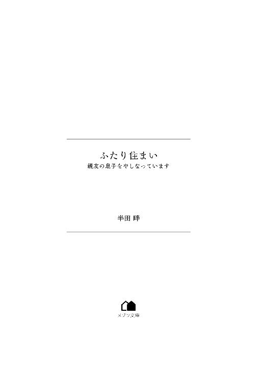

| ふたり住まい 親友の息子をやしなっています (メゾン文庫) | |
| 半田 畔 | |
| 一迅社 (2018) | |

生活の跡がない、新品みたいな白いシーツが体にかけられていた。慣れない固さのベッドと、左から差す陽の光で、ここは家の寝室ではないと悟る。朝日なのか夕日なのかはわからないけど、通学の準備をする息子の未樹の騒がしい音も聞こえてこないし、帰宅後に趣味のピアノを弾いている音もしない。
病院のベッドにいて、最後の記憶をたどると、車を使っていたときだった。ということは、あたしはどこかで事故を起こしたのか。
体中がしびれていて、どこも動かせなかった。利き腕の右が動かないとわかったとき、一番不安になった。
顔をかたむけて、そばにいた両親に渇いた口であえいで見せると、水をくれた。うまく飲み込めず、そのとき、自分の命が残り少ないことに気づく。本能的なもので、きっと誰も気づいていない。この体を持っている、あたしだけの実感だった。
普段は無表情な父も、このときばかりは動転していて、その混乱をおさえるために、あたりを落ち着きなく見回していた。母はせわしなく動き回っている。昔から娘のあたしにも容赦なく、感情を全身で表現するひとだった。二人はこれからも幸せに生きるだろう。なら、あたしは？
「ねえ、お母さん」
「茜！ 待ってて、お医者さんを呼んでくる」
「だめ。いかないで。ここにいて」
「でも......、やっぱりいますぐ呼ぶべきよ」
「聞いて。お願いだから、聞いて」
あたしの意思をくみとったのか、父が母の肩にふれて、意識をあたしに向けさせるようにしてくれた。母も冷静になる。だけどその陰に、不穏を感じ取っている顔だ。
「未樹はどこ？」
「いまはまだ学校よ」
そうか。それならやっぱり、ここで言うしかない。元夫の荘次郎に伝えてもよかったけど、あいにく彼はここにはいないようだ。
本人に伝えられないのは心残りだけど、大丈夫、両親は未樹に次いで、世界で二番目に信頼できるひとたちだから。
「ひとつだけお願いを聞いてほしいの。もしあたしが死んだら、」
「だめよ。そんなの、言わせない」
母があたしの手を握ってくる。残念ながらその強さをあたしが感じることはできない。何がなんでもあきらめない。どんなことがあっても認めない。そんな力強さを、あたしはきっと母から受け継いだ。その後で父は、すべてを悟ったように唇をかみしめている。理解が早いとまわりがほめてくれる、その聡明さを、あたしはきっと父から受け継いだ。
意識が濁ってきていた。もうすぐ眠る。次に起きられる保証はない。だから、限られた時間で、精一杯の愛を残す。
「もしあたしが死んだら、どうか、未樹を久水に託して」
「久水？ 久水ってあの久水ちゃん？」
そう。久水。この世にいる、あたしの唯一の親友。
死の淵に立ってもこうして彼女を思い出せているということは、やっぱりあたしの人生にとって久水は大切な存在だったということだ。自分をほめてやりたい。
「どうして久水ちゃんなの？」
「お願い。不安だろうけど、あたしを信じて。最後の願い。どうか聞いて」
母はそれ以上何も聞いてこなかった。父が近づいて、あたしの手に触れる。
「久水ちゃんの住所は知っているのか？」
「携帯に、電話番号と一緒に登録されてる。二年前のものだから、いまも一緒かはわからないけど。でも、番号は変えてないと思う。あの子、面倒くさがりだし」
もう二年も会っていない。連絡もなかなか取れなかった。でも。それでもあたしは、久水を信じている。だってあたしたちには、絆以上に特別なものがあるから。
「久水に会って事情を話して。もしも彼女が戸惑ったら、さらにこう伝えて。『あのときの約束を果たして。久水、いまがそのときよ』って」
伝える。きっと伝えると、母か父のどちらかが答えてくれた。瞼が落ちて、音が遠くなり、この時間を追えなくなる。
いい人生だった。そう振り返る暇もないほど、唐突な死だったけれど。
それでも残す意思はちゃんと残した。大丈夫、あたしは遠屋久水を信じている。
未樹はきっとこれからも、幸せになれる。
１
「単刀直入に言うと遠屋さん、きみのことが信じられない」
上司にずばりと言われた。進んでいるイベントの案件の責任者を、自分にしてもらえないかと相談したら、ずばりと言われた。もともと最初に受注まで持っていって、話をとりつけたのは私なのに、ずばりと言われた。
立ち尽くすとはこのことかと、両足が教えてくれた。
「それは人間的に信頼できないという意味ですか？ それとも仕事をするうえで信頼できないという意味ですか？」
「その二つに違いはないと思うが」
「一生懸命やってます」
「よくわかっている。大抵の仕事ができるのも知ってる。でもきみが管理している人員のなかで、なぜか発注のミスを起こすアルバイトが多いのも事実だ」
「私のせいじゃありません。把握してなかっただけです」
「把握しておくべきだったんだ。イベントプランナーなら、なおさら細かい部分に目が行き届いていてくれ」
欠点をあげるなら、きみはもう少し、自分以外の人間にも興味を持ったほうがいい。そんなもっともらしい言葉を最後に投げつけて、上司は去っていった。
オフィスの自席に戻って同僚たちにそんな報告をする。なぐさめてくれる田中くん、呆れた表情と嘲笑いを見せてくる比打さん、目の前の書類整理に涙目になりながらも、気にかけてくれる恵ちゃん。
「ひどいよな。遠屋さんは誰よりも遅くまで仕事しているのに」
「ありがとう田中くん、でもそれね、なぐさめになってないよ」
すぐさま後悔の顔になった田中くんを比打さんが笑う。彼女はよくひとをバカにするけど、嫌味がなくて、すがすがしい。そんな比打さんが訊いてくる。
「そもそも久水は、どうしてこの仕事を選んだんだっけ？」
「内定が取れたから」
「......その理由で十年以上やれるのもすごいよ」
比打さんは純粋にはひとをほめない。彼女が純粋じゃないからか、それとも私が純粋じゃないからか。答えは後者だ。
自分が仕事に打ち込める理由。親がこの仕事についていたとか、昔どこかのイベントで感動させられたとか、ひとを喜ばせるのが好きとか、そういうモチベーションの高い、きれいな理由を語ることができれば本当はよかったけど、残念ながら動機はどこまでも単純で、呆れるほど不純なものだった。
温厚そうな田中くんには、同棲している彼女がいる。厳しく自分を叱咤してくれるのが魅力なんだとか。
二歳年上のお姉さん肌である比打さんには旦那さんがいる。今度、家を買おうとしているらしい。
メガネをかけておさげの髪型、いまどきの子には珍しく純粋そうに見える恵ちゃんにも、色恋こそないが、その正体はお嬢様だ。その気になれば親のフォローで楽して暮らせる。
ようするに私には、彼ら彼女らが持っているような、そういう幸せの種のようなものがない。
潤沢な資産があるわけでも、愛で支えあっているわけでも、将来を見据えた家族設計があるわけでもない。そして自分はそういう人間になるだろうと、就職する前から気づいていた。
仕事に熱中しているのは、忙しいせいで幸せの種を拾う暇がないという言い訳を、自分に持たせたかったからだ。究極的に言えば、忙しければどんな仕事でもよかったのかもしれない。
劣等感を抱いて生きてきたのは、自分よりも優秀なひとが、学生生活の間、常にそばにいたからかもしれない。思考の果てで彼女を思い出しかけて、すぐにやめる。
とにかく、忙しければ忙しいほど、私にとっては好都合だった。
「書類整理、新規の受注管理、イベントスペースの候補洗い出し。今日中の経費精算。これは今日も残業かな」
「なんでそんなうれしそうなんですか......」
かたや膨大な書類に泣きかけている恵ちゃん。その頭をぽんと撫でる。恵ちゃんの書類の束をいくつか取って、自分のデスクに乗せた。大きな仕事も結局まかせてはもらえなかったから、ちょうどいい。
忙しければ、余計なことも考えずに済む。
帰宅時には商店街を通っていく。ドイツの童話に出てくる音楽隊から取った名前がつけられた商店街で、通りのあちこちにも、その動物音楽隊の銅像が置かれている。地面もどことなくドイツの街の石畳風に装飾されていて、平日、休日問わず賑やかな通りだ。大抵のものはここで手に入るが、私が帰るころにはほとんどの店がシャッターを閉めてしまっている。ひとの数はおろか、ついている街灯すらまばらで、どこか心細い。みんなとっくにここを去っていて、家に帰り温かいご飯を食べている。そんな誰かに置いていかれて、必死に追っているような気分にかられる。
それでも遅くまで開いてくれている良心的な惣菜屋さんもあって、私はひいきにしている。
夕飯を調達したら、次はレンタルＤＶＤの店へ向かうのがお決まりだ。漫画のレンタルも併設している店で、気になるものはまとめて借りる。社会人になるまで映画のほうはそんなに観てこなかったけれど、深夜遅くまでやっているシステムにひかれて入ったのがきっかけで、いまでは軽い洋画マニアだ。これで俳優の名前まで覚えだしたら、もう末期だと思う。ベネディクト・カンバーバッチが好きだ。
通りをそれて、路地を進む。Ｔ字路のつきあたりに小洒落たマンションが一棟あって、そこに住んでいる。大家さんが心血と暇をそそいでリフォームした外装だ。就職時にアパートも考えたが、さすがに親に反対された。セキュリティ！ と叫ばれたのを覚えている。
三階のつきあたりが私の部屋。開けた玄関にはちらかった女性ものの靴。すべて自分のもの。気分がのれば片づけるときもある。もう三年くらい気分がのっていない。
部屋着に着替え、惣菜とインスタントのご飯を食べながら借りてきた映画を観る。お惣菜のからあげが二個余分に入っていて、店員の心遣いにほっこりする。服の布がすれる音。箸を動かす音。頬づえをついたとき、テーブルがきしむ音。すべて私ひとりが出す音だ。この部屋で。就職してから数えて、もう十年以上。
一本分を観終えて、あとはシャワーをあびながら歯を磨き、ベッドに倒れ込むとちょうどいい時間だ。長い期間をかけて磨き上げた、私のルーティン。スケジュール帳を一度開き、プライベートの印がひとつもない、仕事だらけの予定を確認し、就寝。
する直前だった。
携帯が鳴って、明かりを消そうとした手が止まる。こんな遅い時間に誰だろう。仕事関係であれば、仕事のほうの携帯にかかってくるはずだ。いまかかってきているのはプライベートなほう。めったにならない着信音に、最初、何が起こったのか把握しきれなかった。
表示された名前を見て、さらに理解が遅くなる。画面には『工藤（母親）』とあった。誰だっただろう。いや、本当はわかっていて、脳が悟るのを拒否しているみたいにも思えた。
私の性は工藤ではない。だけどその下には（母親）とある。
誰かの母親という意味で、つまり工藤という人間とは家族ぐるみの付き合いがあり、そういう深い人間関係が私にあるかというと、実はある。
工藤 茜。
彼女の名前が、その顔が、容姿が、言動が、頭をよぎる。
忘れていた顔。思い出そうとしなかった声。そう、今日の昼間も、彼女を思い出しかけた。何かの運命のように、こうして茜のお母さんからの電話がかかってきて。
「もしもし。ごめんなさい。久水ちゃん、もう寝てた？」
「いえ、大丈夫ですよ。お久しぶりです」
彼女のお母さんとは高校生のとき以来だ。だけどその小さな記憶の断片から、聞こえてくる声が確かに茜の母親のものだとわかった。部屋にジュースを運んできてくれたときの声、夕飯を一緒に食べていってと誘ってくれたときの声。その懐かしさに、脳が揺れた。
「こんな遅くにごめんなさい。いろんなひとに連絡を取ってて、それですっかり遅くなっちゃって。茜の携帯のアドレス帳を見て、五十音順にかけてるの」
遠屋という私の性は、五十音にすれば後ろのほうだろう。いやそんなことはどうでもよく、問題はどうして彼女のお母さんがそんなことをしているかだ。
気づけば手を握っていた。この部屋には私ひとりだけで、誰かの握る手もなくて、だからむなしく、太もものうえで拳をつくるしかなかった。ゆっくり開くと、汗でぐっしょりと濡れていた。姿勢を正していた。つばを飲み込むと、ごくり、と鈍い音がした。
「聞いてくれる？」
「聞いています」
声がかすれた。準備もできていないまま、きっと何度目ともわからない宣告だったのだろう、茜のお母さんは淡々と伝えてきた。
「茜が亡くなったの」
２
工藤茜に関する思い出を語れと言われたら、私は小学校から高校までの自分の人生をさらけ出さなくてはいけない。そして私に自分の人生を語る趣味はない。人生を明かさなくてはならないほど、それほど強く、工藤茜は私の記憶に住んでいる。
学校で、初めてまともに話せた相手が工藤茜だった。実感をともなうという意味で、劣等感という言葉を最初に教えてくれたのも彼女だった。大事にしたい、裏切りたくない、期待に応えたい、そう思えるたったひとりの相手だったのに、どこか憎む気持ちもあった。誰よりも好きだったのに、誰よりも嫌いだった。
茜だけが私を、私のことを「親友」と言い張り続けた。うれしくもあったけど、私にはそれが、本当は一番の疑問だった。
高校卒業を機に別の大学に進み、そこから徐々に連絡が途絶えていった。たまに会うこともあったけど、そのたびに彼女は大ニュースを連れてやってきた。結婚した。子どもができた。夫と離婚した。彼女の人生のスピードは、きっと私のそれとは違う。ちなみに子どもができたと話してくれたのは、まだお互いが大学生のころの話だ。
最後に茜から連絡があったのは半年前。着信があって、出られなかった。その前は二年と少し前。私の住んでいる町の近くに偶然引っ越してきたから、今度遊びに行ってもいいかという電話だった。結局その願いはかなわなかった。
電話越しの茜のお母さんの声は、終始申し訳なさそうだった。
「葬儀がね、二日後の昼になっちゃうんだけど、来られる？ 仕事で忙しいだろうし、もし無理だったら......」
スケジュール帳を見る。二日後は木曜日。打ち合わせが二件、それから社内ＭＴＧが一件、契約がまとまりそうなのがひとつあって、そこに電話を。
「行きます」
答えるのに数秒はかかっていたかもしれない。だけど行くと、そう答えられた自分は、まだまだクズではない気がした。同時にもしも大学の友人相手であれば、こうは答えなかったもしれないと、自分の危うさを実感させられた。
「ありがとう。メールで場所を送らせてもらうね。それからもうひとつ」
電話の向こうで、これまでただよっていた申し訳なさのような雰囲気が、ふと消えて。最後に聞こえたその声からは、遠慮のようなものがもうなくなっていた。
「葬儀のあとに少し話があるから。久水ちゃん、終わったら声をかけてもらえる？」
会社を休んでもいいかという相談を、葬儀の前日にした。相手は私に仕事を許可しなかったあの上司だ。直属の上長になるため、彼以外に相談することはできない。
「何言ってるんだ、ダメに決まってるだろう」
「......え、でも引き継ぎは済んでいて」
「違う。仕事をするのがダメと言ったんだ。絶対に行ってこい」
「............はあ」
こういう気障ったらしい答えが嫌いだった。本当はたぶん、私が思うほどひどい人間ではないのだろう。もしかしたら上司こそがまともな人間なのかもしれない。けれどどうして素直にわかったと答えてくれないんだろう。ただ普通に許可してくれるだけでいいのに。もっとシンプルでいてほしい。
「というか、今日だってどうして出勤できたんだ？」
「仕事をしてたほうが気がまぎれるので」
もっともらしいことを言って、結局その場を去った。
茜との思い出や、あの夜の電話、上司のことなど、思い返しているうちに、乗っている電車が葬儀場の最寄駅に着く。なんとなくイライラしたまま、ロータリーからタクシーに乗り込んで、現地へ向かう。
人生で葬儀という機会にあまり触れたことがなかった。中学生のころ、一度ひいおばあちゃんの葬儀を見たことがあるくらいだ。当然あわてるかと思いきや、実は仕事で一度関わったことがある。葬儀会場の展示イベントがあって（モデルルームの葬儀会場版みたいなもの）、そこでついでに作法やあれこれを教わった。
会場に着く。とてつもなく大きな場所で、何かのコンサートホールと言われても納得がいった。
いくつかの親族が同時に葬式を行うようで、工藤家とある看板を頼りに進む。受付を見つけ、記帳する。茜の両親がいて、挨拶をする。お母さんのほうはすぐに私に気づいた。
「ごめんね、電話で伝えた話のことだけど、あとでいい？ 式が終わったあとすぐそこの火葬場へ移動するんだけど、その前のところで待っていてくれる？」
「はい。かまいません。わかりました」
「こんな広いところになっちゃったけど、そうでもしないと収まりきらなくて」
「茜は賑やかなほうが好きでしょう」
愛想笑いではあったが、お母さんのほうは反応してくれた。お父さんは別の参列者の相手をしている。
式場のなかに入ると、収まりきらないという言葉が冗談ではなかったことを知った。多くの椅子がぎっしりと並べられているその様は、小学校の卒業式と言っても違和感のない光景だった。
誰もかれもが知らない顔だった。茜の子どもの友達であろう、小学生の高学年くらいの子どもたちから、両親のつながりでやってきたのだとわかる、お年寄りまでいる。老若男女、本当に問わない場所。
高校の卒業を機に、茜とはあまり連絡を取らなくなった。その十数年の間に、茜には私の知らない、これだけの知り合いができていたのだ。もちろん、今日来られなかったひともいるのだろう。すべてを集めたら、きっとこの会場でも足りないくらいだ。
私にこれと同じ葬儀が開かれるだろうか。間違いなく、ありえない。それはいつも彼女に抱く劣等感のひとつかもしれないが、いま感じているのはそれよりも、もっとずっと強くて、情けない思いだった。親友と呼ばれてうぬぼれていたのかもしれない。ここに来てみてわかった。なんのことはない、私はきっと、大勢いる茜の知り合いのうちの、ひとりに過ぎない。
式は滞りなく進んだ。そのスムーズな様は、どこか茜の人生を思わせた。僧侶の読経が始まって、親族のあとは参列者がひとりずつ、祭壇に進んで焼香を済ませる。
一時間近く経ったころ、私の出番が回ってきて、列の真ん中を進む。祭壇の奥には、故人であることを象徴する、茜の写真があった。赤ちゃんの頭を撫でて、笑っている写真だ。赤ん坊の顔は途切れて見えない。だけど生まれたのはもうだいぶ前だ。いまはいくつになっているのだろうか。
答えを探すように、次に親族のほうを向いて一礼する。
「......あれ」
そこに子どもの姿はなかった。一席だけ空いていて、だけどしっかり用意はされているあたりをかんがみると、今日だけはいないことを知る。そして小さく声が出てしまった自分を恥じて、焼香を早く済ませ席に戻る。
式が終わると、次は出棺だ。見送りをさせてくれと、我先に茜のいる棺桶に群がっていく人々のなかに、私は入ることができなかった。
霊柩車が動き出して、全員が合掌する。あそこに乗っているのは茜だ。そんな考えがよぎって、手が、どうしても、動かなかった。隣のひとにじろりと睨まれた。
親族以外は火葬場へ行けないのが原則だ。まわりが散らばりだして、わたしもまぎれて解散するフリをする。通常であれば帰ってもいい場面ではある、が。
『葬儀のあとに少し話があるから』
茜のお母さんの話。
いったいどんなものだろう。
私だけを呼んだのだろうか。それともほかのひとも？
解散の列からまぎれて、式場の敷地内を移動し、火葬場の前までたどり着く。近くにベンチがあったので、そこで座ってじっと待った。
火葬場から数人が出てきて、工藤家の人たちだとわかった。一番遅れて茜の両親が階段を下りてくる。少しだけ見回して、すぐに私に気づく。砂利道を、音を鳴らしながらこちらに近づいてくる。途中で、二人の行く手を男が阻んだ。そのまま立ち話になる。大人しく待つことにする。
何度か男が声を荒らげる場面があり、内容はここからでは聞き取れない。最後に茜のお母さんが首を横に振ったところで、男はあきらめて退散するそぶりを見せる。振り向いた男は、遠目で私を睨んでいた。私の座っているベンチでも、近くの木でも、この空間自体にでもない、私自身に視線を向け、じっと睨んでいた。
どこかで見たことがある気がした。会話をしたことはあったか？
茜の式場で、茜の両親につめ寄り、まるで私と会うのを止めようとしていたかのような行動。なんとなく、正体がわかった気がした。
「ごめんね。待たせちゃって。残ってくれてありがとう」
「いえ」
茜のお母さんがやってきて、私は会釈をする。隣に座っていいかを尋ねられたので、大人しくスペースを空ける。お互いの顔は見ないまま、数十秒の時間が過ぎる。その間、あの男に関して話す様子はなかったので、ひとまず忘れることにした。ほかのひとがやってくる様子も特になく、両親に呼び出されたのは、本当に私ひとりであったことを今さら知る。同時にそれは、私個人という人間に、用があるという意味だ。
風が二、三度、髪を揺らしたあと、茜のお母さんが口を開いた。てっきり茜の小さいころの思い出話でもするのかと思っていたら、そうではなかった。私自身、過去を掘りだすのは苦手だったから、助かった。
「茜を最後にみとったのは、わたしたちだったの」
話題は最近のことだった。一週間も経っていない、その生々しい事実を、伝えられる。両親は私がそこにいなかったことを、もしかしたら責めるつもりだろうか。娘が親友と認めていた私に。何か話をしなければ、いけないだろうか。
「事故にあって、本当なら即死していてもおかしくなかった。ずっとこん睡状態だったの。目覚めることはないだろうって。でもあの日、数分だけ、茜は目を覚ましたの」
茜のお母さんはたまに息継ぎをしながら、声をかすらせながら、それでも続ける。かたわらでそっと、お父さんが彼女の手を握っていた。見ないフリをした。
「あの子、わかってたのよ。いま目覚めているのは奇跡で、数分後にはこの世からいなくなるって。それでも茜は弱音ひとつ吐かなかった。怖いとも、苦しいとも言わなかった」
「茜は、なんと言っていたんですか？」
思わず訊いてしまっていた。黙って話を聞くべきなのに、口をはさんでしまっていた。残された最後の数分間で、茜は何を伝えたのだろう。
「茜はこう言ったの。息子の未樹を、あなたに託したいって」
「え？」
隣にいる、お母さんのほうを向く。そして目が合った。その瞳は乾いていたが、ずっと奥では濡れているのがわかった。誰にも見えない涙だ。
「未樹の幸せを気にかけてた。あの子は最後に、親友であるあなたに未樹をまかせたいと言っていた。いますぐここで決めろとは言わない。けれど」
「ま、待ってください」
茜は死んだ。
今日、葬儀を済ませた。
たったいま、灰になった。
それなのに彼女の存在は、いまもなお、色濃く残っている。そこにいる。私を戸惑わせている。
「茜とはもう何年も会ってません。連絡だって、本当にたまに取っていたぐらいで」
「知ってるわ。ぜんぶ知ってる」
「だったら、不安になるでしょう？ そんなひとに、お母さんたちは孫を預けるなんてするんですか？」
責めるような口調になってしまったが、許してほしかった。気にかける暇がないくらい必死で、動揺していた。茜のお母さんは静かに笑うだけだった。お父さんにいたっては無表情だ。このお父さんはそういえば、私が学生のころからそうだった。
「昔は仲が良かったかもしれないけど、ひとは変わります。私がいまどんな人間かなんて、茜にわかりっこない」
「でも、茜が言ったの」
「い、いくら茜の頼みだからって、こんなことまで聞くんですか？」
とつぜん死んで。
とつぜん子どもを預けようとするなんて。
自分でひとは変わるなんて言ったあとだけど、訂正する、茜には当てはまらない。
昔から彼女は変わらない。いつだって突拍子がなくて、無自覚にひとを困らせて。
「久水ちゃん、この際だから本当のことを言うけど、わたしたちだって不安よ。いくら茜の親友のあなたでも、孫を預けるのはすごく怖い」
「それなら......」
「でもわたしたちは、茜を信じるって決めたの。まず信じてみることにした。茜が信じている、あなたを信用してみたいの」
ぼそり、と小さく声がした。茜のお父さんが、お母さんにつぶやいたのだとわかった。それでお母さんは思い出したように、こう続けてきた。
「茜はこうなることも見越していたのかもね。あなたが渋ったら、こう言えって言ってた。だからそのまま伝えるわね」
咳をひとつはさんで。
何かが乗り移ったみたいに、声色が変わって。
茜は言った。
「『あのときの約束を果たして。久水、いまがそのときよ』」
３
ベッドにもぐってからも、なかなか寝つけなかった。明日からは出勤する予定で、いつもならとっくに寝ている時間だった。そういう焦りも手伝って、何時間もベッドを温め続けることになった。
目をつぶると、彼女の声が再生される。
聞いたのは確かに茜のお母さんの声だったのに、思い出すと、どうしても茜の顔が浮かび、声が聞こえてしまう。
約束を果たして。
いまがそのときよ。
「なんでそんなの、覚えてるのよ......」
そして自分自身にも呆れる。しっかり覚えていることに。
高校生、最後の年。私と茜が交わした、たったひとつの約束。
放課後。生徒もとっくに帰った昇降口で、彼女と交わした約束。
笑って去っていったその背中を、強く覚えている。
翌日は結局、時間ぎりぎりに起床した。急いでスーツを着て走れば、いまならまだいつもの電車に間に合う。体が少し熱いから、途中のコンビニで百円のアイスコーヒーでも買おう。
ベッドから起きて、体が熱いだけではなく、どうやらだるさもあることに気づいた。いつもなら顔を洗えばしゃきっとするはずなのに、今日はいつまで経ってもそうならない。部屋着を脱ごうとしたところでつまずいて、ふらつき、そのままベッドにまた落ちる。近くのラックの引き出しから体温計を出して測る。頼むと祈るが、あてが外れた。38度９分。やってしまった。健康に自信はあったのに。数少ない私の取り柄だった。
いまのメンタルで上司に連絡する気にはなれなかった。本当は義務だったが、無理なものは無理。すがるように比打さんに電話した。事情を説明すると、すぐに納得してくれた。
「あたしが休むって伝えておいてあげる。あんたは寝てなさい」
「すみませぇん......」
「まあ、ちょうどよかったと思うよ」
「なんで」
「あんた、自分がどうしてそうなってるかわかってる？」
「昨日休んだ、から？」
「働きすぎだから、よ」
ため息を皮切りに、比打さんのお説教が始まる。以前から言いたいことがたまっていたらしく、これがもう、吐き出されていくのなんの。これなら上司に連絡したほうがマシだったかもしれない。
「いつ倒れてもおかしくなかったはずよ。それがいまだっただけ。正直あんたのハードワークは、見てるこっちがやられるのよ。いい？ 今日と土日でゆっくり休みなさい」
「でも、今週中に片づけないといけないものが」
「働いたら殺す」
やさしいのか厳しいのかわからない罵倒だった。人間をやめろと言われているような気分になったので、いまの言葉はやっぱり厳しい。
「あんたみたいな子のこと、なんて言うか知ってる？ ワーカホリッ......」
「わかりました！ わかりましたからその先は言わないで！」
私の嫌いな言葉が告げられる前に、無理やりさえぎる。とにかくまかせろ、とそれから一方的に電話を切られて会社への欠勤報告はおしまい。
比打さんには秘密していたが、土日もパソコンでできる範囲の仕事はしている。もし明かしてしまったら、部屋に乗り込んできて看病されかねない。冗談じゃない。この部屋の散らかりようを見たら、キレられるだろう。
雑多な服やゴミ、掃除していない床。ほこりのつもったテレビの裏。何年も前に枯れたベランダの観葉植物。部屋でひとり、電気をつけていないと、滅入りそうになる。
部屋の隅に転がっている救急箱から、風邪薬のビンを取りだす。残り二錠しかなかった。三錠ずつの服用と書いてあるのに、なぜ偶数個が残るのだ。自分の管理のずさんさに腹が立つ。仕方なく、二錠の効果を期待して服用し、ベッドに臥せる。
本格的に何もしない一日は、本当に久しぶりだった。
そして何もしない間、人間は余計なことを考える。
茜との約束。
葬儀の日、別れ際、茜の母親が言ってきた。
「今日、いますぐ決めろなんて言わない。でも近いうちには連絡してほしい。待ってるね」
死んだ人間はこの世にはいない。当たり前のこと過ぎて、その言葉の意味は重複している。馬から落馬するくらい重複している。ああ、熱のせいでまともに頭が働かない。つまり何が言いたいのかと言うと、約束は生きているひと同士の間で果たされるという事だ。片方がいなくなれば、果たす義務はない。それを認めてくれるひとが、いないのだから。
よりにもよって、自分の子どもを預けようとするなんて。
ペットの猫や犬とはわけが違う。
人間だ。
まぎれもない、ひとりの子どもだ。
それなのに、どうしてこんな私を、信用できる。
だいたい私はまだ認めていない。茜が死んだなんて、認められない。
ベッドから起きて、冷蔵庫に残った麦茶をがぶ飲みして、空にする。体が急に冷える。大量の水分が流し込まれて、胃が驚いたようだ。空のパックをそのまま流しに放って、またベッドに帰還。
体がぼろぼろになっていると、ようやく実感できた。働きたてはそれがかっこいいだなんて思っていたけど、とんでもない。熱したフランパンに手を置くくらい、自虐的で愚かな行為だ。
わかっている。
働きすぎなことくらいわかっている。それにすがっている自分がバカなのも知っている。でも、やめられない。こうでもしないと、自分を認められない。
三十路を過ぎて、救いのない人生は嫌だ。せめてもと、自分には仕事があると、そう言い張りたい。もっと仕事ができる優秀な人材であればよかったけど、それもかなわない。
三食まともにとる習慣など、とうに消え失せた。仕事を言い訳にまともにおしゃれすることすら逃げている。
実家に帰れば、そのたびに「け」から始まる人生大転換の話を親に迫られるから、最近は行っていない。
ひとは誰かに見られていないと、あらゆることをサボリだす。過度な干渉は確かにストレスだけど、それでも適度な緊張は必要だ。テンプレートにもなっている言葉、「ひとはひとりでは生きていけない」とは、もしかしたらそういう悪習を伝える意味もはらんでいると、最近は考える。
私はもう何年、ひとりだろう。
これから何十年、ひとりなのだろう。
苦しい。
体中が痛い。
誰かと手を伸ばしても、つかむのはむなしい空っぽの空間で。
寂しくて、泣いたらきっと情けなくて。
だけど茜はこんな風邪よりも、比べ物にならない苦しみを受け入れた。これ以上の痛みを受け入れた。必死に、誰かにその意思を託した。
劣等感よりも、悔しさが勝って。
そうやっていろいろ考えて、いつの間にか私は眠っていた。次に起きたときは、カーテンから差し込む朝陽が、夕陽に変わっていた。
熱は引いていて、だるさもいくらか解けていた。
思考が驚くほどクリアだった。
携帯を開いて、会社に連絡。はしなかった。
代わりにアドレス帳を開いて、工藤（母親）を出す。三回目のコールで声が聞こえた。
「もしもし」
「............」
「久水ちゃん？」
「私の部屋、狭いですよ。それでもいいですか？」
沈黙。
数秒の間があって、答えが返ってきた。
「ありがとう」
一週間後の日曜日に、茜の両親が未樹くんを連れてくることに決まり、電話を切る。終わった後は、自分が思っていた以上にすっきりしたようで、部屋の窓から夕陽を眺める余裕もあった。
彼女がどこの空にいるかもわからないから、とりあえず、つぶやいておくことにする。届けなんて思わないけど、せめて気は楽にしたかった。
「どうなっても、知らないからね」
４
前日の土曜日は一日、部屋の片づけに追われた。
掃除はまず、掃除機を探すところから始まった。服はタンスにしまい、ベランダの枯れた観葉植物もすべて処分した。
部屋にひとを招くなんて、いつぶりだろう。招くどころか住むことになるが。とにかくひとが来るのは、去年の年末に比打さんと田中くん、恵ちゃんのメンバーが私を憐れんでパーティを開いてくれたとき以来だ。
パソコンには一度も触れなかった。もともと休日と定められているから悪いわけではないのだが、なんとなく、心の収まりだけは悪い一日だった。
茜の息子である未樹くんは、今年、中学に上がるという。いまは三月で、あと二週間ほどで入学だ。彼女は息子の制服を見ることはかなわなかった。通う中学を携帯で調べてみると、ここからでも十分近い位置にあった。
問題の寝場所だが、実はここには、もうひとつ部屋がある。私がずっと物置として使っていた、六畳ほどの部屋だ。ちゃんと窓もあって、倫理的にも問題はないと思う。
ここに越してきたときの私はまだ、異性の誰かと自分が同棲を始めるような妄想を抱くことができていて、そのイメージを消したくないとプライドも持っていて、だから少し無理をしてひとつ部屋が多い、この一室を選んでいたようだ。まさかよその親の子どもの部屋になるとは想像もしていなかったけど、物置よりはマシだと、部屋も喜ぶだろう。
掃除で動かした体の疲労は、仕事をしていたときに感じるものよりも、どっとくるものがあった。おかげでベッドに倒れ込むと同時に眠ることができた。緊張で少しは興奮するかと思っていたが、そんなことはなかった。自分に呆れる。
そして日曜がやってくる。
お昼前には、ということだったが、正確な時間を知らされないと、意外にこれが不安になる。たぶん脳が仕事に支配されすぎたせいだ。打ち合わせの時間を決める時に、「お昼前」などとあいまいな概念は使わないから。自分に呆れる。
やっぱり昼食を用意するべきか。と言っても、何もない。カップめんくらいしかない。冷蔵庫をのぞくと、使いかけの味噌だけがあった。
私は料理もできない。何か注文すべきか。というか、どういう対応ができるかを試すために、茜の両親は昼ごろに来ると告げたのだろうか？ 疑心暗鬼になっていると、とうとう、インターホンがなった。フロントからの通知音。応答し画面を確認すると、茜のお母さんの顔がどアップになって映り込んでくる。これでは肝心の未樹くんの姿が見えない。こういう天然なあたり、お母さんは茜にそっくりだ。
「ドアを開けるので入ってください。三階の一番奥の、３３１号室です」
数分経って、今度は部屋のインターホンが鳴る。
深呼吸ひとつ、背筋を正して廊下を進む。誰よりも知っている自分の部屋の廊下なのに、いつもよりも、とても長く感じた。
玄関を開ける。
「こんにちは」私が言った。
「よろしくね」
茜のお母さんが応えて、わきにどく。
その背中に隠れていた少年があらわになる。自分から身を差し出すように、そっと一歩、近づいてくる。
茜の息子と聞いて、どんな子かを想像した。
きっと頭は良くて。
ルックスも整っていて、すべてが恵まれていて。
そして中学生で男子という年ごろを考えれば、そんな自分の優秀さに浸って、ひょっとしたら、まわりのすべてを下に見て。世の中くだらないと、ふてくされているかもしれないと。
目の前の少年は、しかしそんな私の尖った予想を、おだやかにかわした。
第一印象は、子犬だった。
全身からただよう、静かな雰囲気。だけどうちに秘める器量のよさ。体つきは同年代の子たちよりも少し幼いだろうか。彼の背負っているリュックと、かたわらにあるキャリーケースがとても大きく見える。
着ている灰色のパーカー、そこからのぞく首は細く、その肌は白く、当時の女子である自分が見たら、おそらく嫉妬していただろう。もしくは負けたくないと、からかっていたかもしれない。
そっと、機嫌をうかがうようにこちらを見上げてくる瞳。前髪が少しかかって隠れているが、その目の形に、私は茜を見た。ぱっと見開かれて、目尻に向かってゆるやかに落ちていく線は、茜そのものだった。声を失う。
撫で肩から細い腕、そして手首へと視線を移動させる。右手の甲にほくろがあるのが印象的だった。
「工藤です」
少年が言った。はっとなり、私はあらためて、彼と目を合わせる。世界の礼儀がそこにつまったように、彼はゆっくりと体をかたむけてお辞儀をした。
「工藤未樹と言います。よろしくお願いします」
工藤茜にできないことはない。隣にいた私がそれを確信したのは、小学校三年生のときだった。
私と彼女にはそのとき好きなアニメがあって、毎週楽しみにしていた。どちらかの家に夜の七時ごろまでいて、一緒に観るのがお決まりだった。そのエンディングに流れるピアノの曲がいい、あたしも弾いてみたいと彼女が言った。その二日後、茜は私を引っ張って体育館にあるピアノまで案内した。聴いていて、と言うと、彼女はそのエンディングの曲を弾けるようになっていた。トロイメライという曲だった。
「この曲、ひとによっては夜明けに聴こえたり、日暮れに聴こえたりするんだって」
「べ、勉強したの？」
「んー、なんか勝手に頭に入ってきた。繰り返し聴いてたら、こんな感じかなって。そしたらできるようになったよ」
茜の家にピアノはない。だから彼女はいま、この瞬間に、ぶっつけで弾いてみせたのだと理解する。小学生三年生で、覚えている漢字も少なかったこのころの私だけど、異常という言葉は知っていた。
そうやって茜は、年を重ねるごとにできるものをどんどん増やしていった。茜のお母さんとお父さんは、彼女に何か習い事をさせて打ち込ませたがっていたが、本人が乗り気ではなかった。
「久水が何かやるんなら、あたしもやってもいいかな。ねえ、何かしたい習い事とかないの？」
「習い事かぁ。あはは、特にないかな」
本当はあった。してみたいこと、たくさんあった。でも茜は必ず私についてくる。私がピアノを弾きたいと言えば、その横で彼女も悠々と弾く。結果はどうなるか、わかりきっていた。ひとがいつか死ぬように、地球に空気があるように、学校で授業があるように、ヤギが草を食べるみたいに、当たり前のように彼女はあっさりと私を追い抜くのだ。そんな自分を、私は見たくない。
嫌いなわけじゃない。
むしろ好きだ。やさしくて、面白くて、自由奔放で、茜はいつも私を楽しませてくれる。私ひとりではできないような経験でも、茜と一緒ならへっちゃらだった。彼女のそばにいると、自分まで無敵な気分になる。
好きだからこそ、悔しかった。自分にできないことをあっさりやってしまう茜を。自分に持っていないものを何でも持っている茜を。それをひけらかそうともしない茜を。好きだからこそ、うらやんだ。対等でいるためには、私は彼女に、何で勝てばいいのか。
中学校は同じところへ進学した。その地域に住んでいる子たちにとっての選択肢は二校か三校か、だった。あるときパンフレットをそろえて、行きたい中学を同時に指さすことにした。見事にかぶった。茜はうれしそうだった。
私は茜のそばにい続けた。それは彼女のことが本当に好きなのか、もしくはよっぽどの自虐体質なのか、それか、もう離れられなくなってしまったのか。
中学生になると、男女はお互いに異性を意識するようになる。茜も例外なく、男子の意識をひきつけるようになった。そういえば、隣にいる遠屋もまあまあアリだよな、とか、そんなひそひそ声が聞こえてくることもあった。簡単に言うと、私は茜のカリスマのおこぼれにあずかっていた。茜の友達は私の友達にもなった。茜が異性と遊びに行くとき、私も誘われる。
中学を卒業するとき、ずっと抱えていた思いをぽろっと漏らしたことがあった。
「私ができて、茜にできないことって、たぶんないよね」
彼女はきょとんとした顔をした。それから呆れたように笑った。
「何言ってんの。いっぱいあるよ。だからそばにいるんじゃん。久水はあたしにないものを持っていて、そういうものが、好きなんだ」
「じゃあ言ってみてよ。たとえばどんなもの？」
「負けず嫌いなところとか」
「それほめてる？」
結局、はぐらかされて終わった。ちなみに私と茜は同じ高校に通うことになった。どちらが言い出すこともせず、気づけば同じ学校だった。
人生において。きっとこれからも、茜に私が助けられることはあっても、その逆はありえないだろうなと思った。私が茜の何かを助けることなど、絶対に起こらない。
だから高校二年の秋。昇降口の前で茜に呼びだされて、こう言われたときは信じられなかった。
「久水、あなたにしか頼めないお願いがあるの」
１
生活の激変をまず話すとしたら、相手は家族だろうと思っていた。他人の子どもを預かることになったのだし、その報告はまあ、しておくべきだ。だけど私が一番に報告した相手は、会社の同僚たちだった。
週が明けた月曜日。午前の出勤中は耐えられたが、お昼休みに入ったところで我慢の限界になった。昨日何があったかを伝えたい。いつものメンバー、比打さんと田中くん、恵ちゃんを集めて話を聞いてもらった。
すべてとまでは言わないけど、おおむねの話は伝えたところで、比打さんが口を開いた。わかってはいたが、口を開くのはまずこのひとだろうなと思った。
「要約すると久水、あなたは中学一年生になったばかりの男子を部屋に連れ込んだってことね」
「そのまとめ方は非常にまずいです。犯罪者になります」
「遠屋さん、いくら独り身がさびしいからって、よりにもよって男子中学生って......。淫行条例にひっかかるんじゃ」
「ほらもう誤解するやつがあらわれた！」
素直な田中くんがどこかに電話をかけようとしていたみたいなので、あわてて取り下げさせた。比打さんは完全に面白がっている。真面目な話をしてもすぐには真面目な雰囲気にさせてくれないのが、意地悪なところだ。
「でも、どうしてわたしたちに話してくれようと思ったんですか？」
ここにきて、初めてまともな質問をしてきたのは恵ちゃんだった。お嬢様だけれど、常識はしっかりわきまえている。さすがだ。そして意外に困る私だ。
「それは、その......、ひとりで抱えるには大きい問題だし。なんというか、共犯者が欲しくて」
「発言が犯罪者ですよー」
比打さんに諭され、すぐに撤回。
でも、ニュアンスとしては共犯者が近い。もっと純粋に、素直に、恥を忍んで答えるなら、悩みをひとりで抱えたくなかったから、だ。
「それで」
と、比打さんの声色が変わる。やっと聞いてくれる気になったらしい。
「昨日はどうだったの？」
未樹くんをなかに招き、そのまま茜の両親もついてくるかと思っていたら、玄関に立ったままだった。それで話があることを察した。
未樹くんも途中でついてこない私たちに気づいたが、同じように察して（もしくは事前に話があったのか）、何も言わず奥のリビングまで進んでいった。キャリーケースを狭い廊下のなかで進ませるのに、少し苦戦しているようだった。せめて手伝うべきだった。キャリーケースくらいは持って、運んであげるべきだった。ジブリに出てくるお母さんたちとかなら、必ずそうしていたはず。後悔しながら、茜の両親のもとへ向き直る。
「うまくやれるかしら」茜のお母さんが言った。視線は未樹くんがいるはずの奥のリビングにある。言葉のわりには、口元にやさしい笑みがあって、本当に心配しているのかがわからなかった。
「様子を見ながら、やってみます。なにかあったら相談させてください」
「ええ、もちろん」
私の言葉にも茜のお母さんは笑みを返してくれる。内心はどうなのだろう。心配を隠しているからこその笑みなのか、それとも、信用してもらえているのか。ああ、信用が、私は欲しいのか。
「相談のかわり、というわけではないけど」
茜のお母さんが言う。
「未樹の養育費の話をさせてもらえる？」
「ああ、はい」
もちろん、忘れていたわけではない。ただ、そこまで危惧はしていなかった。
「ひとり暮らしをしていて、恋人もいないですし、大きな趣味もないので、勝手に貯金がたまっていくんです。だからそれほど、負担にはなりません」
「そう？ 手伝うこともできるのよ。遠慮なんか、いらないんだから。こっちもね、茜の遺産が使いきれなくて、困っているくらい」
茜。
彼女の遺産。
「ありがとうございます。でも、いまは大丈夫です」
笑顔で返す。はたして自分はきれいな笑顔を浮かべていられるか、わからないけど、とにかく相手を不快にさせず、うまく断ることを意識した。茜の遺産と聞いて、なおさら受け取る気にはなれないと、本心を出してはいけない。それらはただの私のエゴだから。
数秒の間があいて、茜のお母さんがうなずいた。お父さんは最後まで何も言わなかった。二人の見送りが終わり、とたんにしんと、部屋が静まり返る。
リビングに向かうと、部屋のほぼ真ん中で未樹くんが立っていた。近くにソファもあるのに、触れようともしていない。ずっと同じ体勢でいたのだろう。
目を合わせるが、未樹くんもなにもしゃべってこない。というより、私がしゃべるのを待っている。
大丈夫。できる。
私はこの子を、やしなってみせる。
「ようこそ。へ、部屋を案内してあげるね。といっても狭いけど」
「はい。ありがとうございます、とんでもないです」
小さく笑って、会釈。感情をなるべく感じさせない声色。礼儀がしみついていて、どれも違和感がない。うちの会社に高校生が職業体験に来たことがあったが、その子たちなんかよりも、よっぽど自然な敬語やしぐさだった。何でも軽くこなすあたり、茜の血だな、と思う。
「まずはここ、リビングね。じゃじゃーん」
「......はい」
はい、だった。せめて「おおお」とか欲しかった。背伸びして、じゃじゃーんとか言った自分を殴りたかった。なんかもう帰りたい。ここが家だった。
あらためて、リビング。スペースは十畳と少しはあるが、その三分の一は私のベッドと私物で占領されている。なるべく壁ぎわに寄せたから、邪魔ではないはず。床にしいたカーペットは昨日まではなかったもの。押入れから引っ張り出した。真ん中にはローテーブル。食べ物のシミやあれこれがついていたので、頑張って消した。
「て、テレビもあるし、私が集めた映画ＤＶＤも好きに観ていいからね。漫画もあるよ。気になるのがあったら、どんどん読んで。ジャンプの持ち込みも歓迎」
「はい。わかりました」
「ベッドがあるのは我慢して。朝起きたとき、間抜け顔をさらしていたらごめんなさいね。あはは」
「あはは」
「............」
愛想笑いを愛想笑いで返されるむなしさを、久々に味わった。しかも相手は中学生。私のつたない説明で完全に気をつかわせてしまっている。いつもの仕事、企業や個人事業者を相手にしたイベント会場の説明なら、こうはならないのに。難しい。
一応、台所も案内する。リビングと同じ空間にあるが、一応、食器棚で仕切ってある。ゴミ箱もここに置いた。冷蔵庫の飲み物は好きに飲んでいいと伝えた。
「次はお楽しみの、未樹くんの部屋よ」
彼にとっても一番大事な、自室。リビング横の引き戸を開けると、六畳ほどのスペースがあらわれる。フローリングで、一応、掃除もした。いまは空っぽだが、ここに未樹くんの私物が増えていく。
未樹くんの顔をちらりとのぞくが、感情が読み取れなかった。不満げな顔も、うれしそうな顔でもない。目を細めて、あくびを我慢しているのに少し似ている。
「あー。少し狭かった？」
「いえ、僕にはもったいないくらいです」
この家に来てまだ十分も経っていない。会話もわずか。だけど彼の返答に、ある特徴があることに気づく。答えるとき、「はい」か「いいえ」が必ず冒頭にくる。
「荷物はリュックと、キャリーケースだけ？」
「はい。そうです、お邪魔にはならないかと」
「もうすぐ中学生ね。いつからだっけ？」
「はい。四月からなので、来週からですね」
「通学、大変そうじゃない」
「いいえ。むしろ前いたところよりも、近いかもしれません」
そして私が質問をしないかぎりは、自分からしゃべることはない。だが聡明な未樹くん、さすがに私の探りに気づいたようで、今度は自分からしゃべりだす。
「ま、窓の外はどんな景色なんですか？」
未樹くんが自分から歩き、まっすぐベランダのほうへ向かっていく。あ、待て、それだめだ。
「それ開けないで！」
叫ぶには遅く、未樹くんはカーテンを開けたあとだった。
ベランダの床には、投げ込んでおいた備品の数々。昔ダイエットに使った腹筋台。壊れたイス。棚。不要品のスピーカー。その他もろもろ。もともとは未樹くんの部屋で、物置として押し込まれていたものだった。どうしても処分する時間がなく、無理やりここに隠していたのだ。あとでこっそり捨てるつもりだった。
「すみません......」
「いいのよ。こっちこそごめん」
微妙な空気が流れて、そのあと耐えきれなくなったらしい未樹くんは、荷物の整理をすると、自分の部屋に戻っていった。引き戸を閉めてくれたのは、正直、助かった。
未樹くんの姿が部屋に消えて、そのあと、ふうう、となるべき気づかれないように息を吐く。どっと疲れが襲い、思わず膝に手をつく。
こんなことが、ずっと続くのか。
「それで、おしまい？」
一息ついたところで、比打さんが言ってくる。ため息を返す。
「そんなわけないでしょ。漫画みたいにコマが飛んだらすぐに翌日、とかないんですよ。ずっと気まずかったですよ」
「やつあたりしないでよ......」
あのあと、昼食をとりにファミレスに行った。未樹くんは私が頼んだ豚の生姜焼き定食よりも値段が安い、ざるそば定食を頼んだ。顔立ちも整っていて可愛かったりもする未樹くんだが、あそこまで完璧に気をつかわれると、逆にストレスを感じるのはなぜだろう。
帰る途中でケンタッキーを買った。夕飯だ。思いつかなかったから、もう先に準備しておくことにした。未樹くんは何も言わなかった。
夕飯まで、未樹くんはずっと部屋にいた。夜はチキンを食べながら映画を観た。レンタル期限がぎりぎりだった一本があったので、そして未樹くんも特に注文をつけてくる様子もなかったので、観ることにした。時計じかけのオレンジを観た。我ながら最低のタイミングだった。
いつもは何時に寝るのかと尋ねた。十時と返ってきたので、時間も近く、先にお風呂に入らせた。うちは脱衣所がなく、ドアを開けるとすぐに浴室だ。彼が入ったあと、ときおり、どたんばたんと大きな音がした。狭い室内でパジャマに着替えている音だと悟った。そう、もうここは私ひとりの空間ではない。裸でリビングをうろつくのはやめなくてはいけない。あの自由、好きだったけど、しょうがない。
歯磨きを済ませた未樹くんが「おやすみなさい」と、丁寧な声色で挨拶をしてきた。まだ完全に乾ききっていない、濡れた髪のつややかさに、思わず見とれた。
何かもう少し、話をするべきだという気もしたが、向こうも初日できっと疲れていただろう。だからそのまま部屋に帰した。今更ながら、未樹くんに部屋があって本当に良かったと思う。
彼が部屋にいるとはいえ、たとえば何か飲み物が欲しいときに出てくるかもしれない。そう思い、私も浴室で部屋着に着替えた。試してみて、なるほどという狭さだった。確かに難しく、おかげで未樹くん以上に暴れてしまった。
「で、今日の朝は？」
しつこく追及してくる比打さん。田中くんも恵ちゃんも気になるようだった。
「トーストがあったので、食べるように言いました。急いでいたので、そのまま出ました。未樹くんは来週から始まる学校までは、しばらく予習をしているそうです」
「どこにも外出はせず？」
「一応、スペアキーは渡してありますけど」
それでも彼は、外には出ないと思う。
親を亡くしたばかりの子だ。まして未樹くんは、何かが煮詰まって気晴らしに遊びに行くというタイプには見えない。
目の前のことに四苦八苦している私だけど、彼自身だって、きっとおだやかじゃないはずだ。昨日は眠れたのだろうか。
「その未樹くん、携帯は持ってるの？」
「もー、この尋問いつまで続くんですか？ 昼休みも終わるし、仕事に戻りたい」
あきらめるかと思いきや、比打さんは呆れたように返してくる。
「もともと久水のほうから話してきたんじゃない。あたしたち、久水がひとの子を預かったと聞いたのはいまさっきよ。びっくりした。田中くんや恵ちゃんなら百歩ゆずってわかるけど、あなただから、驚いた。ドッキリかと思った」
「ど、どういう意味ですか」
「自分の生活もまともにできないあなたが、ひとの世話をするのよ？」
「他人の子じゃありません。特別な、友人の子どもです。私だって良心はあるし、責任も持つつもりです」
「なら言うけど、出会って初日の夕飯がケンタッキーは最低」
「う......」
責任を持つという言葉だって、実はあいまいだ。
なにをどうすることが、未樹くんにとって、責任を取っていると言えるのか。私にはまだ、それがばくぜんとしている。そういう失敗が、会社に迷惑がかからないとは言いきれない。
もっと言うなら、私は仕事も大切にしたい。だからここは、折れることにする。
「尋問なんて言ってすみません」
「それで、未樹くんは携帯は持ってるの？ もしものとき、連絡は取れるの？」
「まだ番号は聞いてません。そもそも、持ってるかもわからない」
「もし持ってなかったら、早めに用意してあげたほうがいいですよ」
ここで田中くんが言う。
「遠屋さん、仕事で遅くなるときもあるでしょう？ どうやって夕飯やあれこれを済ませるんですか？」
二人に責められ、胃がきゅううう、としまる感覚に襲われる。こんなにわかりやすくストレスを感じることもなかなかない。仕事でのストレスなら意外と耐えられるが、これは種類が別ものだ。
癒しをくれたのは恵ちゃんだ。
「でもでも、話を聞いてる限り、すごく可愛い子ですよね？ 聞きわけが良くて、笑顔も素敵で？ ふふ、いつか会ってみたいな、未樹くん」
確かに。もしやってきたのが、私が想像したとおりのマセた子どもだったら、早々にギブアップしていたかもしれない。
とりあえず、今日は早めに帰っておこう。
商店街を駆ける。いつもの惣菜屋さんに飛び込んで、見知った店員さんに、中学生男子が好きそうなものを見繕ってくれとアバウトに頼む。
「どうしたんですか？ 今日は早いですね」
「遅いんです！」
え、と店員さんの答えも無視して、総菜を受け取りまた駆ける。すっかり遅くなってしまった。七時には出ようとしたが、今日に限って帰りの電車も遅延。気づけば八時半だ。社会人にとっての八時半ならなんてことはないかもしれないが、中学一年生の八時半は、きっととっくに、夕飯を過ぎている。
何か食べているだろうか。適当にやり過ごしているだろうか。大丈夫だろうか。
ようやくマンションに着き、三階の自室、玄関のドアを開けようとしたところで、ご飯を炊いていないことに気づく。やってしまったと、また髪をかきむしる。
いまから行って、インスタントを買ってくるか。いやだめだ。これ以上は家を空けられない。まだ二日目なのに。
「ただいま！ ごめんね未樹くんっ、遅れた！ おかずは買ってきてるから、いまお米を炊く......から......」
言葉が途切れたのは、リビングに入ったところで、炊けたお米の匂いがしたからだ。台所を見ると、炊飯器が動いている。保温で、二時間以上が経っていた。
真ん中のローテーブルでいくつかの教科書が広がっている、カーペットにちょこんと座り、テレビを観ている未樹くんがいた。
「おかえりなさい、遠屋さん」
「ご飯、炊いておいてくれたの？」
「すみません。夕飯のこと、朝聞くの忘れてて。料理に関して僕にできること、少ないから、せめてお米だけは炊いておこうかと。もし余計だったらラップにくるんで冷凍しておけば、あとでも食べられるので、その、あの」
「ありがとう。......その、すごく助かった。それとごめん、おかずはお惣菜でいいかな？ 適当にいくつか買ってきたから」
「はい。ありがとうございます。十分です」
にこり、と微笑みを忘れない。
髪がわずかに濡れていて、着ているのはパジャマ。浴室のドアが少し空いていて、そこからわずかに漏れる、温かな湯気の気配。もうすでにお風呂に入り終えたあとなのだろう。
この子、ぜんぜんしっかりしているじゃないか。中学生男子がみんなこうなのか、それとも未樹くんだけに備わっている力なのか。たぶん、彼の魅力だ。
ほっとしたせいで力が抜けた。そんな私の様子を、不思議そうな顔で見つめる。思わず笑ってしまう。
「なんでもない。遅れてごめんね。夕飯にしましょう、私もお腹ぺこぺこ」
惣菜を温めなおして、さらに移しかえる。餃子にからあげ、酢豚、フライドポテト。悪くはない、のかな。私も普段食べるし。そういえば、未樹くんは食べられないものとかあるのだろうか。
「嫌いな食べ物とかある？」
「いえ、特にないです」
だと思った。心のなかでだけつぶやく。もしあったとしても、たぶん教えてくれないだろう。いまはまだ。
ご飯を食べ終えると、未樹くんがあくびをした。今日はずっと勉強していたのかと聞くと、愛想よく笑って、そうだと答えてきた。たまに漫画も読んだという。漫画の話であれば、彼とは少しは盛り上がれるかもしれないなと考える。でもその前に、私もお風呂に入りたかった。走ったせいで汗をかいていた。さすがに臭いにまで気はつかわせたくない。
皿を片づけて、浴室に入る。着替えを取り忘れたことに気づいて、無駄に一往復する。たまっている浴槽につかると、お湯が少しあふれた。男子中学生が入ってもあふれなかった浴槽に、私がつかるとあふれた。とはいえ、帰ってきてすぐにお湯がたまっている幸せはある。
世話をする気でいた。すべての面倒を見る気で。
でも、手のかからない子どももいる。未樹くんのように。
やっぱり、茜の息子である。どんな教育をしていたのだろう。私が子どもを産んでいたら、きっとああはいかない。
部屋着に着替えて、浴室を出る。リビングで窓を見ながら未樹くんが何かを言っていた。耳元にスマートフォンを当てていて、電話しているのだとわかった。
「ごめん。じゃあね」
私に気づいた未樹くんは、そう言って電話を切る。ため口ができる相手。友達だろうか。それとも......。
そんなことよりも、思いだす。大事なことを忘れていた。そう、スマートフォン。携帯電話。
「未樹くん、連絡先を教えてくれない？」
「あ、はい。僕も遠屋さんに聞こうと思っていたんです」
「昨日のうちに聞いておければよかったんだけど、どたばたしちゃって」
「そうですね」
会話をしながら、お互いの携帯に電話番号、メールアドレスを入力しあう。ＳＮＳのチャットツールもやっていたので、ちゃっかりフレンド登録。アイコンを見れば性格や好みを知る手がかりになるかなと思っていたが、未樹くんは何も登録していなかった。無機質な人型のマークがあるだけだった。ちなみに私は、公開が近い映画のポスターやロゴを、都度つど登録している。こうしておけば、気になる映画も忘れずに済むから。どうでもいい。
登録が終わって、携帯を未樹くんに返す。
「それにしても、もうスマートフォンを持ってたなんてね。私のときはガラケーだけど、買ってもらえたのは中学三年とかだったな」
「はい。去年、買ってもらえたんです」
誰から、とまでは答えない。
こちらも聞かない。たぶん、お母さん、茜が買ったのだろう。私はまだ、茜に関しての話題に触れられずにいる。きっとタイミングがあるのだろうけど、そのときを、わたしは逃さずにつかめるのだろうか。
「とにかく、これでいつでも連絡取れるから。困ったことあったら相談してね。仕事中で返事が遅れることもあるけど、基本、携帯は手元に置いてるから」
「はい、ありがとうございます。そうします」
「仕事がどうしても遅れるときがあるかもしれないから、そのときは、こっちも相談したり、連絡させてもらうね」
「わかりました」
「あとは、なんでも遠慮せずに言ってね。たとえば、そうだな......」
ちらりと見回してみる。何か未樹くんに、足りないもの。自分が用意できそうなもの。対応が可能なもの。
ローテーブルに並んでいる教科書が目につく。ノートもいくつか。
「ここで勉強してたの？」
「はい、そうです。お邪魔になりますか？」
「そうじゃないけど、自分の机とか......」
そこまで言って、はあ、と自分にため息をつく。
ない。彼には、自分の机がない。越してきたばかりで、当然だ。私も用意していない。失態だ。学生なら、勉強机はあってもおかしくない。
「ごめん。机、すぐに買おう。部屋に置きたいでしょ」
「えっ、いや、そんな悪いですよ！」
ぐい、と意識が寄ってくる。初めて聞いた彼の強めの声。常に感情の動かない子かとも思っていたけど、そうでもないらしい。茜はどちらかと言えば、感情をあふれさせていたし。
「だから、遠慮しなくていいって、ほら」
携帯を出して検索をかける。大手通販サイトで勉強机と入力すると、すぐに該当商品が閲覧できるようになる。
「どれか好きなの、選んで」
「え？ あ、はい。ありがとうございます」
ぴたり、と未樹くんの感情が収まるのがわかった。冷静に、いつもの落ち着いた雰囲気に戻る。
「明日までに、考えておきますね」
未樹くんはそう言って私に携帯を返してくる。そもそも携帯ごと貸さなくても、彼の携帯でもネットは使える。確かに急ぎすぎるということはない。
「じゃあ、決まったら教えてね。お金のことは心配しないで」
「はい。ありがとうございます」
十時近くになり、未樹くんが部屋に引き上げていく。おやすみなさい、という言葉を忘れない。礼儀が正しすぎて、こちらが逆に緊張する。見本とならなくてはいけないという、変なプレッシャーだ。今後、もしも未樹くんの態度や礼儀がゆがんでいったら、それがイコールで自分の責任になる。
「みんなどうやって、子育てとかしてるんだろ......」
きっとそれに正解はないのだろうけど。
だが間違えてもいけない、人生の難問。
解を導く手がかりは、自分の経験則だけ。
親は常に見本でなくちゃいけないから、そういう大人はきっと、仕事においても信用できる。私も正直、そういう人間と仕事をしたい。きっとやりやすそうだ。
未樹くんのことを考えていたはずなのに、いつの間にか、仕事の思考になっている。そんな自分に呆れる。
壁時計を見る。いつもなら映画の一本でも観る時間だったが、眠気が勝って、すぐにベッドに入った。眠りに落ちる瞬間、明日はしゃきっと起きられるだろうと予感する。それくらい心地よく、素晴らしい眠気だった。
２
寝坊した。
いつ以来の寝坊だろうか。海外ドラマにはまったことがあって、ついつい夜更かししてしまった日が最後だ。
「いやああああ！」
絶叫しながら着替える、歯を磨く、カバンを取る、ほかはええと、ええと、何をするんだっけか？ 大事なことがあった気がする。とそこで視界の隅に少年をとらえる。いったい誰だ、未樹くんだ。
私の絶叫で心配になって、様子を見に来たらしい。彼はとっくにパジャマから私服に着替えていた。白い肌がカーテンから漏れる陽に当たって、反射する。寝癖もなく、瞼もぱっちりと、とっくに目が冴えている様子。これじゃあどちらが大人かわからない。もしかして、私が起きるまで部屋から出ないで待っていた？
「あ、おはようございます」
「おはよう！ ごめん、会社遅れそうで！ それで、ええと、そうだ朝ごはん。どうしようっ」
「冷蔵庫のもの、何か使っていいなら、適当に食べようかと」
「そうしてくれるっ？ 昨日の残った冷凍ごはん、卵、あと納豆、はあったかな、パンも確か残ってると思う。ごめん、とにかく、なんか適当に！」
本当なら彼の一日の予定を頭に入れておこうかと思ったが、余裕がない。私が走って通勤している横で一緒に走ってもらって、口頭で報告してくれたら助かるのにな。って、どんな光景だ。意味がわからない。
玄関まで行ったところで、せめてもと、財布から五千円を出す。見送りに来た彼にそのまま握らせる。え、え、え、と戸惑う彼に説明する。
「何か足りないものがあったら、買って！ 自由に使っていいから！ 近くにスーパーあるから！ ほんとにごめんっ」
「あ、はい......」
パニック寸前の私を見る、引き気味な少年の顔。茜の目にそっくりなその瞳に映る、自分の表情。それでようやく、我に帰る。
深呼吸ひとつ、彼の目線にかがみ、肩に触れようとするが、それは寸前でやめる。かわりに確認。
「ブレーメン商店街って言うんだけどね、そこにスーパーも、この前のお惣菜屋さんも、なんでもあるの。歩いても行けるところ。場所、わかりそう？」
「スマートフォンを持っています」
「そうだったね」
玄関横、靴棚に置いてある鏡で髪型をチェック。さっきクシでとかしたが、再確認の意味を込めて、次は未樹くんのほうを向く。どう？ とジェスチャーし、おーけー、とうなずいてくる。
「じゃ、出るね」
「いってらっしゃい」
ドアを閉めて、マンションの通路を駆ける。
そしてよぎる、ふとしたいまの、彼の言葉。
「いってらっしゃい、か」
何年ぶりに言われた言葉だろうか。
「それで遠屋さんは、遅刻せずに出勤できたと」
朝、比打さんはイベントの出展候補先への往訪で、オフィスにはいなかった。彼女ほど毒の強くない田中くんと恵ちゃんには、だから安心して朝のことを報告できた。
「ねえ遠屋さん、今度でいいんですけど、その未樹くんの写真を撮ってきてもらうことって、可能ですか？」
恵ちゃんは未樹くんの容姿に興味津々らしい。そういえば、昔教師を目指していたという話を聞いたような気もする。そんな恵ちゃんは最近、行きつけだという吉祥寺のベーカリーから朝早く並んで買ってきたパンを食べている。あんパンだった。その姿を見て、未樹くんは朝食を済ませただろうかと気になる。
試しに一通だけメールを出すと、昼ごろに返信がきた。たまごかけご飯を食べました、とあった。安心して携帯を閉じると、背後に比打さんがいた。
「よくできた子ね。どっちが子どもでどっちが大人かわからない」
「それは朝の私も思っていたことですけど、なんでいるんですか」
「会社員は会社にいて当然よ。どこかの誰かみたいに寝坊しない」
それも聞いていたのか。往訪から戻ってきて、その足で田中くんや恵ちゃんから情報収集をしたらしい。いまさらだが、部活動かというくらい風通しのいい部署である。
「でも本当に、冗談じゃなく、手がかからない子なんです」
弁解ではないけど、一応話題には出す。昨日の夜、帰るとお米が炊いてあったこと。お風呂にもすでに入っていたこと。自分で行動できていた、あれこれのこと。
「出会ってまだ三日でしょ、判断下すのは早いし、何より、状況はいつだって変わる。変わらないことのほうがおかしい」
「ははん、得意の仏教書からの引用かなにかですか？」
「そう。仏の比打さんのお言葉よ」
言い忘れていたが、比打さんは数年前から仏教にハマっている。大仏や寺社などの建造物に見入られ、そのまま思想の勉強まで始めてしまった。パン女子といい、仏閣女子といい、うちの会社は流行に何気に敏感だ。
「海外ドラマや、テレビアニメ、漫画の一話目を観たとき、これは絶対に名作になる！ って予感することありませんか？ あれと同じです。未樹くんは、同い年の子たちよりも、きっと優秀です」
「普通の状況だったら、あたしもそれを信じるかもしれないけどさ」
「普通の状況って、どういう意味ですか？」
ここ三日間、未樹くんに関する不安はたいてい、比打さんとの会話の指摘のなかで生まれている。それだけこのひとが的を射ているということでもあるけど、私にしてみれば、いやな流れと思わざるを得ない。次はどんな指摘をしてくるつもりだろう。
「あの子がどうして久水の家に来たか、わかってるでしょ？」
その意味するところをすぐに察することができたあたり、私自身、本当は無意識にわかっていたのかもしれなかった。
そう。普通の状況であれば。
いまの彼には、母親がいない。それを普通と呼ぶほど、さすがの私の常識も狂ってはいない。
母親である茜が亡くなり、だから私の家に来た。ついこの前まで小学生だった彼が、どんな心境であるかなど、想像もつかない。いてくれるはずのひとがそばにいない。あるはずの日常がそばにない。そういうとき、ひとはどうなるのだろう。
彼が優秀で手がかからないと、そういう子であることにしようと、私は決めつけたかった。物わかりがよくて、常に冷静で。そう決めつけて、問題を解決したかった。
「そういう静かな子ほど、いつ爆発するかわからないと思うけど」
またしても不安である。
ということで夕方、何度か未樹くんにメールをした。表向きは夕飯のリクエストを確認するという、一応の安全確認だ。この前の惣菜屋さんは美味しかったです、と、仕事を早めに切り上げて、会社を出たところで返信があった。了解、と短く返す。
駅に着いて商店街を歩く。惣菜屋さんでおかずを買う前に、スーパーに寄る。食材の買い足しだ。
未樹くんが、朝渡した五千円をすべて使い切っているとは思えない。出かけたかどうかすらも疑問である。私もつくづく、配慮が足りない。何もかもが足りない私だけど、こつこつためた貯金ならあった。誰のためにも、自分のためにさえも使ってこなかったお金。目にとまった冷凍食品を、かたっぱしからかごに放っていく。未樹くんは何が好きなのか、私はまだ知らない。
会計を済ませて袋に入れたとき、買いすぎたことに気づく。冷蔵庫にすべて入るだろうか。新しく買いなおすのもいいかもしれない。今ではネットで何でも買える。
冷蔵庫以外にも、変えたほうがいいものがあるかもしれない。ひとが増えれば、生活の形も変わる。ピースをはめ込むように、ぴったりと形に合うように、色々なものを買い替えて、そうやって生活は変わっていくのだとかすかな実感を覚える。
家の近くまで来て、昼間の不安がまたよぎる。静かな子ほど、そのギャップが怖い。いつ爆発するかわからない。まったく本当に、比打さんは私を脅かしてくる。
部屋に帰って、そこにいない未樹くんを想像する。リビングは真っ暗で、明かりをつけるとテーブルに書き置きがある。僕はここではやっていけません。おばあちゃんとおじいちゃんの家に行きます。それを手にして、茫然とする私。よぎる声は、茜のあの言葉。
『あのときの約束を果たして。久水、いまがそのときよ』
高校のときに犯した、私の茜への裏切り。あとにも先にも、彼女を傷つけたのは、あの一回だけ。贖罪のために、私は彼女と約束を交わした。
あなたはまともに生活もできないの？ 小さい子どもひとり守れないの？
支えてあげられもしないの？ やしなってあげられないの？
どれだけ弱いの？
誰の言葉かもわからない、男性か、女性か、お年寄りか、子どもの声か。ごちゃまぜになった音が響いて、心をかき乱す。息が乱れ、気づくと走っていた。エントランスを抜けて、エレベーターを使えば早いのに、足が止まろうとせず、階段を上る。
ドアの鍵を開けて、玄関で靴を散らかす。リビングにうっすらと明かりが見える。つかむように、さらに駆ける。
「未樹くん!?」
「......お、おかえりなさい」
座り込んでいる未樹くんが、驚き、きょとんと私を見上げる。手元にはスマートフォンがあって、誰かに電話をかけていたらしい。私の携帯にはかかっていないから、相手は私にではないだろう。
ローテーブルに広げられた教科書。それにノート。床に整えて置かれた、いくつかの漫画。コンビニのマークが入った袋、なかにあるのはスナック菓子。
台所、食器棚の上には朝渡した五千円のおつりと、レシート。千円札が四枚と、いくつかの小銭。ほとんど使っていない。いや、いや、いや、違う、そんなことはどうでもよくて。
よかった。ちゃんといた。
「ごめん。驚かせちゃって。はは、お腹すいてるかなって」
「はい、あ、いえ」
お互いに自分を落ち着かせるために、一息つく。その呼吸の音が重なって、少し面白かった。
そこからは昨日と同じだった。夕飯にして、少しだけど彼とも会話して、沈黙が嫌だったからテレビをつけて、未樹くんは先にお風呂に入り、部屋に戻っていった。
やっぱり彼は大人だ。思い過ごし、とまではいかないけど、考えすぎではあったのだろう。脅かされ損だ、まったく、比打さんめ。
とにかく大丈夫。これなら彼と、やっていけそうだ。そう思った。
そんな考えがあっさりと覆されたのは、それからすぐのことだった。
私は彼が、いかに危うい存在であったかを知ることになる。
一週間が過ぎると、私と未樹くんはあっという間に、生活のルーティンを確立しかけていた。彼による協力がかなり大きく、下手をすればひとと暮らすことはこんなに簡単なことなのかと、ひょっとすると自分はひとと協調しあうのが得意なのではないかと、勘違いすら起こしかけるほどだった。
「いってきます」
「いってらっしゃい」
挨拶も、お互い板についてきている。だけど、「ただいま」と「おかえり」は同じようにはいかなかった。私の仕事が遅くなる日があって、未樹くんはそういうとき、すでに就寝してくれている。白状してしまうと、早めに帰ってこられたのは最初の二日だけだった。
なんとなくそんな予感がしていて、私は罪滅ぼしに朝、毎日、その日に必要であろうお金を置いていく。そのお札が使われる日もあれば、まったく手をつけられていない日もあった。そういうときは冷凍食品が減っている。料理、という言葉が頭にちらつく。このままでは、きっといけない。
未樹くんはあまり外には出歩いていないらしい。マンション近く（徒歩一分もない場所にある）コンビニには行っていて、その買い物のときの袋がよくたたんで置いてある。そのコンビニは出店数が激減している、ニッチな名前のコンビニだ。そういう珍しさが彼の興味を引いたのかもしれない。
商店街に行けば書店もレンタルビデオ屋さんも、ゲームショップだってある。一応、話題として伝えてみたこともあるが、ありがとうございますとしか返ってこない。まったくの無表情ではなく、微笑んで答えるものだから、ますます感情が読みにくかったりする。
茜とは違って、物静かで、あまり自分を出さない子だ。それはまだ、私という人間に慣れていないからかもしれない。本当は元気いっぱいで、膝に擦り傷をつくったこともある子なのかもしれない。もしくは茜の死をきっかけに、性格が反転していることもありえる。
だけどふとしたときに見せる無意識のしぐさや、会話のときの呼吸の置き方、細かいところで言うなら、手の何気ない動かし方に、茜の影を感じさせる。やっぱり彼は、茜の子だ。何より目の形が似ているのが、決定的である。会話をするとき、彼は絶対、私の目を見てくる。失礼のないようにという意思だろう。私はそのたびに、茜をかすかに見る。
「なにボーっとしてるの？」
比打さんの声で、はっとなる。パソコンの画面から意識がそれていた。目の前の画面はスリープモードに入って、真っ暗になっている。
「また疲れ？」
「違いますよ、大丈夫です。ただの考えごとです」
「それはこのあとの営業先との会食のことでしょうね？」
「しまった！」
イベント会場を提供してくれる地主との会食があった。店も予約済みで、現地集合にしている。時間を確認すると、確かにぎりぎりだ。走ればなんとか、間に合う。
比打さんが後ろで何か言っていたが、聞く暇もなくオフィスを出る。外は雨が降りだしていた。駅までは近いので、そのままダッシュ。
電車での移動途中で、未樹くんにメールをする。『今夜も遅くなるので、夕食は先にとっておいてください。何か買いに行くなら、雨が降っています。気をつけて』。未樹くんはこまめで、特にこの時間帯であれば十分もしないうちに返信がくる。だが今日はなかった。少し気になったが、そのまま会食先の居酒屋に着く。
先に相手が待っていたので、謝罪を入れながら、席へ着く。いくつかの話題で盛り上がる。こういうとき、驚くほど脳が回り、簡単にコミュニケーションが取れる。これがどうして未樹くんにはできないのかと、我ながら疑問である。
酒の勢いものって、そんな未樹くんのことを相手に話した。プライベート、細かい部分はもちろんかいつまんでいる。訳あって、子どもを預かっている、とだけ。すると、向こうが食いついた。
「いやあそうでしたか！ いえね、実は私のところに二人いるんですよ。これがもうどちらもやんちゃで、お風呂上がりには素っ裸で駆け回ったりするし、しょっちゅう喧嘩もするしで」
お風呂上りに素っ裸か。未樹くんにはあまり想像できない姿だ。そして彼がひとりっ子というのは、今更ながら私と茜と、三人をむすぶ共通点でもある。
「お子さんはおいくつなんですか？」
「下が小四で、上が今年小六になりました。来年のいまごろには中学生というのだから、驚きですよ。本当にあっという間でした。信じられます？ ついこの前まで、よちよち歩きだったんですよ？」
「色んな意味で、目が離せませんね」
「本当に。そちらの未樹くんは、もう中学生に？」
「はい。今年一年生。もういまごろ......」
と。そこまで説明しかけて、違和感に気づく。
何か大事な日付が、通りすぎていった感覚。身近で一番似たものは、レンタルの返却期限が過ぎていることに気づいたような焦り。
ばくぜんとしていて。それでもいまの会話に、手がかりが。
「......遠屋さん？」
そう、中学。中学校の話。未樹くんはなんと話していた？ 初めて会ったとき、必死に話題を振るなかで、この話が出た。
彼はなんと答えていた？ 来週から始まると言っていたのではなかったか。いまはいつだ。その来週になっている。とっくに経っている。
いまは木曜日だ。中学校が始まるはずの月曜日が、とっくに過ぎている。
「すみません、ちょっとトイレに」
急いで席を外し、トイレに向かいながら携帯を出す。
メールに打つ文面がまとまらない。いや、電話をするべきではないか？ だめだ。すぐに思いつかない。
『未樹くん、ひとつだけ質問。中学校はもう始まっている？』
彼が見落としていた可能性。ずっと家にいて、忘れていた可能性。ないとは言い切れない。だからあくまでも、責めるような口調はなしだ。文面を確認し、送信する。それからネットを開いて、茜の両親から聞いていた、未樹くんの通学先である中学校の名前を打ち、検索する。トップページに入学式の情報があった。入学式は、月曜日に行われていた。
メールはこない。何度も更新をかけるが、新着の通知はない。どういうことだ。未樹くん。
今すぐ帰りたい衝動をおさえて、席につく。と、私の様子を察したのか、それとも本音か、相手先が言ってきた。
「お互い、子どもに目も離せないでしょうから、どうでしょう、そろそろおいとましませんか？ 仕事のほうも引き続き協力し合えればと」
「あ、はい、ありがとうございます！」
焦る気持ちをこらえて、あくまで最後まで失礼のないように、駅まで移動。雨はまだ降っている。相手先を改札口まで見送り、その姿が消えると同時、走る。
電車に乗り込んで、視線が窓の景色と手元の携帯を行き来する。メールはない。
駅を出て、また走る。商店街のいくつかの店の庇を使って、雨を最小限によける。傘を買う気にはなれなかった。私と同じように、走る数人を見かける。上着やカバンを頭の上にのせて、雨から少しでも逃れられるように帰宅を急いでいる。姿は同じでも、私と同じ目的で走っているひとは、何人いるだろう。抱いている不安が、いつまでも消えない。風船みたいに、膨らんでいく。その存在感が増していく。
マンションに着いて、深呼吸をひとつ。早く向かいたいのに、行きたくない。確認したくない。この感覚はなんだろう。エレベーターで三階へ、部屋の鍵を開けて。
「ただいま」
声をかけてみるが、返事はない。部屋は真っ暗だった。廊下の明かり、リビングと、順番につけていく。
未樹くんの姿はない。浴室の明かりもなく、シャワーの音もしない。もう、寝てしまったのだろうか。時間は九時近く。部屋の引き戸は閉められている。
「未樹くん......？」
宙に放った言葉は、拾われることなく落ちていく。どこかに出かけたのだろうか。台所、食器棚の上を見ると、今日渡しておいた千円札が手つかずのままになっていた。買い物には行っていない。
もう一度、名前を呼びかけて、ローテーブルに目をとめる。いつもなら、教科書やノートが広げられているその場所に、ぽつんとスマートフォンがあることに気づく。未樹くんのものだ。
そういえば、彼はいつも誰かと電話をしていた。いったい誰と。
おそるおそる手に取って、起動する。画面にロックはかかっていなかった。メールが二件入っていて、二つとも、私からのメールだった。彼は何時間も前からこの携帯をチェックしていない。電話。そう、誰かへの電話。
操作して、電話の画面に移動する。着信履歴を確認すると、最近のものがすべて私になっている。誰からも電話は来ていない。ということは、電話はかかってきたのではなく、彼がかけていた。もしかしたら、茜の両親からかもしれない。
発信履歴に移動して、飛び込んできた文字に、息をのんだ。
体が固まり、指先が震え、落としそうになる。
履歴にはたったひとりの名前が、ずらりと並んでいた。
［３月20日］ お母さん 17時20分
［３月21日］ お母さん 15持30分
［３月22日］ お母さん 19持４分
［３月23日］ お母さん 16時15分
［３月24日］ お母さん 20時２分
［３月25日］ お母さん 11時27分
［３月26日］ お母さん 18時33分
［３月27日］ お母さん 14時29分
［３月28日］ お母さん 22時11分
［３月29日］ お母さん 18時７分
［３月30日］ お母さん 21時17分
［３月31日］ お母さん 19時44分
［４月１日］ お母さん 17時21分
［４月２日］ お母さん 17時57分
［４月３日］ お母さん 18時45分
［４月４日］ お母さん 20時３分
お母さん。茜。
彼のたったひとりの支え。もうこの世にはいない相手に、彼は電話をかけていた。
二十秒前後の通話時間は、かけた相手につながり、この電話は使われていないという機械のメッセージが流れ、通話が切れるまでの時間。電話が切れても、彼は母親である茜に語りかけた。それは今日の報告だったかもしれない。さびしさをぶつけていたのかもしれない。
彼は茜が亡くなってから、電話をかけ続けていた。
何度も。何度も。何度も。
何日も。何日も。何日も。
それが私には、彼の叫びに聞こえた。誰にも届かない、打ち明けられない、彼の苦しみで。
どうして気づいてあげられなかったのか。
ふらつきながら廊下を進み、玄関を見ると、彼の靴がなかった。ああ、まただ。遅れた。私はいつだって気づくのが遅れる。
どうする？ 警察に連絡？
茜の両親に。会社の同僚に。誰かに助けを。
「違う！」
ぱん、と両手で頬を叩く。違うだろ。自分がやるんだろ。私が救わなくて、誰が救うんだ。そのために茜は、私に彼を託したんだ。
もう、誰かを裏切るのは嫌なんだ。
傘を一本だけ手に取って、私は部屋を飛び出す。
３
学生時代、中学だったか高校だったか、その記憶は定かではないけど、一度だけ茜に聞いたことがあった。どうして自分が親友なのかと。どうして自分なんかのそばにいるのかと。
茜は急に真面目になった私に少しだけ驚いて、それからぜんぶをわかっているみたいにいたずらに笑って、こう答えた。
「久水はあたしにないものをたくさん持ってる。一緒にいたい理由なんて、語りつくせないほどたくさんあるけど、これだけは言う。あたしは久水が見てるから、いつも見てくれているから、ちゃんとしようって思えるんだ」
その言葉は、鏡のように自分を映しているみたいで。
私はひょっとしたら、茜にすべてを見透かされていたのかもしれなかった。
未樹くんの行き先に、見当はあった。あの発信履歴を見ていなければ思いつかなかったが、いまなら予想できる。だが肝心な具体的な場所を突き止めないといけない。その手がかりが昔のメールに眠っているはずだった。二年前、少しだけ連絡を取って、それから送られてきた茜のメール。
携帯の受信ボックスに並んだメールをひたすらスクロールしていく。たまっていたどうでもいい通販サイトのメールマガジンを、片っ端から無視していく。どこだ。どこだ。どこだ。どこにある。
雨が画面を何度も叩く。ぬぐうたびに、濡れていく。髪も服もとっくにびしゃびしゃだ。持っている傘はそれでも使わない。この傘は、帰るとき、未樹くんのために使うから。そういう意思を、自分のなかで持っておくために、いまは濡れる。
雨のしずくのなかで、かすれた画面のなかに、ようやく目的のメールを見つける。文面に書かれた住所。遊びに来てと誘われていたが、結局、一度も行けなかった場所。離婚後、子どもの未樹とともに引っ越した、新しい家の住所だ。
電車でわずかひと駅の距離。近いと言っていたけど、本当に間近にいたのだ。駅に向かっていた体を方向転換。この場所からなら、自分の足で向かったほうが早い。
「おわっ」
濡れた地面で、急に方向を変えたおかげで足がすべり、膝をつく。走っていて、膝をついたのなんていつぶりだろうか。こんなに急いだこと、仕事でだってないのに。ああ、そういえば昔、運動会の借り物競走で、茜に抜かされそうになったとき、転んだ覚えがある。膝をついた。あのときも膝をついた。どうでもいい思い出を振り払って、いまは、前を向く。
雨のなか、全力疾走で道を進む。水たまりにいくつも足をつっこんで、それでも止まらない。何人かが気づいて、怪訝な目で見てくる。あいつは傘を持っているのにどうしてささないのだろう。うるさい。
無事でいて。
別に誰かに襲われそうになっているとか、そういうわけではないのだろうけど。
もしも茜の家にいなかったら。そうなったらもう、私にはあてがない。
私の知らないどこかに、未樹くんが行ってしまっていたら。そのときは電話をかける。大人しく、私は引き取り手失格だと伝え、まわりに協力してもらう。茜の墓に行って、この失敗を引きずりながら、土下座をしよう。
雨に濡れるとひとはみじめになる。みじめな気持ちにさせられる。そんななか、希望の光とまではいかないけれど、街灯に照らされた建物を見つける。茜のメールにあった住所には、砂利のしいてある小さな駐車場と、一棟のアパートがあった。
「......え、アパート？」
茜くらいの人間なら、一軒家でもおかしくはないと思っていた。むしろそういう場所を想像していた。玄関の前で立ちつくしている未樹くんがいるものだと思っていた。だけどそこにあるのは、さびれたアパート。建物の大きさ自体はそこそこあるが、夜のなかで、しかも雨が降っているこの雰囲気もあり、どこか薄暗さを感じさせる。
このどこか一室で、茜と未樹くんはずっと住んでいた？ 彼女をけなすわけではないが、これじゃあ、私のマンションの一室のほうが、マシなのではないか。
飛び込んできた事実に面食らいつつも、肝心の目的をぼやけさせてはならない。茜は肝心な部屋の番号をメールに書いていなかった。見る限り、二階建てで、部屋は八つ。どこかに未樹くんはいないだろうか。玄関のドアの前で、座り込んでいたりは。
「......見つけた」
一階の、端から二番目のドアに、うずくまるひとかげがあった。
近づき、顔こそ見えないが、自分の体を抱えるその腕、右手に見えるほくろで確信する。
未樹くん、と、今にも消えてなくなりそうなその影に、小さくつぶやいた。
呼びかけたあと、一瞬だけ、かすかにだが、彼の肩が揺れた。だけど顔は上げてこなかった。むしろさっきよりも、閉じこもろうとしているかのようだった。
髪や、服に染みていた水滴が落ちて、私の足元にある、コンクリートの床を濡らす。うずくまる彼のまわりにも、やはり同じ跡がある。私のそれよりも、ずっと大きくて、深く、黒かった。
雨がアパートの屋根、階段を叩く音がする。そういう雑音がまわりにはあふれているのに、いまこの空間は、どこよりも静かだった。部屋に二人でいるときよりも、何倍も濃い静寂があった。
「行けなかったんです」
彼のそんな小さな、普通であれば聞き逃してしまうはずの声も、はっきりと耳に届いた。寒さにこごえているような、さびしい声だった。
行けなかった。それはいったい、どこにだろう。中学校のことだろうか。それなら別に大丈夫、誰にも罰せられたりしない、あなたは悪くない。そういう言葉をかけようと思った。だけど彼の答えは違った。
「お母さんのお葬式に、行けなかったんです。喪服にも着替えて、あの駐車場にも迎えの車が来ていて、それなのに、行けなかったんです。この部屋から、出られなかったんです」
その言葉で、思い出す。葬式の日、祭壇の前で焼香をした。親族の席に向かって一礼したとき、ひとつだけ空いている席があった。あそこに座るはずだったのは、目の前のこの少年だったのだ。
かけるべき言葉を探す。それでも見つからない。私はここに来てから、まだまともな言葉をかけられていない。目の前の彼は、こんなにも、苦しんでいるのに。
「わかってはいるんです。お母さんはもうこの世にはいないって。ここにはいないって。でも、やっぱり、あまりにもとつぜんで......。頭ではわかっているつもりなのに、どうしても、受け入れられなくて」
抱えた体。その全身から漏れ出すように、すすり泣く声がする。
「気づいたら、ここに来てしまったんです。考えるたびに苦しくて、心が、ぐしゃぐしゃになっていって」
出会ってから一度も、彼と茜に関する話をしてこなかった。
親を亡くしたばかりの子どもにそんなこと、するべきじゃないし、私もそんな常識に従った。
だけどそれは建前で、本当は私自身が、認めたくなかったからだ。
茜が亡くなったこと。すぐ近くにいたのに、簡単に、死んでしまったこと。
伝えるべき思いや言葉、報告したいことがたくさんあったはずなのに、もっともっと、そばにいるべきだったはずなのに、すべてかなわなくなってしまったこと。そして彼も、同じ思いを抱えている。
「外に出るたびに、いろんなものからお母さんを思い出してしまうんです。そう考えて、コンビニに行けるくらいがやっとで。自分がどれだけもろいかを思い知って」
あのコンビニはめずらしいチェーンの店だ。唯一、お母さんを想起させない場所でもあったのだろう。中学校に行けなかったのも、いまでは理解できた。通学路で、教室で、その授業で、どこで母親である茜を思い出すかわからなかったからだ。
「僕は、もう、どうしたらいいんですか」
かけるべき言葉を探すのはやめた。
そっと、近づき、かがんで、彼のもとへ寄る。
膝をつくのが恥ずかしい行為だと思っている、さっきまでの自分はもういない。この場合、恥には当てはまらない。彼に寄り添えないことのほうが、よっぽど愚かだから。
彼の肩にそっと触れる。それを合図に、抱えていた姿勢をくずし、私のもとへ倒れ込んでくる。抱きしめて、私はしっかりそれを受け止める。すべてを吐き出すまで、そばにいて、頭を撫で続けてやる。
雨のなかで、いっさいがかき消えることなく、彼の泣き声が響く。私の耳にももちろん届く。その悲しみを、私は絶対に忘れない。
彼の涙が落ち着いてきたところで、私はようやく、口を開いた。かけるべき言葉を見つけたからだ。
「私は茜の代わりにはなれない」
そっと顔を上げて、真っ赤にはらした瞳で見上げてくる。すがりついてくる彼を引きはがす、そういう意味で、言った言葉ではない。
「代わりにはなれないけど、一緒にいることはできる。あなたと同じ強さで、悲しむことができる。あなたと同じ強さで、苦しむこともできる。だって私はね、あなたのお母さんの、たったひとりの親友だったから」
同じ心の穴があって。
たとえば私は、彼が母親と出会う前の茜のことを知っている。
そして彼は、私が茜と疎遠になってからの彼女のことを知っている。
お互いがお互いに、支え合うことだってできる。
もう中途半端はやめた。彼と正面から、向き合ってやる。
「未樹くん、あらためて。私でよければ、あなたのそばにいさせてほしい」
片手をそっと差しだす。
初めて会ったときにできなかったこと。言葉の挨拶ではなくて、体で向き合う挨拶。握手が素晴らしいのは、その瞬間だけ、男女も年齢も、その垣根を越えられるところだ。
彼の瞳をまっすぐ見る。もう逃げない。
数秒待って、差し出した手に、ゆっくりと彼の体温が乗った。
電車に乗っていくこともできるが、彼が歩きたいというので、それに付き合った。ひとつの傘で、二人、歩く。意中のひとでも、婚約者でもないけれど、まあ、こういう相手も悪くはなかった。
「遠屋さん、傘、僕のほうに寄せすぎですよ。濡れちゃいます」
「いいの。そういうのは気づかないフリをしたほうが可愛いよ」
やまない雨はない。
それは希望をあらわすための表現として、映画や漫画、アニメでよく聞く言葉だ。だけど降り続けている間は、やっぱり悲しいし、とてもさびしいし、何より寒い。
だから私は、彼に傘をさしてやる。
せめて濡れないよう。少しずつでもいいから、歩けるよう、そばにいてあげる。
空が晴れて、いつか傘を折りたたむ日がくるまで。それまでは。
「あと今日から、もうくん付けはしないからね。いい、未樹？」
「......はい。僕も、変えたほうがいいですか？」
「ご自由に。さすがにお母さんと呼べとは言わないけど、名前で呼んでくれてもぜんぜん失礼にはならないからね、一応」
「わかりました」
いつもの敬語だけど、何かをこらえるような返答だった。くすぐられているのを我慢しているみたいに、未樹は小さく笑っていた。
「それからあらためて、遠慮もあまりしないこと。気づいたことや、直してほしいこと、我慢できないこと。なんでも言って。わがままだっていいから」
「......それじゃあ、ひとつだけ」
未樹はおそるおそる手をあげる。
「おお、さっそく？ いいねー、ではどうぞ」
「勉強机は、お店で直接見たいです」
「なるほど。了解」
彼に買うと約束した勉強机。そういえば、いまにして思えば私が携帯を出してサイトを開いたとき、微妙な顔をしていたかもしれない。
とりあえず、まずは一歩だ。
自宅のマンションについて、玄関のドアを開ける。
「ただいま」
何気なく私がつぶやいて、そして横の彼が、こう続いた。
「おかえりなさい」
「久水、あなたにしか頼めないお願いがあるのっ」
助けて、と茜が言ってくる。彼女の口から、初めて聞いた言葉のような気がした。その内容を聞こうとすると、彼女は手紙を差し出してきた。
「これ、西本くんに渡してほしい！」
「ああ。なるほど......」
当時は携帯のメールもとっくに普及している時代だったけど、その古さが逆にいいと、私たちの学校では好きな相手にラブレターを送るのが流行っていた。ちなみに西本くんは私と同じクラスの男子。この年、私と茜はめずらしくクラスが離れていた。めずらしくというか、クラスが分かれたのは初めてかもしれなかった。
「なんか意外。茜もこういう流行りに付き合うんだ？」
茜の性格なら知っている。好きなひとに想いを伝えるなら、直接会って、その人の目を見て告白できるくらいの度胸は持っている。男子のほうから告白をしなくちゃいけない風潮が嫌いだと、豪語すらしていた。
「ここでしかできないことだしね。もしフラれても、あとで思い出話になるし。あと、親友に頼んで渡してもらうっていうシチュエーションをやってみたかった」
「はいはい、わかりましたよー」
適当に、なんでもない風に、子どもの遊びに付き合ってやるみたいに答えた私だったが、内心は焦っていた。この場にひとりでいれば、柱にもたれかかって息を整えたいくらいだった。
茜の好きな西本くんは、私が好きな男子でもあった。
休日は遊びにも行っていた仲だった。もちろん茜や、ほかの男子もいた集まりだ。二人きりで遊びに行くことはなくても、彼と私はよく笑い合ったし、なんだかいい雰囲気だった。機会があれば、いつか告白しようとも思っていた。そのタイミングで、これだ。茜の私への初めての頼みは、もっとも私を苦しませた。
苦しいことは早く終わらせたかった。週をまたがないうちに、私は西本くんを放課後、校舎裏にある中庭に呼び出した。
ベンチに座っていると、西本くんがやってくる。振り返ってみたり、左右に顔を振ってみたり、そわそわと落ち着かない。向こうも告白されるとわかっているのだろう。ただし、それは私ではない。茜のだ。それをいまから、知らせなければいけない。
「よ、よう遠屋。どうした？」
目が泳ぎ、頬が少し染まっている。まんざらでもない様子だった。そんな彼を見て、心が揺れた。ひょっとしたら、自分でも、と。でもそれは彼女を裏切る行為だ。そんなことできない。そんなことできない。ありえない。
ほんとうに、できない？
カーディガンのポケットにしまってある手紙を、私が取り出すことはなかった。失敗するならそれでもいいと思った。まっすぐ彼の目を見つめて言った。
「私、流行りとか嫌いなの。自分で考えることを放棄してまわりに迎合するのが特に。そりゃあ楽だもんね」
「え、あ、うん」
「だから私は、好きなひとには直接、口で告白する。西本くん、好きです、よければ私と付き合ってください」
普段の自分にはない大胆さ。まるで茜が乗り移ったみたいだった。思っていることは全部本当だけど、私には口に出す勇気はなかったはずだ。それなのに。
「おれも遠屋が、気になってた」
律儀な彼は、何かの契約をするみたいに、手を差し出してきた。そっと自分の手を重ねてあげた。
こうして私は西本くんと付き合うことになった。
彼女を裏切った瞬間だった。少しだけ、すかっとした。
１
「おはよう、未樹」
「おはようございます、遠屋さん」
部屋から出てきた未樹と、穏やかな朝の挨拶。になるかと思いきや、またしてもあわただしい。着替えは済んだか、持っていく資料は用意できたか、髪型に乱れはないか。エトセトラ。
最近、なぜか普通に寝過ごしてしまう。これが五分や十分と、寝坊とも言えない絶妙な時間での寝過ごし方で、急げばいいのかも困ってしまう。はっきりしていないことが苦手だ。困っているうちに、結局はあわただしく用意するはめになる。私の体や心境に変化があったのか、それとも世界の時計がずれ始めているのか、世界のミスには期待できそうにないから、やっぱり私のミスだ。
「未樹！ ごめん今日もドタバタしちゃって悪いんだけど、朝は」
「トーストを焼いて食べます」
「昼は」
「家のものか、コンビニで済ませようかと」
「夜は」
「遠屋さんのメールを待ちつつ、遅くなるようなら昼のあまりでも食べています」
室内をせわしなく動き回る私と反対に、部屋の入口に立ち、落ち着いた様子で見守ってくる未樹。お決まりとなりかけた一日の流れを、確認の意味も込めて会話として残す。未樹も私の答えを予測するようになり、いまでは流れをくみ取ってスムーズである。とはいえスムーズすぎて、少し不安になる。何か隠しているのではないかと。
「......もしかして、怒ってる？」
「え、どうしてですか？」
本当に思い当たらないという風に、きょとんとした顔をされる。やはり思い過ごしか。我ながら面倒くさい性格だ。
でも、何かが気になる、怒っているかと尋ねたということは、怒られてもおかしくないことをしている自覚が、どこかにあるからだ。私は何に対して、未樹に申し訳ないと思っているのだろう。
「むしろ僕は、怒られるんじゃないかって思ってます......」
「え、え、どうして？」
今度は立場が逆になる。何か怒るべきことを未樹がしていただろうか。冷蔵庫のものをつまみ食いしたとか？ いや、基本自由だし。自由の名の下の放置だし。思い当たらない。自分を責める材料しか思い当たらない。劣等感のプロである。
「その、僕、学校のことが」
「......ああ」
なるほど、そのことか。
未樹が間を置いてくれたのにもかかわらず、気づけなかった。
中学生になってから、彼は一度も学校に通っていない。入学式にも参加しておらず、ずっとこの部屋にいる。
あとで確認してわかったが、彼に関する教師からの連絡は、茜の両親のもとへいっていた。茜の母親からその連絡があったのは、未樹が飛び出した翌日のこと。すぐに話そうと思っていたと弁解したが、あまり気にしていない様子で、わかっているからと返された。事情は学校側に話しておいてくれたらしい。本当は私がやるべきだったのだろうけど、書類上の保護者は茜の両親たちだ。とにかく、教師の理解も得られて、落ち着いたら登校してほしいとのこと。
未樹が外出できないのは、目に飛び込む光景や物のふしぶしで、母親である茜を思い出してしまうから。きっとたくさんの場所に行ったのだろう。時間を、物を共有し、思い出を育んできたのだろう。だからこそ彼は、いま、ここで立ち止まっている。
「勉強はしてるんでしょ？」
「一応......」
「ならいいんじゃない。学力で遅れることは、少なくともないってことだ」
「そうですけど、でも」
「焦らなくていいよ」
彼の前では、はきはきと、自信を持って答えてやりたい。
「未樹のペースで。きみが行けると思ったときでいい」
うつむきかけていた未樹の顔がそっと上がり、ちょっとだけ不安が解消されたようで、表情が緩んでいた。ありがとうございます、と小さく聞こえてきた。仕事の支度に戻ろうとしたところで、未樹がさらに訊いてきた。
「遠屋さんは、どうして僕が怒ってると思ったんですか？ さっき言ってた」
「それは......」
どうして怒っていると思ったか。
私が親として、役割を果たしきれていないから？ あの日誓った、そばにいるという約束を、十分にかなえられていない気がしているから？ それらは正解のようでいて、実は遠い。じゃあ具体的に何をすればいいのか。
するべきことはたくさんあるのだろうけど、まず何から手をつけるべきなのか。それがわかりかねている。彼の前では、自信を持って答えたい。
あの雨の日の前と後、私がするべき一番の変化。おろそかにしてきたことのなかで、まずするべきこと。できていなかったこと。本当はしたいと、思っていたこと。
そこまで考えて、ぱっと浮かんだ。
「よし決めた！」
「え？」
「今日からなるべく、早めに帰ってくる。そして私は夕飯をつくる」
買い置きの冷凍食品でも、お惣菜屋さんのものでもない。
家で一からつくる、手料理だ。できたての温かいごはんだ。
中学生の子どもがいる家庭なら、あって当然のものである。うん、まずはそこから始めよう。
「未樹は何が食べたい？」
仕事中、空いた時間を利用してパソコンを使い、ネットでレシピを検索する。有名料理サイトがまず出てきて、適当にクリックしていく。
「......１０９４件？」
ハンバーグというジャンルは広すぎて、そのレシピの検索結果も膨大だ。世の中の主婦にとっては当たり前すぎる品で、どれもひと手間もふた手間も加えられている。グリーンピース入りハンバーグ、ヘルシー豆腐ハンバーグ、チリ風ハンバーグ、デミグラスソースハンバーグ。見ているうち、普通とは何かがわからなくなってきた。哲学だ。
同僚の田中くんや恵ちゃん、もちろん比打さんにも今回のことは言っていない。料理をするなんて知られたら、バカにされるのがオチだ。目に浮かぶ。私の不器用さを指摘して、あなたとゴリラが料理対決したら、いい勝負ね、とか言ってくるのだ。
「へえ、久水、料理するんだ」
「おぎゃあ！」
「なにその生まれたてみたいな悲鳴」
気づけば比打さんが横に立っていた。がっつりパソコンをのぞかれてしまった。
「それにしても、久水」
「なんですか」
「あなたとチンパンジーが料理対決をしたら、いい勝負になると思うの」
「ほとんど予想通りのこと言いやがって！」
私と比打さんのやり取り（騒ぎ）を聞きつけて、田中くんと恵ちゃんが何事かと近づいてくる。心配でというより、二人の目にやどる感情成分の九割は好奇心だった。どいつもこいつも。
そして比打さんは一切の慈悲もなく、二人にすべてを話し始める。私はあきらめて席に座りなおし、大人しくレシピサイトの閲覧に戻る。もう勝手に盛り上がっていればいい。
「えーっ、遠屋さんが料理!?」まず恵ちゃん。
「仕事、徹夜は当たり前、食生活が壊滅の遠屋さんが料理！」そして田中くん。
「やっぱりそれは未樹くんのためですかっ、ああ、遠屋さん可愛い。けなげ」
「僕のなかのビッグニュースだ。号外、号外、あの遠屋久水が料理を始める！」
「お前ら盛り上がりすぎだろ！」
耐えきれず、立ち上がる。釣れた、とばかりに比打さんを含めた三人がにやりと笑う。逃げようとしてももう遅かった。食いついてしまった針は離れない。
「それで遠屋さんは何に悩んでいるんですか？」恵ちゃんが言ってくる。なぜか彼女が一番乗り気だ。
仕方なく、答えることにする。解決が早ければ私も助かるのは事実だった。不本意だが、この三人に頼るべきかもしれない。料理の経験ももちろんあるだろう。そしてこの三人にしか相談できない私の人脈の、なんたる細さか。
「未樹の食べたいハンバーグが、どんなものかわからないの」
「未樹。え、未樹くんじゃなくて、未樹！ 呼び捨てになってますね！」
「やめるぞこの話！」
すみません、調子に乗りすぎました、と素直に謝ってくる恵ちゃん。次に口を開いたのは田中くん。
「好みがわからないってこと？ ハンバーグにかけるものって、いろいろあるもんな。ケチャップをかけるひともいるし、デミグラスソースこそが王道、ってひとも。ちなみに僕は醤油派だけど、なかには塩だけでいいってひともいるし」
ファミレスのメニューにあったハンバーグも、確かソースを選べていたな、と思い出す。さっきの料理サイトを見てもわかったが、当たり前なメニューな分、それだけ多様性があるということだ。
「シンプルに焼いて、ケチャップと醤油買って、選ばせるでいいんじゃない？ デミグラスなら缶もあるし」と、比打さん。
「缶、か。なんか手作り感薄れるなぁ。それにせっかく作ったものに、出来合いのものをぶっかける精神がわからない。どうせつくるなら、すべての食材は一度、私の手が通った状態にしたいな」
「なにその妙なこだわり......」
比打さんが引いた。あなたどんだけ自分の料理に自信あるの、と言いたげな顔だった。比打さんに限らず、田中くん、恵ちゃんも私の腕に半信半疑な様子である。
ここは一発、びしっと言ってやるべきだった。
「三人とも、私をみくびりすぎ。まずこれだけは言っておく。もし料理で何かあっても、私は三人には頼らない、絶対に！」
とはいえ、アドバイスは採用することにした。
つくるのはシンプルなハンバーグ。検索で出てきたレシピで、もっとも材料が少なく、文章の短いものを採用することにした。レシピを見る前は、肉をこねて焼くだけだと思っていたが、つなぎに卵だパン粉だと、いろいろ忙しいらしいことがわかった。
仕事を早々に切り上げて、会社を出る。明日できることは、今日しないでもいい。彼を預かる前の自分であれば、信じられないような思考だろう。いまの私にはできた。
電車を乗り継ぎ最寄駅へ、いつもの商店街を通り、いくつかあるスーパーのなかでも大きい店へ入る。
まともに料理をするのはいつぶりだろうか。上京して大学生のころはたいてい学食だった。就職してからは、お惣菜屋さんとカップめん。包丁を持った経験は中学校の調理実習以来だと気づく。その事実にぞっとするが、あれから一回り以上も年を取っている自分である。理論的にレシピをとらえ、それを忠実に再現することくらいなら、できるはずである。私は大人である。できて当然だ。
レシピにある材料通りにそろえていく。いつも料理をしているひとなら、スーパーには何がどこにあるのかを把握しているのだろう。私の場合は右往左往だった。行ったり来たり、同じ列を何度も通ったり。
ただ、めぐっていくうちに、ハンバーグだけでは味気がないなと気づく。普通、そえもので何かあるだろう。そうだ、ポテトサラダがいい。じゃがいもは、どこだろう。
惣菜コーナーという見慣れた名前の場所があり、思わず飛びつきそうになったが、ぎりぎりでこらえる。自分の手を一度は通すと決めた。携帯を取って、ポテトサラダを検索。ああ、マヨネーズが必要なのかと知る。
レジを通るときに時計を確認し、ぎょっとする。一時間近くもいたことになっている。急いで袋につめて、帰路につく。
「ただいま」
「おかえりなさい。あ、やっぱり本当に、つくるんですね」
廊下まで迎えに来た未樹が、すぐに私の手の買い物袋に気づく。微妙な表情。なんだなんだ、未樹まで信頼できないと言うのか。まあいい。信頼とは、行動を伴って初めて得られるものだ、私はいまから行動をする。
「三十分ちょうだい。ご飯は？」
「炊けてます」
「よろしい」
「何か僕も手伝いますか？」
「勉強を続けてて。それかもう休憩中？」
「いえ、机が気に入っているので、いくらでも集中できます」
この前の土日を使って、デパートまで行って買った机だ。意外にこだわりが強く、いくつもの机を試していた彼を思い出す。ちょっと可笑しかった。おかげで気にいった机は手に入ったらしい。
未樹は部屋に戻っていった。椅子を引き、座り込む木のきしむ音が聞こえてくる。
さて、私も料理開始だ。
三十分後。
「ごめん未樹！ もう二十分待って！」
「はーい、大丈夫ですよ」
二十分後。
「未樹！ あと十分！」
「待てます」
そして完成。
結局、一時間かかった。時間は九時近くを回ろうとしている。いつもよりだいぶ遅れた夕飯だ。これで出来栄えがよければ挽回もできたが、しかし。
「ちょっと生っぽいね」
「......でも、ちゃんと食べられますよ」
「無理しなくていいから。だめだと思ったら出しなさい」
「あう」
ティッシュを取り、未樹は私から顔をそらし口のなかのものを出す。美味しいと感動させられれば良かったが、これが現実だった。
ハンバーグは表面だけが焦げ、中には火が通っていない状態だった。これでも一度失敗して、またつくりなおしているものである。弁解するわけではないが、レシピがおかしい。なんだ、中火で五分くらい、って。くらいってなんだ。断定しろ。私が迷ってしまうじゃないか。あと、たまねぎをきつね色に炒めるってなんだ。きつねを検索したじゃないか。気づいたら真っ黒焦げになったじゃないか。
つくったのはもう一品。ポテトサラダ。
「じゃがいもが固いね......」
「でも、ちゃんと食べられますよ」
「無理しなくていいから」
「あう」
未樹はすかさず皿を持って台所に行く。捨てるのかと思いきや、さすがにそこまではせず、冷蔵庫横に置いてある電子レンジにかけ始める。なるほど、その手があったか。少しは固さもまともになるかもしれない。
私も自分の皿を取り、電子レンジの列に並ぶ。二人でレンジの明かりのなかで回る皿を見つめていると、未樹が横でくすくすと笑い出した。これは、......バカにされている。悔しさが体内に充満する。
「リベンジするから」
「え？」
「明日もつくるから！」
結論から言うと、二日目も惨敗だった。
ちなみにホイコーローをつくった。水をくぐらせたかのような薄いホイコーローが出来上がった。成分を徹底的に調整された病院食のようだった。私は加減というものに弱いことがわかった。「○○、適量」というのもダメだ。なぜなら適量という知識は、経験に基づいて形成されるものだからだ。無駄な心配症が顔をのぞかせ、足りるかな、もっとかな、とやっているうちに、味が崩壊する。
「いつものお惣菜屋さんも、おいしいですよ？ なんならケンタッキーでも」
未樹から聞かされるその言葉は、事実上の解雇宣言だった。ふがいない。
だが、このままでは引き下がれない。手づくりを食べさせてやるのだ。茜にも昔から、あきらめの悪さだけは負けると言われている。彼女に勝てる唯一の武器で、彼女の代わりに未樹を支える。
「明日もつくるから」
「えぇぇ......」
すごい。
露骨に嫌がられた。
「大丈夫、今度こそ。秘策があるの」
次は成功する。プライドを捨てることで、それを可能にする。不服だが仕方ない。背に腹は代えられない。私の手、ではいかずとも、せめてひとの料理は食べさせてあげたい。
明日のオフィスは、覚悟が必要だ。
２
「あたしたちには頼らないんじゃなかったっけ？」
「その通りでございます比打様」
「『もし料理で何かあっても、私は三人には頼らない、絶対に！』」
「声マネうまいです。その器用さをぜひ、我が家で料理に活かしていただければ」
いじられ続けること三十分、ようやく比打さんから、おーけーの言葉をいただく。いつか覚えていろよ、と心に燃やす復讐の感情はひとまず消火。ここはへりくだるしかない。
「田中くんと恵ちゃんも来てくれると心強いんだけど、どうかな」
「わたしはかまいませんよ。念願の未樹くんに会えますし」
「僕もです。自己紹介もかねて、一品つくりましょう」
「それいいですねっ、料理は自分の自己紹介ですね」
三人はお互いのスケジュール帳を見せあい、空いている日を確認しあっている。
「明日の木曜日でどう？」
代表して比打さんが訊いてきた。
「いいですよ」
「未樹くんにも許可、取っておいてね」
確かにそうだ。勝手に盛り上がっているが、確認を取らないと。だけど、断りはしないだろう。喜んでくれるはず。きっと料理に飢えている。何せここ二日間はまともなものを食べられていないから。いい加減、炭くずや病院食みたいな味にもうんざりだろう。
仕事も早めに切り上げ、その日の夜、さっそく未樹に提案する。未樹は警戒しているのか、少し固まり、考えた風になり、やがてこう言ってくる。
「僕は別に、いま食べてるこのお惣菜でも......」
「ああわかった。また信用してないんでしょ、大丈夫、あの三人は私と違って、本当に料理ができるから」
それなら、と未樹は小さく答える。目の前のお惣菜の食事に戻り、ぱくぱくと口に運んでいく。いまさらだが、今日はいつものお惣菜屋さん頼りである。これもまあ、手づくりと言えなくもないが、そういうことではなく、家の台所で調理されたものを食べさせてあげたいという意味だ。
未樹がお風呂には入っているうちに、比打さんにメールを送る。田中くん、恵ちゃんにも同じ文面を。恵ちゃん、比打さん、田中くんの順番に返信がくる。三人とも、携帯にかじりついたかのような返信の早さだった。みんな、腕前を披露したくてしょうがないのかもしれない。
「料理、か」
はまればきっと、楽しいのだろうな。
夜七時前、会社の入口で集まり、四人で家へ向かう。
「買い物はどこですればいい？」と比打さん。
「帰り道に商店街があります。いつも通ってるところなんですけど、いくつかスーパーもあるので、そこで」
去年の年末も、三人は家に遊びに来たことがある。そのときは商店街を通らなかった。年末の買い物客がうっとうしかったからだ。自分には縁のない人ごみだと思っていたが、いまなら彼ら彼女らがごった返す理由が、少しわかる気がした。それは置いておき、今回は商店街を通る。
目当てのものがあるか不安そうだったが、スーパーに着いたとたん顔色を変え、比打さんと恵ちゃんは各々で散っていった。品ぞろえが良かったらしい。
どうしよう、私も何か買っておくべきか、足りないもの、あったかな。いまだ出入り口で逡巡している横で、なぜか田中くんもいた。
「いいの？ 買い物」
「僕は自家製のものを持ってきてますから。今日はその一品を」
「へえ、自家製」
邪魔にならないよう彼と会話をしているうちに、比打さんたち二人があっという間に買い物を済ませ戻ってくる。
せっかくなので商店街の通りを端まで案内しつつ、家を目指す。
「久水のくせにいいところ住んでいるのね。生意気」
「ジャイアンみたいな感想ありがとうございます」
さすが比打さん。素直にひとをほめないあたり、色々と貫いていた。
お気に入りの輸入品店を見つけたときは、悔しさからか、彼女は舌打ちをしていた。自分の住んでいる町をうらやましがられるのは、ちょっと誇らしい気持ちになる。悔しがったのが比打さんだったので、なおさら気分がいい。
マンションに着いて三階に上がる。自分の部屋に会社の同僚たちを招くのは初めてじゃない。けれど今回は、すでに部屋にひとがいる。なぜかそれだけのことなのに、前回よりも、そわそわする。
未樹には到着を玄関のインターホンで知らせる手筈だった。なのですぐにドアは開けず、インターホンを押す。すぐに、とんとんとん、と廊下を駆けてくる小さな足音が聞こえ、ドアが開く。
「こんばんは」
「お邪魔しまーす」と、比打さんたち三人の声が重なる。未樹はそこで自己紹介をしようとするが、比打さんと恵ちゃんが買い物袋を持っていることに気づき、すぐに後回しにして、部屋に上げる決断をする。さすがの気遣いだった。
全員がリビングに到着する。これが初めてではないはずなのに、三人は部屋をじろじろ見回す。
「あらためて、久水にはもったいない広さの部屋ね。いつかと思ってスペースを用意しておいたのかしら？」
「ほっといてください」
「代わりに来たのは、可愛い少年だったわけだけど」
言いながら、まず比打さんが未樹を向く。自己紹介の時間になったので、邪魔にならないようそっとどく。未樹は私がどこにいるのかを目の端で気にしているようだった。はは、なんだか面白い。
「久水の会社の先輩、比打杏子です。よろしく。久水に何かされたら、遠慮せずお姉さんに言いなさいね」
「工藤未樹です。よろしくお願いします。頼りになりそうなお姉さんです」
「聞いた、ねえ聞いた？ お姉さんだって」
うれしそうに報告してくる比打さん。なんだこのテンション、うっとうしいぞ。自分が言わせたんでしょうが。
我慢の限界というふうに、次に未樹に飛びついたのは恵ちゃんだった。
「久水さんの後輩の安野恵です。うわー、あこがれの未樹くん。なんだかテレビやポスターのなかだけにいたアイドルに会った気分。ねえ、あとで写真撮っていい？」
「た、ただの中学生ですよ」
「それがいいの。そこがいいの。わたしのことは恵ちゃん、と呼んでくださいね」
「はい、恵......さん」
「いやあ可愛い！」
照れた未樹に抱きつこうとしたが、さすがに彼が不憫になり、ここは引きはがす。この三人、自己紹介だけで何分使わせる気だ。
最後は田中くん。おだやかさを感じさせる動作で、そっと未樹の前でかがみ、挨拶をする。
「はじめまして。株式会社ウィンドラックの田中清次と申します」
「仕事かよ」「営業かよ」「取引先かよ」
私たちのツッコミを総出で受ける田中くん。なるほど、意外にこういうのが苦手らしい。男同士で意気投合を想像していたが、そう簡単にはいかなそうだ。
「僕が今日つくろうと思っているのは、これなんだ」
田中くんは会社のカバンからビニール袋にくるまれたそれを取りだす。プラスチックケースのなかに収められたそれは。
「味噌、ですか？」未樹が答える。
「正解。かしこいね。うちでつくったものなんだ。今日は三人で一品ずつ、僕はそのなかで、一番美味しいと言わせる味噌汁をつくるよ」
この発言で二人が燃える。流れでそのまま調理に取りかかる。何気ないやり取りだが、雰囲気を自然に変えるその手腕はやはり大人（プロ）たちだ。
台所に三人はさすがにきついので、二人ずつの交代制となった。比打さんと恵ちゃんの二人が我先に陣取った。あれ、まさか本気で対抗心を燃やしている？ ここに大人はいないのか？
先に台所から出てきたのは恵ちゃんだった。だが持ってきたのは料理の完成品ではない。というより、これからつくり始めるものだと、並べられた景色を見て悟る。
「餃子、か」
うれしそうに恵ちゃんがうなずく。
「料理は美味しいものをつくるだけじゃなく、楽しめるものであることを伝えにまいりました」
服の端をつかんでお辞儀。お嬢様の彼女がそれをやると、なおさら本物に見えるから流石だ。
田中くんも手伝い、台所に立っている比打さんをのぞいた四人で餃子を包み始める。恵ちゃんがボールに用意した具を、餃子用の皮に乗せる。皮の端をのりづけがわりに水で濡らす。あとは波の形で折りたたんでいく。小学生のころにやった。簡単だ、これなら私にだってできる。
「久水さん、包む具が多すぎです......」
「え？ いや大丈夫でしょこれくらい。ってあれ、ほんとだ包めない」
くすくす、と未樹が笑う。なんたることか。でも、楽しめてはいるようで、結果オーライ。なるほど、料理は美味しいものを食べるだけじゃない。
「わたし、家でよくつくるんですけど、餃子を包んでいる間は無心になれて、なんだかストレス解消になるんです。未樹くんもやってみてね」
ある日、引き戸を開けて、彼の部屋中にびっしりと餃子が並べられていたらどうしよう。シュールだが、かなりホラーだ。
それぞれの包んだ餃子が並べられていく。面白いのは、ひとそれぞれによって微妙に形が違うところだ。普段から手慣れている恵ちゃんはきれいな形、なんとなく男らしさがにじみ出る、たまに不器用な形の田中くん。恵ちゃんほどきれいとまではいかないが、それでも整然と、機械的に、ただ同じ形のものをつくり続ける未樹。私のは、まあ、スルーで。
手が粉と具の油で汚れたので、別のボウルに入った水で洗う。準備のいい恵ちゃんだ。あとは焼くだけだと、恵ちゃんが包んだ餃子を持って台所に向かっていく。
入れ替わりでやってきたのは比打さん。大きな皿と、小皿を何枚か重ねて、両手で器用に運んでくる。
「餃子の前の前菜はこれで楽しんで。料理のテーマや種類にはそぐわないかもだけど、先人は和洋折衷という便利な言葉を残してくれました」
大皿にあったのはサラダだった。特徴的なのは色鮮やかなサーモンが乗っていること。ほのかな酸味が香り、つまりこれは。
「カルパッチョ風のサラダ？」
「家に帰って夫と一緒に、おつまみでよくつくるの。この料理は一応、自己紹介も兼ねているんでしょう？」
「比打さんは大人の女性なんですね」未樹が言った。
「やっぱり見込んだ通り、未樹くんはほかの中学生よりもかしこい子のようね」
満足そうにうなずく比打さん。さあ食べて、と上機嫌に告げる。告げるどころか私たちの小皿に取り分けてくる。なるほど、料理とは自己紹介だ。
しかしどうだろう。カルパッチョの味が未樹にわかるだろうか。バカにしているわけでは決してないけど、食べた経験なんてきっと少ないはず。カルパッチョをたしなむ中学生だなんて、聞いていると未樹でなければいらついているところだ。
「美味しい」
最初に口に運んだ未樹は、本当にそう感じたように、ぼそりとつぶやいた。私も食べてみる。ここにワインがあったら最高だろうな、という味だった。未樹の味覚は真実を射抜いている。
「ねえ久水、未樹くんはあなたが思っているよりも、ずっと大人みたいよ」
「そんな気はしてましたよ」
心のなかを見透かす比打さんの言葉に、皮肉で返す。そんな彼女はワインを取り出して、いつの間にかコルクも抜き終え、用意したグラスにそそぎ出していた。グラスは未樹の前にもあり、さすがにおいおいおいおい、とつっこむ。
冗談よ、と比打さんはそばにグレープジュースを置く。雰囲気だけでも大人の食事を味わわせようと、まとめてみれば、いかにも比打さんらしい食事だった。
グラスをかかげて四人で乾杯する。ガラスが響く、心地のいい音がなる。それに気づいた恵ちゃんがずるーい、と台所で悲鳴を上げる。
一杯を飲み終えた田中くんが、酔い始める前に、と立ち上がる。自家製の味噌を持って台所に向かった。未樹はカルパッチョに夢中だった。
ローテーブルだけでは収まりきらなくなってきたので、組み立て式の簡易テーブル出すことにした。ベッドの下にしまっておいたものだ。つい最近、掃除もしているので、きれいそのものである。
テーブルを組み立てるのとほぼ同時に、餃子が運ばれてくる。醤油とお酢とラー油もしっかり用意されている。
炊飯器で炊き上がったご飯をよそい、五人分を用意する。未樹に一応、炊いておくように頼んだものだ。四人にもさりげなく、未樹の功績であることを伝えておく。
早く食べたいのか、未樹はそわそわしていた。こういうとき、同年齢の子よりも気がきいてしまう彼は、同じだけ苦労もするだろうなと思わされる。私たちが食べ始めるまでは、未樹もきっと手をつけないだろう。
最後に田中くんの味噌汁が運ばれる。餃子に負けそうなくらい、これがおいしそうである。湯気から味噌が香る。
「いただきます」と、声をそろえる。いつもは私と未樹の二人分だけの声だったが、今日に限ってはどこかに住む幸せな家族のように、賑やかな食卓である。
私が箸を動かすと、それをしっかりと確認して未樹もゆっくりと箸を進める。
餃子ももちろん美味しかったが、感心させられたのは味噌汁だった。
「実家でよく味噌をつくるんですけど、そのつくりかたを習って、僕も最近始めてるんです。だんだんと実家の味に近づいてきてるし、これがあればさびしくない」
「女々しいな」
とみんなで笑うが、その感想はなるほどと思った。料理とは、思い出をつくってくれる。
食べ終えて落ち着くころには、十時近くを回ろうとしていた。いつもなら眠そうにあくびをする未樹だが、そんな様子はみじんも感じさせない。恵ちゃんと私で洗いものをしている間、未樹は田中くんに勉強を教えてもらっていた。年の離れた兄弟のようで、画になった。ソファでくつろぐ比打さんは、ワインを片手にテレビを観ている。これはこれで、まあ画になる。
時間も深夜近くになり、自然においとまの流れになる。みんなが帰るころには、未樹も少し眠そうだった。
「おじゃましました」
三人が帰り、とたん、部屋が静かになる。横にいる未樹の存在を、そのぶん強く感じる。何か言おうと思って、話題を振ってみる。
「急にごめんね。疲れた？」
「いえ、とても楽しかったです。賑やかなのも、いいですね。おかげですぐに寝れそうです」
「お風呂入っちゃいな」
はい、と答え、未樹が着替えを持って浴室に入っていく。見送り終えて、ソファに腰かけ、ようやく息を吐く。
よかった。うまくいった。皮肉も嫌味も抜きで、三人には感謝しかない。
未樹も喜んでくれたみたいだった。やっとまともな料理を食べさせてあげられた。ほっとして、力が抜けていく。
比打さんの置いていったワインを飲みながら、また一息つく。
「これなら、毎日来てもらってもいいかもなぁ」
私には大助かりだ。
それが無理なら、週に一回とか。未樹もきっと喜んでくれるはずだ。学校にも行っていないいま、必要なのは友達のような存在かもしれない。
明日、三人に交渉してみよう。
朝、家を出る前に未樹にも相談してみた。定期的に三人に夕飯をつくりに来てもらうのはどうかという話。
「未樹も食べるなら、美味しいほうがいいでしょ？」
「え、あ、はい。でも......」
「うん？」
「......なんでもないです。いってらっしゃい」
妙な歯切れの悪さを感じたが、気のせいだろうか。申し訳なさを感じているとか？ あの三人に気をつかう必要はない気がするけど。時間も時間だったので、そのまま、いってきますと挨拶をして出る。
出勤後は昨日のお礼もかねて、三人に行きがけによったカフェのコーヒーを差し入れする。飲みながら話もしない。三人とも席が近いから、会話もしやすい。
「昨日はありがと。未樹も喜んでた」
「ほんとですか、よかった。写真いっぱい撮って、引かせちゃいませんでしたかね？」恵ちゃんが言った。
そういえば、食事中や休憩時も、ぱしゃぱしゃとやっていた。彼も苦笑いはしていたが、特に何も言っていなかった。
「勉強でわからないところがあったら、いつでも力になる」と田中くんが言った。
「うん、ありがと。今度また見てもらえると助かる」
「今度って、また来てもらう気まんまんね」最後に比打さん。
「もちろんです。みんなさえよければだけど」
「入り浸っちゃいますよ」
はりきる恵みちゃん。田中くんも比打さんも、昨日を思い出して、まんざらでもない様子だった。私も機嫌がいい。問題がひとつ解決したあとの達成感。仕事にもはずみがつく。
昼ごろを回ったとき、一通のメールが届いた。仕事用の携帯ではなく、個人のほうだった。個人の携帯にくるメールは通販サイトのメールマガジンか、未樹のどちらか。時間帯的にメールマガジンではなかったので、おや、これは未樹かもしれない。
開くとやはり彼からだった。緊急か、何かの報告か。予想を立ててみるが、メールの文面は、そのどちらでもなかった。
『今度から僕も遠屋さんの夕飯づくり、手伝わせてくれませんか？』
ふむ、と首をかしげる。これは何を伝えようとしているのだろう。文面が理解できないという意味ではなく、タイミングの話だ。このタイミングの意味は、なにか。どうして手伝おうというメールをいま送ってきたのか。
昨日の料理をしているみんなの姿を見て、興味を持ったとか？ 自分も料理に挑戦してみたいという、そういう意思表示？ ありえなくは、ない、かな。でも決定的にこれだと断言できるかと言えば、微妙だ。何か違う意味をはらんでいる気もする。
つい一週間前の、あの雨の日を思い出す。
ずぶ濡れになった未樹に、支えあうと誓った。
なんでも話してくれていい、と。
だからささいなメッセージにも、何か意味が込められているのではないかと考えてしまう。見逃してしまうのではないかと、不安になるから。
ちょっと気分で送ってみた。それでもぜんぜんかまわない。むしろほっとする。怖いのは、大事な意思表示をしていて、私が気づけないことだ。だから考えすぎないよりは、勘ぐり続けていたほうが楽だ。
とはいえ、考えてもすぐに答えは出なさそうだった。ひとまずメールを置き、片隅にはちゃんと残しながら、業務を続ける。相手先に電話をかけて、連絡事項のチェック、当日の流れをうんたらかんたら。
「......だめだ」
身が入らなかった。進めているはずの仕事が、ちっとも前進していない。脳は動いているのに、体がその通りに動いていない。ある一点で、ぴたりと止まっている。
一番近い席にいる田中くんのもとに行き、五分だけ時間をもらう。
「どうしたの？」
「このメール、どういう意味だと思う？」
携帯の画面をつきつける。じーと、数十秒見つめていただろうか。しかし一分も経たないうちに、ああ、と息を漏らした。
「どういう意味かわかったの？」
「比打さーん」
「なんで比打さんを呼ぶ!?」
「恵ちゃんも来てくれー」
「ひょっとして私、いまから怒られる？」
すぐに比打さんと恵ちゃんがやってくる。なんでそんなに集合が早いのだ。ここは軍隊か。仕事はどうした。みんな暇なのか。
田中くんが二人にも文面を見せる。比打さんが理解し、そのあと恵ちゃんが、ああ、とうなだれた。ついていけていないのは私だけだった。怒られはしなかったが、代わりに呆れられていた。
「未樹くんが何を言おうとしてるか、わかりませんか？」恵ちゃんが言った。
「りょ、料理に興味を持ったとか？」
苦し紛れに、さっき出した仮定を披露するが、鼻で笑って一蹴される。なぜかずっと前、仕事で上司に言われた言葉が頭をよぎる。きみはもう少し、ほかの人間に興味を持ったほうがいい。私はひとよりも、共感にうすいという意味か。こういう小さな感情の機微に、気づけないのか。
「仕事をしている最中の久水さんは尊敬していますけど、これは親として、察するべきです」
「すみません......」
恵ちゃんのその言葉がほかの二人にとっての総意でもあるようで、それ以上は責めてこなかった。とりあえず、早く正解を教えてほしい。
「久水、これは自分で気づきなさい」比打さんが言った。
「えぇぇ......、このタイミングの嫌がらせとか、ほんといらない」
「いやがらせじゃないってば。今後、本当に未樹くんと向き合っていくなら、さっき恵が言ったみたいに、これくらいは自分で察するべきよ」
「......せめてヒントを」
三人はお互いに目配せをする。その無言のやり取りに入れない自分が情けない。悔しさと、疎外感。「嫌われちゃいましたかね......」「嫌うようなことはないと思うけど、余計なお世話だったかも」と、小さく会話が聞こえる。当事者の自分が一番、隅に追いやられて、やがて田中くんから答えが出る。
「僕たちはしばらく、遠屋さんの家にお邪魔しないほうがいいってこと」
え、え、え、どうして。聞こうとするが、解散されてしまう。いままでの時間がなかったかのように、三人ともてきぱきと仕事に戻る。
そもそも今日の夕飯だってどうするか決まっていない。あわよくば誰かひとりでも連れてきて二日連続で、とか朝まで考えていた自分が愚かだ。三人はいきなり支援を打ち切ってきた。あのメールの文面を見たから。未樹のメッセージをくみ取ったから。
「なんなんだよぉ」
夜になって、先に上がる比打さんが帰り際、私に最後のアドバイスをくれた。
「今夜はカレーでもつくりなさい。さすがに久水でもつくったこと、あるでしょ」
「子どものころは、お母さんの手伝いでつくらせてもらってましたよ」
ふふ、と笑いながら去っていく。魔女め。特に意味のない笑いだったら許さない。
とりあえず、帰る前にカレーのレシピでも。
スーパーに寄って、カレールーの箱の裏を確認する。一般的なカレーのレシピが載っている。最初からこれに従えばよかった。レシピ通りに材料を調達。レジで会計している途中、ポイントカードの発行はいかがでしょうかと勧誘される。食材を買う機会が増えるかもしれないと、つくることにした。
「ただいま」
「おかえりなさいっ」
妙に裏返った声で、未樹が出迎える。ひょっとして、緊張した？ いま、私の前で？ どうしたの、と聞いてみようか。なんでもないと答えられるのがオチだろうな、とそのへんだけは生活してきてわかる。
「今日は会社のひとたちは来ないんですか？」未樹が訊いてくる。
「うん。さすがに二日連続はね。それになんか、断られた......」
「あ、え、そうですか」
一瞬だけ。
未樹がほっとした顔をした。ここ数週間、一緒に過ごしてきたからわかる、ささいな表情の変化だった。たとえば初日の私にいまの感情が見抜けたかと問われれば、無理だっただろう。それくらいの、小さな動き。
どうしてホッとしたのだろう。
三人が来ないと安心したのは、誰かに罪悪感があるから？ そんなわけない、昨日が初対面なのに。であれば、嫌っている？ 昨日、誰かが未樹に嫌うようなことをしただろうか。そもそもあの三人だって、いきなりもう家には来ないとか。何を感じ取ればそんな答えが出るのだろう。
「カレーですか？」
私の買い物袋の中身をのぞき込んで、未樹が指さす。
「うん、そうだよ」
そのあと。すぐに思いついて、こう続ける。
「未樹も手伝ってくれる？」
今度は誰が見てもわかりやすく、顔がぱあっと明るくなる。
「もちろんです！」
「............」
この子がわからない。いますぐ彼の肩をゆさぶって、真意はなんだと説明させたい。それをしないのは、大人の誇りがあるから。人間って難しい。
『今度から僕も遠屋さんの夕飯づくり、手伝わせてくれませんか？』
私の料理が食べられないものだから、手伝いたい、とか？ 近いような気がする。でもあの三人に、また鼻で笑われるような気もする。ようするに、何もわからない。
買い物袋から材料を出していく。カレールーの箱裏レシピを参考に、進めていく。未樹には皮むき機（食器入れのなかになぜかあった。今日まで一度も使ってなかった）と、私は包丁で野菜の皮を一緒にむいていく。
肩が触れる近さで、それでも会話はない。無言でただ、調理にぼっとうする。料理とは楽しむものだと、恵ちゃんが教えてくれた。そのおかげか、この無言も、いつもみたいに窮屈な感じがしなかった。不思議な感覚だ。横に未樹がいるのが、当たり前だと思える。
皮むきが終わったところで、野菜を切っていく。まずは簡単な人参からと、刃を入れようとしたそのとき、あ、と未樹が声を上げる。
「どしたの？」
「いえ、なんでもないです」
「......言って」
「え？」
「いいから言って。なんでもない、はもう禁止ね。はいよーいどん」
「あ、ちょ、えっと、本当に小さいことなんです。刃の入れ方がうちと違ってたっていうだけです」
「刃の入れ方？」
縦に普通に切ろうとしていた。普通の丸形になる。違うのだろうか。確か小さいころ、家でもそうしていたはず。間違ってはいないはず、うん。
いいですか？ とジェスチャーで未樹がうったえてくるので、包丁をそっと渡す。未樹は包丁をななめにいれて、にんじんを切り始めた。形は横長の丸になる。
「うちでは、えっとつまりお母さんがですけど、こうやってました」
「へえ、あ、なんかその形の美味しそうかも」
そこまで言って、思い出す。比打さんの料理で学んだこと。料理とは、自己紹介でもある。
ひょっとすると、未樹は自己紹介がしたかったのか？ 伝えられなかったことを、料理の時間を使って話そうとしていたとか？
野菜を切り終えて、固いものから順番に鍋で炒めていく。最後に肉を入れて、火が通ったら水を投入。文章にするとすごく簡単なのに、これに時間がかかった。
水が沸騰し、アクができる。そっとすくって捨てるを何回か繰り返し、いよいよルーの投入。しようとした、そのときだった。
『僕たちはしばらく、遠屋さんの家にお邪魔しないほうがいいってこと』
田中くんの言葉で。
『親として、察するべきです』
恵ちゃんの言葉で。
『久水、これは自分で気づきなさい』
比打さんの言葉で。
パズルのピースが一気に埋まるみたいに、ぴたりと気持ちよく、心のなかで答えが浮かび上がる。
「もしかして、私と一緒にいたかったから？」
「............うう」
ぼっと、未樹の顔があっという間に赤くなる。え？ とか、なんのことですか？ とも返さず、すぐにそういう正解の反応が見えたということは、彼の頭のなかに、常にその感情が渦巻いていたからだった。
昼ごろ、私にメールを送ってから、ずっと悶々と過ごしてきたのかもしれない。でしゃばったことを言ってしまったかも。もしかしたら気づかないままかもしれない。返信はこない、怒らせただろうか。そんな風にあれこれいろいろ考えて、帰ってきたときには、おかえりなさいと声が裏返った。
観念したように、未樹はすべてを吐露した。一言ひとこと、たまにつっかえたりもしながら、それでもせかすようなマネはしなかった。向き合って、聞いた。
「三人のことは、嫌いじゃありません。むしろ初対面ですぐに仲良くなれた、僕にとってはめったに出会えなかったひとたちでした。比打さんは大人っぽいし、恵さんはやさしくて、僕のことを色々ほめてくれる。田中さんは勉強を丁寧に教えてくれて、自分に兄がいるなら、こんな感じなのかなって」
「ふふ。三人に言ったら、喜ぶと思う」
「もう一度言うと、決して嫌いなんかじゃないんです。邪魔だとも思わない。来てくれてうれしい。話してくれて、楽しい。でも」
「でも？」
「この家では、遠屋さんと、二人でいたいです」
母を失って。
抱え込んで。くじけかけて。
そんななかで、少しでも彼の居場所になれれば、と。努力をしていたつもりだった。まだまだ暮らし始めたばかりだし、実ったとも言い切るつもりはない。会話だって、まだまだお互いぎこちない。
だけど、うれしかった。二人でいたいと言ってもらえたことが、誇らしくて。そして納得した。確かにこれは、恵ちゃんじゃなくてもやられてしまう。
彼の頭にぽんと手を乗せる。くしゃ、と撫でつけた髪のこすれる音がして、そっと顔を動かし、未樹はこちらを見上げてくる。その瞳に、私はそっと語りかける。
「きみは可愛いね」
「あえ？ え？」
「カレー、仕上げちゃおう。ラストスパートだ」
「あ、はい。火がちょっと強いと思います。底のほうが焦げてるかも」
「ええ、嘘!?」
あわてて二人、調理に戻る。何度かやり取りをして、いつもの空気に戻っていく。完成したカレーは、昨日、比打さんが家に残して行ったサラダと一緒にテーブルに乗せる。
料理は思い出だ。
彼と私が、初めて一緒につくったカレー。レシピ通りにつくった、何の変哲もないカレーだけど、たぶん、いままで食べたどんなカレーよりも、美味しかった。
皿洗いを一緒にしている横で、彼に提案した。
「夕飯だけどさ、これからは、一緒に手伝ってもらってもいい？ 私、まだまだ下手だけど。未樹となら上手につくれそうな気がする」
ぽかん、としばらく口を開けていた未樹だったが、我に返り、最後に微笑んでこう言ってくれた。
「よろこんで」
３
カレーを一緒につくって以降、私と未樹は簡単に言うと、料理にハマった。
焦げたり、薄かったり、揚げすぎたり、かけすぎたり。失敗することのほうがまだまだ多いけれど、たまに成功して美味しいものが生まれた瞬間は、年を忘れて彼と飛び跳ねたりもする。最近は、玉子焼きをうまく巻けたときが嬉しかった。
お互い、暇さえあればつくりたい料理のレシピを持ち寄り、意見を出しあう。当然、会話をする機会も増えて、彼を多く知ることができるようになった。
「焼き魚って難しそうよね。専用の焼き器？ みたいのがコンロの下についてるようなんだけど、ここに引っ越してきてから一度も使ってないの」
「サンマやアジなら食べてみたいですけど、タラは僕ダメなんです」
「ああ、ちょっとわかるかも。ぱさぱさしてるよね。鍋にしたら食べられるけど」
「魚と言えば前、釣りに連れていってもらったことがあって、僕、海ヘビしか釣れなくて泣いたことがあったんですよ」
「なにそれ！」
あまりにも会話がはずみ、私自身もそれが楽しかった。
沈黙で気まずくなっていたこの前までが信じられない。共通の話題ができるだけで、こんなにスムーズにコミュニケーションが取れるものかと驚いた。同時にこんな簡単なことで、どうしていままで悩んでいたのだろう、と恥ずかしくなる。
いまでは少し早く起きて、朝食の時間を一緒に取ることにしている。向かいあって、トーストをかじるだけ。ＢＧＭ代わりにテレビをつけて、たまに二人でニュースにツッコミを入れたり。
家にはもうひとりではないと、あらためて実感させてもらえた。
その夜も夕食後、まったりとした時間が過ぎる。買ったばかりのレシピ本を眺めながら、ふと、あるページに目がとまった。いままでは読み飛ばしていた項目だった。いろんな料理に挑戦してみて、その視野が広がり、またあらたなコミュニケーションを見つける。
「ねえ未樹、これつくってみない？」
テレビを観ていた彼の意識を、差し出すページに向けさせる。
「お弁当、ですか」
「その通り。でも別に、どこかピクニックに行こうって言うんじゃないよ」
未樹が外に出られたら確かにうれしいことだけど、それは置いておいて。
「お弁当って、いまの私たちの実力を試すチャンスじゃない？」
「ひとつの箱に、いろんな料理がバランスよく凝縮されているから、ですか？」と、ページの一部分を読み上げる未樹。
「その通り。それにお弁当っていうのは、日本独自の文化らしいしね。外国ではbentoとも呼ばれているそうよ」
「へえ、そうなんですか」
「知らないのぉ？ 未樹くん遅っくれってるぅ」
露骨にからかってやると、小さくむっとされた。昔だったら遠慮してできないやり取りに、思わずにやける。向こうはきっと、私がからかいに成功したことでにやけていると思っているのだろう。
「で、どんな料理をつくっていくんですかー？」
「あれ、怒ってる？ もしかしてちょっと怒ってる？」
「怒ってません。すねてません」
「すねてるんだー、あはは、ごめんごめん。許して、ねえ許して」
肩に寄りかかって揺さぶる私を、「もーっ！」と未樹がうっとうしがる。振りほどく力はしかし、悪意なく調整されていて、子犬同士がじゃれているのに近い。
お弁当。ひとつの箱で完成する料理。
日常的につくっていると、きっと冷凍食品でその隙間をうめていくのだろうけど、というかそのほうが実際効率がいいのだろうけど、初回のお弁当くらいは、手づくりでこだわりたい。その日だけは場所が離れていても、未樹と同じ昼ごはんを食べることができる。そういうのがうれしいと思えるほどには、私も家族をやれている。
「今週の土日を使って、いろいろ試してみよ。週明けの月曜には二人で素晴らしいお弁当を堪能よ」
予定通り、土日は片っ端から買い込んだ食材をもとに、お弁当に合う料理を一品ずつつくっていくことにした。
買い物のためのスーパーには未樹もついていこうとしていたが、まだいろいろ心の準備が必要そうだったので、お留守番しているように言った。外出を無理強いさせるつもりはない。むしろ初日、いきなり出かけてファミレスに連れ出した自分は、いかに無神経だったかを思い知る。知らなかったからしょうがない、かもしれない。だけど知っておくべきだったとも考える。同じようなことを、会社の上司に言われたような気もする。
台所では、そんな未樹もしっかりサポートに入ってくれる。サポートどころか、彼がメインで調理することさえあった。怪我だけはしないようにと、包丁を持ったときは自分が握る以上に緊張したが、彼には隠した。
どんな料理がお弁当に合うのか。レシピ本によると、お弁当には正解はないと言う。そのひとを喜ばせることができれば大成功。素敵な表現でお茶を濁しているが、ようはこちらにさじを投げている。「適量」に続く、またもや抽象的なアドバイスだ。ハンバーグをつくろうとしたときと同じ試練を感じたが、いまは未樹がいる。
手探りで一品ずつつくっていく。玉子焼き。からあげ。マカロニサラダ。たこさんソーセージ。いそべ揚げ。フライドポテト。ほうれん草のごまあえ。エトセトラ。
「油ものってよくないのかな？ そこに油がしみちゃいそう」
「お弁当カップを使えば大丈夫なんじゃないですか？」
スーパーでは、お弁当用のグッズも売っていた。弁当箱はもちろん、よくわからないから目につくものは買っていた。そのなかには、カップ型のしきりもある。未樹はめざとくそれを見つけた。色のついたカップをバランスよく使うと見栄えがよくなるという噂ですが、いまの私には色彩にこだわる余裕はありません。
「全部手づくりって言ってますけど、まさかバランもつくる気ですか？」
「バラン？」
「ご飯とおかずの間にはさむ、ギザギザの仕切りのことです」
「ああ、あれか。緑色のやつ。へえ、そういう名前なんだ」
「知らないんですか？ 遠屋さん遅れてる～」
はっと、見事に意趣返しをされたことに気づく。こんにゃろうと、髪をわしわし撫でつける。見つめ合って、最後には同時に吹き出す。
結局、二人の好きな料理を一品ずつ、収まりきるところまで入れていこうということになった。それぞれ二人分の弁当箱に、同じ配置で収まっていって、ついに試作が完成する。なかなかいい感じ。ではあるが。
「お腹いっぱいですね」
「つくりすぎたものは片っ端から食べていったからね」
結局、試作は夕食の代わりとなった。ちなみに完成したのは日曜の夕方で、週明けのタイムリミットまで、ぎりぎりだった。
月曜日。いつもより早く起きる。時間は六時も回っていない。カーテンの奥の外はまだ薄暗い。部屋も明かりをつけなければ、どこに何があるかもあいまいだ。
未樹は起きてくるかなと、引き戸を見る。開く気配はなかった。まあ、仕方がない。中学生にはこの早起きはつらいだろう。昨日も台所に立ちっぱなしでずっと頑張っていたから、疲れているのも無理はなかった。でもこれはこれで、起きたとき彼を驚かせてやれるから良しとする。
「と、思いきや」
「おはようございます」
台所に、しゃがみ込んで冷蔵庫を開けて食材を取り出している未樹がいた。食器棚の陰に隠れて見えなかった。パジャマ姿ではあるが、その目は私よりもはきはきと目覚めている。さすがは茜の息子である。予想を簡単に、覆す。
料理も並びも昨日の試作完成品の再現。時間もそれほどかからず、一時間ほどでほとんど完成する。炊飯器からご飯をすくい、最後に盛りつけて、少し冷ましてから、ふたをする。
「できた」
未樹と静かにハイタッチ。窓を見ると、いつの間にか朝日も昇っていて、いつもの起きる時間になっていた。
「これから毎日、お弁当つくるんですか？」未樹が訊いてくる。眠そうに、というよりは、自分はついていけますよ、とアピールするような口調だった。
「そうね。そういう日もくるかも」
「え？」
理解しかねるように首をかたむける彼を、着替えてこいと部屋に追いやる。かしこい彼なら、この場でじっと考えればすぐに悟ってしまうかもしれなかった。それは正直、避けたかった。
お弁当をつくったのは、彼をここから出すための一歩にするため、とは言えない。
中学校に通えばお弁当も必要になってくる。そういうとき、自分はちゃんとつくれるということを、無意識的に彼に知っておいてもらおうと思ったのが、あのレシピ本にのるお弁当を見たときの、最初の感情だった。
だからと言って、何度目にもなるが、無理強いするつもりはない。彼が自分から学校に通うと言いだすまでは。部屋のハンガーにかけられた、きれいなままの制服に袖を通すまでは。私は何も言わないと決めている。不安はないと言えばウソになる。
けど、これでいい、はずだ。
ニュースを観ながらうとうと、ボーっとしていたら、遅刻寸前の時間になっていた。未樹に肩を叩かれ、ようやく我に返り、急いで出勤の準備を済ませる。
「いってきます！」
彼の返事も聞けず、ドアを閉めてかける。
満員電車では、弁当が万が一潰れないよう、必死にカバンを死守する。いつも以上に体力を持っていかれながら、出勤を果たす。遅刻ぎりぎりの私を、今日もあの三人はなじってくるだろう。だけどどうでもいい。そんなことより大事な、見せたいものが私にはある。未樹とお弁当を一緒につくったと知ったら、あの三人はどんな風に驚いてくれるだろうか。
出勤して席につく。三人ともすでに業務についている。本当はいますぐ見せびらかしに行きたいけど、ここはぐっとこらえる。昼休みまで我慢しよう。
「なにニヤニヤしてるの？」
「なんでもないですよ、比打さん。いまは」
ふふ、とさらに笑う。気持ち悪いと比打さんは去っていく。ああ、これのことか、とあとで納得してもらえるはずだから別にいい。
業務の隙をついては、時計を確認する。これほど時間が進まない一日もめずらしい。昼の時間になって、あちこちで席を立ち、伸びをする社員たちが目立つ。誰か話かけてこないかなと思っていると、田中くんが来た。
「近くで美味しいメキシコ料理店を見つけたんですけど、一緒にどう？ 恵ちゃんがいないんだけど、比打さんも誘おうかと」
ここだ。この会話を足がかかりに披露しようと決めた。
「いやあ田中くん、悪いね、実は私、今日は用意してきているのだ」
「え？ コンビニ弁当？」
いつまでも返事せず、にやにやしていると、彼が気づく。
「まさか自家製？ 家でつくってきたの？」
「見せてあげよう」
完成披露試食会だ。いまだ信じられないという顔をしている田中くんの目の前に見せつけてやる。参りましたと、この場で机にひれ伏させてやる。カバンを開けて、目的の弁当箱を、......出す。のだが。
「あれ？」
ない。書類の間、別のポケット。どこを開けてもない。
そもそも私は、弁当をカバンに入れたか？
思い出す。朝の出来事をひとつずつ。起きて、つくって、並べて、ご飯を冷まして、ふたをして、未樹とハイタッチ。ちょっと休憩って言ってソファに腰かけてテレビ観て、彼が弁当を布で包んでくれているところを見て、ちょっと癒されて、またテレビ観て、ボーッとして、彼に肩をゆすられて、遅刻だって言って急いで、それから。
「忘れたぁぁぁぁ！」
なげき、力が抜けて、ダウン。机に突っ伏すことになったのは、私のほうだった。どこまでも抜けている自分の頭を恨んでつかむ。わしわしとこねくり回し、髪の毛がばさりとカーテンのように景色のまわりを覆う。その間から、田中くんの苦笑いが見える。
せっかくつくったのに。ちゃんとしているところを、見せようと思ったのに。
これじゃあまた、未樹をがっかりさせてしまう。
「......メキシコ料理、食べに行く？」
田中くんの再度の誘いに乗りかけた、そのときだった。オフィスの向こうから走ってくる恵ちゃんが見えた。そんなに急いでどこに行こうとしているのだろう。目で追っていると、まっすぐこっちに来る。目的は私の席だった。
「久水さんっ！」
「そんなに急いがなくても久水さんは逃げませんが」
「呆けてる場合ですかっ、早く来てください！」
「なに？ なんのこと？」
仕事関係だろうか。まさか、相手先とのミーティングを忘れていた？ あわてて思い出そうとするが、恵ちゃんの様子を見る限り、違うらしい。なんのことか聞こうとすると、今度は手首をつかまれ、無理やり連れ出された。
「ちょ、ちょ、ちょ！ どこ行くのっ」
「いいから！ ロビーに来てるんです！」
「来てるって、誰が......」
エレベーターに乗り、ロビーのある５階を押す。恵ちゃんだけ焦り、その場で地団太を踏む。きいきいと鳴り、見事に揺れる。乗り合わせたほかの会社員が怯えた様子になる。頼むから、エレベーターのなかでだけは地団太を踏まないでほしい。
ロビーに着くと同時、まっ先に私の手を引いて駆ける恵ちゃん。その手がようやくほどかれたのは、受付近くのソファで待つ、少年の前に着いたときだった。その光景が信じられず、思わず、現実だと確かめるために、その名を叫ぶ。
「未樹っ!?」
私の声に、その見慣れた顔がぱっと上がる。こわばっていた表情がほころび、とたんに素早く立ち上がり、駆けてくる。
「遠屋さんっ」
「どうしてここに？ 私、働いてる場所話したっけ？」
「この前、田中さんが挨拶したときに、会社の名前を言ってました。それを覚えてました」
ああ。そういえば、言っていた気がする。
じゃなくて。それも驚きだけど、そういうことじゃなくて。
「いったい、どうして......」
ここに来るまでずっと緊張していたのか、喉がひどく渇いているようで、未樹は何度もつばを飲み込む。わずかに震える手で、背負っていたリュックをゆっくり開けて、取りだしたものに、思わずこみ上げる。
「お届けものです。温めておきました」
一緒につくったお弁当だった。受け取るよりも先に我慢できなくなり、彼を抱きしめていた。
ここまで来た。私に、お弁当を届けに来てくれた。
たったひとりで。外出のできない彼が。一生懸命、会社を調べて電車を使って。
きっと不安だっただろう。それでも来てくれた。やっぱりこの子は、予想のはるか上を行く。茜と同じで、私の想像を、飛び越える。
「く、苦しいです」
「ごめん。ほんと。でもお願い、もう少しだけ」
この日。ほんの一時間と少しだったけど、彼は家から飛び出すことができた。ひとに連れられたわけでも、母を求めて我を忘れたわけでもない。彼自身の意思で、一歩を、踏み出した。
私は今日を忘れない。
その夜、先に家で待っていた未樹に、あらためて昼のお礼を言った。彼はあのあと、たまたま営業先への外出があった比打さんとともに、家へ戻っていった。あの子はすごいね、と比打さんが私に耳打ちをした。その通りである。
夕飯も済ませて、お風呂も上がって、寝る前のひととき。彼の座るソファの横に腰かけ、ひとつ言ってみた。
「ねえ。一緒に写真撮らない？」
「え？ いきなりどうしたんですか」
「いいじゃない。私たちの、まだ一枚もないし。大丈夫、飾って写真立てにしたりしないよ。そっと携帯のフォルダに保管するだけ」
「......写真立てに飾らないなら、まあ」
許可を得たところで、さらに寄って、身を寄せる。携帯のカメラを起動する。いままでの近さで、とまどう彼の表情がカメラに映る。
「そんなに照れるなよー」
「いや、でも、はい」
言いつつ、私も少し恥ずかしかった。でもまあ、記念だ。この先も、彼の笑顔が増えてくれることを祈って。
「はい、ちーず」
手紙の件をうまくはぐらかしつつ、西本くんと付き合うことを茜に伝えた。さすがに付き合うことまで黙っているわけにもいかないし、本音を言えば、伝えてみたかったというのもあった。
「うわっ、おめでとう！」
茜は喜んでくれた。飛び跳ねたので、こっちが恥ずかしくなるくらいだった。
初めのうちは、すかっとした。西本くんの隣を歩く私。学校のなかでこっそりと手をつなぎあってみる青春。放課後、遊びに二人で出かける私たち。部屋にお邪魔して、帰り際、そっとキスをする。ぜんぶ茜が持っていないもの。私だけが持っているもの。だから誇っていい。そのはずだった。のに。
一か月もしないうちに、後悔が押し寄せた。毎日のように自分を責めた。彼との日々は確かに楽しかった。けどあの手紙を渡していれば、きっと結果は変わっていただろう。彼の隣で笑っていたのは、茜のはずだった。それを奪った。横取りした。せめてもの救いを求めて、西本くんに私のことが好きかと何度も尋ねて、結局うっとうしがられた。
考えるたびに吐き気がして、鏡に映る自分もまともに見られなくなって、茜と本気で笑い合うことも減った。遊びも断るようになった。授業中に気分が悪くなって、倒れたこともあった。保健室で休んでいると駆けつけてくるのは西本くん、ではなく隣のクラスの茜だった。その日、私はすべてを打ち明ける決意をした。西本くんとは別れた。
三年生になった春、私はひとがいなくなった放課後、茜を呼び出した。新学期が始まったことで学校でも備品整理が行われていて、昇降口の邪魔にならない端っこに、使い古されたピアノが置かれていた。「処分予定」と張り紙がしてある。茜はそこに座り、トロイメライを弾いていた。彼女が小学生のときに弾いた曲。ひとによって、聞こえ方が変わるという曲。時間がそうさせたのか、いまの私には、その曲が日暮れを弾いているように聞こえた。陽が落ちて、暗い夜がやってくる。
足音で私と気づいたのか、演奏をやめて、彼女の笑顔が振り返ってくる。あまりにも純粋すぎて、涙があふれた。
「ど、ど、どうしたのっ？」
「違っ。ごめん、そうじゃなくて。この前、西本くんと別れたんだけど......」
「はあ!? まさか西本が傷つけた？ 許せない。一言文句を、いや、殴ってやる」
「違うの！」
自分の叫び声が、校舎内に響く。ほかのひとがいなくて本当に良かったと思った。
涙が落ち着いたあと、私はすべてを白状した。茜の手紙を渡さなかったこと。裏切って、告白したこと。
ごめんなさい、と何度も謝った。茜がどんな表情をしていたかわからない。まともに見ることができなかった。私はあなたの青春を奪いました、ごめんなさい。
力が入らなくて、倒れそうだった。私の頭に、茜の手が乗った。やさしく撫でてくる。そっと彼女を見ると、笑っていた。
「前にさ、訊いてきたことがあったでしょ？ 私にあって久水にないものなんてないって。いまここにあるじゃん。あたしが久水だったら、こんな勇気はなかった。きっと墓場まで持っていってた。だからあたしは、久水が好き。負けず嫌いで、それなのに、誰よりもやさしい久水が好き」
彼女はどこまで、完璧なのだろう。私はいつまで、茜に救われ続けるのだろう。たぶんこうやって、ずっと助けられ続けていく。私はそのたびに、胸がはり裂けそうになる。
「このまま許してもらうのが、どうしても、納得いかない」
泣きすぎて、しゃっくりが止まらなかった。それでも続けた。
「ねえ、何かひとつでもいい。私にできることはないの？」
そう言われてもなぁ、と彼女が悩む。考えるようなそぶりを見せたあと、ひらめいた茜はこう返してきた。
「じゃあ、ひとつだけ。お願いしてもいい？」
１
未樹がうちにやってきて、一か月と少しが経った。カレンダーで日付を確認したとき、あっという間だなという懐かしさと、まだこれだけしか経っていないのかという驚きの両方があった。その二つの気持ちを同時に抱いているのは、矛盾しているようで、実は折り重なりあい、私のなかでは秩序が生まれている。
未樹がお風呂場から上がってくる音がする。何か飲むか聞こうと、ソファから彼に目を向けたところで、思わず叫んだ。
「こらぁ未樹！」
「うう、ごめんなさーいっ」
いたずらが見つかった子どもみたいに笑って、下着だけでほぼ裸の未樹はリビングを経由し、自分の部屋へ飛び込んでいく。
「風邪引くからね」
「だって浴室、狭いんですもん。着替えられない」
部屋の奥から抗議の声が聞こえてくる。ここはしっかり怒るべきだが、思わず笑みが浮かんでしまう。来たばかりの彼とは、想像もできないやり取りだったからだ。未樹が部屋にいてくれて、表情を見られず助かったと思う。
着替え終わった未樹がおそるおそる、出てくる。そのまま冷蔵庫に移動して、買っておいたグレープジュースをつぐ。コップ一杯を簡単に飲み干した。
今日の勉強は終わったのか、部屋には戻らずそばに座り、一緒にテレビを観る。こちらをちらちらと警戒しているのが面白い。だがまだまだ甘い。射程圏内に入ったところで大人の俊敏さで飛びつき、大人の怪力で取り押さえ、大人の残虐性でくすぐりを実行した。
「お仕置きよっ」
「いひゃひゃひゃはは！」
必死に抵抗するが、彼には隙が多い。左のわきがしまれば、右のわきを責める。そうやって、体の空いた部分のあちこちを責める。身をよじって、笑い続ける未樹。息を吸うのも苦しくなってきたようなので、そこでようやく解いてやる。
「遠屋さんだってやってるくせに。知ってますよ、僕が部屋に戻ったあと、自分も裸で出歩いてるでしょ」
「大人はいいのよ」
「大人ってずるい」
「その通り。かしこくなったわね。これでまた一歩、ずるい大人に近づいた」
未樹はテーブルにあった私のコーヒーを一口なめる。大人って苦い、とつぶやいた。たまにこの子は、するどいことを言う。こういう感覚的な頭の良さは、ひょっとしたら茜にはなかったものかもしれないなと思う。出会って最初は、茜と同じところをずっと探していた。だけどいまは、彼にしかないものを探そうとしている自分がいる。彼にしかない、もしくは、まだ会ったことのない、父親のほうの遺伝か。
「僕は子どものままでいいです」
「あらら。小学生のころから、そんなこと思ってていいの？ 大人になっても同じこと考えてるひと、多いんだから。いまから大変よ」
「僕は中学生ですよ」
「......ん、そうだった」
一瞬、静電気が走るみたいに、気まずい空気が通りすぎていく。中学生。中学校。彼がまだ、一度も登校していない場所。
会社まで来られた未樹は、あのあと、定期的に外出するようにはなった。この前の休日は商店街をついに案内することもできた。だけど彼の口からはいまだに、登校の文字は出てこない。お弁当を届けに来たあの一件でスムーズに、と思っていたが、現実はそうもいかないらしい。それでも、どれだけ小さな一歩でも、以前よりは確実に良くなっている。
空白を埋めるように、話題を変える。
「ほら、髪まだ濡れてるよ。拭いてあげる」
近くに干していたバスタオルを引っ張ってきて、未樹に背中を向かせる。それから彼の髪をほぐしていく。ここに来てから、未樹の髪も伸びた。本人は気にしていないようだが、ときおり目にかかって痛そうだし、そろそろ切ってやりたい。
未樹は黙ってされるがままになっている。ぼーっと、テレビを観ているらしい。クイズ番組をやっていて、彼がぼそりと答えをつぶやく。時間差で司会者が、彼と同じ正解を明かす。未樹とクイズ番組を観るのは正直苦手だ。絶対に負けるから。
「もし大人になったら......」
未樹が何かをつぶやいた。クイズの答えではなく、私に言っているのだと遅れて気づく。
「なに？」
「なんでもないです」
追及しても答えてはくれなさそうだった。大人しく、私も引き下がる。髪もとっくに拭き終わり、なんとなく、手持無沙汰になる。私もお風呂に立ってもいいが、なんとなく、そうしてはいけないような気もする。
仕方がないので、クイズ番組で勝負をする。
「この仕事、やってみないか？」
昼ごろ。上司の席に呼び出され、資料を一通り渡される。前に私がやりたいと自分でアピールした案件の、倍は大きい規模だった。
「いいんですか？」
「そろそろ遠屋にも任せてみたい」
うれしいことはうれしかった。以前の私なら飛び跳ねていたところだ。けど、いまそれと同じ反応をするかと問われると、微妙だった。早く帰れるかどうかをいちはやく考えてしまった自分もいた。
でも、成果は成果だ。喜んで仕事を引き受ける。デスクに戻ってスケジュールを引いてみると、それほど時間も切迫しないことがわかり、ほっとする。アルバイトの方たちにも協力してもらえれば、問題はない。比打さんや田中くん、恵ちゃんにも報告する。三人とも喜んでくれた。
「ちょうど暇になったから、あたしたちにも手伝わせてくれてもいいのよ？」
未樹にも報告しよう。一緒に喜んでくれるだろうか。早足で会社を出る。
そんな帰り道、私に寄り道をさせたのは一本の吊革広告だった。
最寄駅からひと駅先に、大型デパートができたという広告。
プレゼントという言葉がちらついて、思わずそのまま、デパートの駅へと向かうことにした。ちなみに、自分へのご褒美プレゼントではない。未樹のために早く帰る私は、未樹のために遅れて寄り道もする。
ひとは基本的に、いまの自分にないものを求めるようにできていると思う。世の中にあふれる悩みは、たいていこれをもとに整理ができるはずだ。
仕事のあるひとは暇を欲しがり、暇があるひとは、逆に仕事を欲しがる。
好きなことを、好きなときにできるようになる、そんな自由を求める子どもは、早く大人になりたいと願うように。
何も考えずに過ごせるような無責任さを求める大人は、できれば子どもに戻りたいと願う。
結婚をしたひとは独身時代の青春を思い出し、灰色の青春を過ごしたひとは、いつかくるはずのバラ色の結婚を思い描く。
いま、私の生活には未樹がいる。大変なこともあるが、何より良い意味で、私の生活は真反対になった。彼が私に必要な存在だったのだと実感することができる。
彼のためにできることがあれば、してあげたい。何かするべきことがないかを、日々の合間に、常に考えている。それで仕事がおろそかになるかと言えば反対で、むしろいかに効率良く片づけて、早く退社できるか。それだけでだいぶ、仕事の仕方が変わった。
私はまだ、プレゼントというものを彼にあげていなかった。あげたいと思えるひとや、あげた相手の顔を想像してわくわくすることなんて、もう何年もなかった。彼はなにをプレゼントしたら、喜んでくれるだろうか。考えると、ああ、わくわくする。
「わくわく、してたんだけど......」
デパートのなかを回り始めて一時間半が経ち、雲行きが怪しくなる。彼が何を喜ぶのか、まったく予想できなかった。本はよく読むと言っているが、本がプレゼントというのも味気ない。じゃあアクセサリー類か何かに頼ればいいかと、そういうわけにもいかない。相手は中学生だ。
そこが一番の問題で、私は中学生の好みを知らない。ゲームショップをのぞいてみたが、その膨大な種類に圧倒される。場違いなものを買っていったらどうしようという不安が先行して、足踏みする。映画や漫画には触れているが、実はゲームはあまりしない。私の性格上、ハマると危ないことがわかっていたからだ。
何度目ともわからない、各店舗の、新装開店と書かれたのぼり旗の横をむなしく通りすぎる。余裕があれば自分の服もと思っていたが、そんな気力は失せている。
今日は一度退散して、彼から好みを聞き出して、再戦したほうがいいのかもしれない。
出入り口に引き返し始めたとき、ふと、楽器店が目についた。それに近い趣味もなく、普段は絶対に立ち寄らない場所。だが、そこでようやく、ひらめいた。
「茜だ......！」
土曜は未樹と借りてきた映画を観た。彼の好みの映画ではなかったのか、後半では飽き始め、ラックケースに収めているレシピ本にちらちらと視線を移していた。インターホンが鳴ったところで、体が飛び跳ねそうになるのをこらえるのに、私は忙しかった。
「未樹、代わりに出て。私、いま手が空いてないから」
「僕と一緒に映画観てますけど......」
小さな文句を言いつつも従い、インターホンの画面で、フロントに映る配送業者を未樹が確認する。
「ここに届けものだそうです。遠屋さん、何か注文したんですか？」
「さあ、なんだったかな。でも通していいよ」
「はあ......」
言われたままにする未樹。数分しないうちに、玄関のインターホンが鳴る。これも未樹に開けさせる。廊下の奥に消えた彼が、今度は急ぎ足で戻ってきて、思わず笑う。
「な、な、なんか大きい荷物が！」
「そうね。まるで誰かが誰かにプレゼントを贈るみたいな大きさだったでしょ？」
「そんなもんじゃないです！ とにかく大きくて、って、え？ プレゼント？」
業者の二人を通し、リビングの空いたスペースにそれを移動させる。梱包を解くところまで手伝おうとしてくれていたけれど、それは丁重に断った。彼と一緒に開けたかった。
二人きりになったところで、我が家の新入りの開封に取りかかる。うちの冷蔵庫、二台分はあろうかという幅の大きさ。それが固いダンボールに包まれている。テープを少しずつはがし、プラスチックのひもを切っていく。
すべてを開け終えて、未樹がようやく中身を当てる。
「これって。......キーボード」
スタンドタイプのキーボード。さすがにグランドピアノは部屋に置くには場所を取るので、あきらめた。これでもぎりぎりまで考えて、悩んだ。店員に部屋の間取りなどを伝えると、これを勧められた。
未樹がこちらを向いてくる。自分へのプレゼントで合っているのかという顔だ。きみ以外に、この家でものをあげるひとはいないよ。驚き、戸惑い、かすかに見せる笑みに、ほっとする。
「僕がピアノやってるの、知ってたんですか？」
「前に茜が教えてくれたの」
「お母さんが......」
前といっても、六年か七年以上も前だ。知っていたというよりは、思い出したが近い。もういまは残っていないが、昔、茜がメールで息子の近況を報告してきたことがあった。文面までは覚えていないけど、彼がピアノを習い始めて、それがうれしいという内容だった。やっぱり遺伝よ！ と、その一言だけは覚えている。
小学生のころ、多才な彼女の趣味のひとつに、ピアノがあった。学校のピアノ、公民館のピアノ、デパートの試演用ピアノ、遊びに行くたび、あちこちで彼女の演奏を聴いたものだ。そんな茜の息子も、ピアノに興味を持っていた。
未樹がキーボードの体をそっと撫でる。本格的なピアノではないけれど、これも趣味で、たまの息抜きで弾くには十分な大きさだとは思う。
「高かったんじゃないんですか？」
「世の中の中学生は、これよりもっとたくさんねだってるでしょ。きみは何も欲しがってこないみたいだったから、押しつけることにした。迷惑だった？」
「迷惑だなんて！」
首が取れそうなくらい、ぶんぶんと横に振る未樹。喜びで飛び跳ねる、まではさすがにいかなかったけど、笑ってくれている。サプライズは成功と言える、はず。
「ありがとうございます」
「なんか弾いてみせてよ」
「え、いや、でも。本当に久しぶりだし」
「覚えてるの、一曲くらいあるでしょ？」
キーボードを組み立て、部屋の隅に置く。コードをさして電気を通す。ずっと使っておらず、隅でたたんだままの椅子を持ってきて、キーボードの前に設置してやる。未樹は鍵盤をじっと見つめ、そっと指の一本を乗せる。
ぽーん、と一音が部屋に響く。音が大きすぎて近所迷惑にならないかだけ心配だったが、そこまで激しく弾かなければ、大丈夫そうだった。
ところが、そこで未樹の指が止まってしまった。椅子から立ち上がってしまう。
「あはは、ごめんなさい。やっぱり弾き方忘れてるみたいです」
「え？」
「今度、楽譜でも買ってきます。それで練習させてください」
「う、うん、わかった。楽しみにしてる」
未樹は小さく笑いながら、そのまま廊下へ進む。どこへ行くのだろうと、トイレのドアが開き、閉まる音がした。
何か動揺していた。彼が動揺する理由。考えて、ようやく思い至る。しまった。と、それはまたしても後悔だった。叫び出しそうになった。
取り返しがつかず、吸った息が、衝撃でしばらく吐けなかった。苦しくなって、そっと、漏れる。同時に涙も出そうになった。
ピアノをやっていたということは、きっと未樹は、茜にも習っていたはずだ。つまり、彼にとってのピアノは、お母さんとの思い出がつまっている品でもある。それを私は、彼に押しつけてしまった。弾きたがらないのも、いつもみたいに、恥ずかしがっているのだと思っていた。それを無理やり、座らせてしまった。
「ちくしょ......」
どうして最後の最後の、細かいところで気づけないのか。
この贈り物は、明らかに早すぎたのだ。
拳を小さく、壁に叩きつける。
これからどうしよう。彼はまだトイレから出てこない。顔を合わせて、何か言うべきか。謝る？ いやだめだ。そんなことしたら逆効果。中途半端な絆じゃないのだ。
リビングをうろうろしていると、ソファに置いた携帯が鳴った。メールの受信音で、もしや閉じこもった未樹かと、飛びつく。だが確認すると、彼ではなかった。表示された相手を見て、どきりとした。
メールの文面を追っているうちに、未樹がトイレから出てくる。リビングにそっとやってくるのが視界の端で見える。だけど私は、携帯から目が離せずにいた。
「どうしたんですか？」
私の表情から不穏を感じ取ったのか、未樹が心配そうに尋ねてくる。彼に言うべきか。それとも隠すか。いや、伝えるべきだった。無視することはできない。
「茜のお母さん、えっと、つまり、未樹のおばあちゃんから」
自分に言い聞かせる意味も込めて、ゆっくりと、彼に告げた。
「未樹を連れて、家に来いって」
２
発車のベルが聞こえたので、急いで階段を駆け上がる。その後ろで未樹が必死についてくる。もがくように手を伸ばしてきたので、つかんで引っ張り、そのまま電車に乗り込んだ。
「ごめん。いつもの出勤のクセで急いじゃった」
「いえ、僕ももう少し、体力つけます」
息が落ち着いたところで、席を探す。前の車両に移動すると、ボックス型の四人用席が目立つ。ちょうどひとつが空いていたので、未樹と窓ぎわに座り、荷物を隣に置いて四人分を占領する。基地みたいだ、と少しうれしそうに未樹が言った。
カバンからコンビニで買った軽食を出す。電車での長旅になるのはわかっていたから、一応の備えだった。未樹はおにぎりを選び、私はサンドイッチを食べた。窓のふちに、携帯が二台のるくらいの小さなスペースがあったので、そこにチョコの箱を乗せて二人で分け合った。
「あと一時間くらいね。終点までだから、このまま座ってれば着く」
「詳しいんですね」
「地元でもあるから」
中学校を卒業するまで、私と茜は同じ町で育ち、住んでいた。登校も一緒だった。高校も彼女と同じではあったが、私の家族は町からは引っ越していた。
電車はスピードを緩めることなく、容赦なくかつての地元へ向かう。窓から通りすぎていく景色は、しだいに懐かしさを感じる建物たちに変わっていくのだろう。時間の旅をしているみたいで、ずっと外を眺めていると、不思議な感覚だった。
一週間前、茜のお母さんからきた、とつぜんのメール。未樹を連れてきてほしいという内容。電話で確認するべきかどうか悩んだが、結局、返信をするだけにした。
もしかしたら本当に大したことなくて、たとえば顔が見たいというだけの理由だったから、電話よりも軽く済むメールを送ったという可能性もある。一方で、仕事に明けくれている私を予想し、確実に連絡のつくメールを送ったという選択肢も捨てきれない。行ってみればわかることだけど、同時に着くまでは不安になる。
「遠屋さん？」
未樹に肩をゆすられ、ようやく我に帰る。何か彼が質問していたらしく、私は聞き逃していたらしかった。謝って、聞きなおす。
「地元だったんですか？」
「うん。茜とは高校まで一緒で、中学校までは同じ町にも住んでた」
「そんなに長く......」
「もしかして、知らなかった？」
「おばあちゃんには、昔からのお母さんの友達、としか聞いてなかったです」
どうしてか、未樹はとっくに知っているものだと思っていた。私と茜の関係の、なにもかもを。考えてみれば、知らなくて当然だ。茜のお母さんが説明を短くしていたのは、きっと私が、補足を彼にすると思っていたから。私はそれすらできていない。
目の前の生活にとらわれすぎて、肝心な根元の部分を彼と共有していなかった。
未樹が飛び出した日、お互いに茜の知らないところを教え合えればと思った。まったくできていなかった。母親である茜の話題は慎重に。そう思うばかり、私は茜との関係の説明を、避け続けていたのだ。
「あの、あのね未樹、えっと、まず私と茜は」
「遠屋さん。いますぐじゃなくて、いいです。ゆっくりで」
ぜんぶを理解しているみたいな、やさしい瞳。そこには茜がいる。やっぱり彼は、ありえないけれど、すべて知っているような気がする。彼女が乗り移り、そっとささやいて、教えているのではないか。思わず、そう信じてしまうほど、未樹の答えは大人だった。
「ありがとう」
未樹に言ったのか。それとも私は、茜に言ったのか。
でも、目の前で微笑んでくれたのは、彼だった。
「実は僕、おばあちゃん家にはまだ二回しか行ったことないんです」
「たった二回？」
「いつもおばあちゃんたちのほうが、家に遊びに来てくれていたので。最後に行ったのも、小学生の三年か、四年生とか」
「じゃああの町は、私のほうが詳しいかもね」
「おばあちゃん家の用事が終わったら、案内してくれませんか？」
「いいよ。県の端っこだし、何もないところに見えるけど、思い出ならある」
そうだ。そのときに話をしよう。場所にまつわる思い出と一緒に、茜のことを彼に話そう。大丈夫、いまからでも遅くないはず。むしろ絶好の機会だ。
電車が終点のアナウンスを始めた。
未樹によれば。いつもは何か用事があれば、自分のほうからやってくるという性格の、茜の両親。それが今回は呼び出している。やはり何か、大事なことを話そうとしているのではないか。自分の家のなかでしか話せないことを、告げようとしているのではないか。つまり、私は未樹と、離される。
改札を出ると、見慣れた風景が飛び込んできた。
あの信号機を茜と渡って放課後、公園に遊びに行った。休日はあのロータリーからバスに乗って、二人で遠出した。あそこの自販機でジュースを買って、校則で禁止されていた買い食いをした。思い出はいくらでもあって、未樹に話そうと思っていたのに、それどころではなかった。
茜のお母さんの幻聴が響く。
「茜への義理で最初はあなたに未樹を預けたけど、やっぱり返してちょうだい」
「仕事にかまけているあなたを信頼できないの。昔は茜と仲が良くてもね、いまは連絡も取っていなかったんでしょう？」
「ずっと不安で寝られなかったのよ。未樹があなたに何か、ひどい目にあわされているんじゃないかって」
「あなたのせいで、あなたの裏切りのせいで。そう、ぜんぶのあなたのせいよ。事故なんかじゃない。茜が死んだのは、あなたのせい」
ふらつき、壁にもたれる。未樹があわててお茶を差し出してくる。いつ受け取ったのか、気づくころには私はあっという間にそれを飲み干していた。
「ごめん。大丈夫」
茜の葬儀の翌日。部屋でひとり、風邪を引いたとき。あの感覚に少し似ていた。頭がぼーっとして、苦しくて、でもいまは、未樹がいる。
「未樹、おばあちゃん家って、場所は変わってないかな？ もし引っ越しとかしてたら、私の知ってるところと違うかも」
「ここからだと、ちょっとわからないです。いつも車で来てたので」
「車をとめたのは駐車場よね？ その入口の近くに、赤く塗られた岩はなかった？」
「あ、ありました！ はい」
「じゃあ場所は変わってない」
ここから歩いて十分だ。メールで茜のお母さんに、もうすぐつく旨を送る。電話にしようか一瞬迷ったが、声が出せるか微妙だったのでやめた。どうせこのあと、嫌になるくらいしゃべるのだろうけど。
駅からそれて、わき道を進む。ひとつ通りが違うだけで、あっという間に民家が並んでいる。さびた町の掲示板が近くにあって、かろうじて形をとどめていた。ずっと昔に貼られた選挙のポスターがいまだに残っている。日焼けをしたせいで、文字もかすれ、顔もわからない。
小学校の放課後、茜の家に遊びに行くために通った道だった。いま通ると、その狭さに驚く。当時はサッカーボールを蹴って遊んだりもしていたのに。
ここをつきあたると、ちょっとした坂に着く。隅に松が植えられていて、登って遊んだりもした。
「あ、着いた」
未樹もようやく場所がわかったらしい。坂の横には駐車場も見えてくる。駐車場の向かいには岩の壁があって、そのひとつが赤く塗られている。茜のお父さんが大工道具に使って余った赤いペンキを、私と茜がここに塗りたくった。本当はほかの岩にもいろいろな色を塗って、虹にしようと話していた。怒られてやめたけど。
坂を上る。
横に並んでいた未樹が、私の後ろに移動する。疲れたのかと思ったが、そうではないらしい。最近わかったこと。未樹は緊張し始めると、少しうつむく。彼にとっても、おばあちゃんたちはあまり得意な相手ではないのだろうか。
坂を上りきって、さらに道を進む。コンクリートの壁が右に続く。誰かがガーデニングをしているのか、壁の下には花壇があった。左にいくつかの民家。通りすぎ、つきあたると門が見えて、かけられた表札を確認する。『工藤』。間違いなかった。
門にある取っ手にそっと力をかける。きいい、と金属のきしむ音。昔、何度も聞いた音だったのだろう。記憶がまた、自然と蘇る。振り切って、進む。
未樹にとっては三年ぶり。そして私にとっては、約二十年近くぶり。
外装はまったく変わっていなかった。平屋の一階建て。玄関が少し、きれいになっているかもしれない。
躊躇はやめて（それはむしろ見栄でもあったが）インターホンを押す。じー、とスピーカーの起動する音がして、はい、と女性の声がする。茜のお母さん。
記憶がまた蘇る。遊びに来ましたー、小学生のころ、インターホンに背伸びして、そう叫ぶ自分の姿が、重なる。
「ご無沙汰してます、遠屋です」
「久水ちゃん。いま開けるね」
戸を開けて、茜のお母さんが姿を見せる。目が合って、そのあと視線を落とし、未樹の姿を探す。私の後ろにいつの間にか隠れていた彼を見つけ、小さく微笑む。
「いらっしゃい、二人とも。わざわざ来てもらってごめんなさいね」
「とんでもないです。えっと......」
「紗枝さん、とかでいいわ」
「え？」
「子どものころからずっと、茜のお母さん、って呼んでもらってたけど、ほんとはずっと呼び方に困ってたでしょ？ この前会ったときに言えればよかったんだけどね。ということで、あらためて久水ちゃん、いらっしゃい」
「お邪魔します。......紗枝、さん」
ひとの母親を名前で呼ぶと、なんだか不思議な気分になった。相手が茜のお母さんだと、なおさらだった。
未樹はひと言も発さず、ぺこりと頭を下げて靴を脱ぐ。人見知り発動か。彼には悪いけど、余裕のないひとを見ると逆に自分が落ち着く心理がここで働いて、おかげで少し楽になった。
紗枝さんに続いて、廊下を抜ける。記憶が正しければ、この奥は確か、客間がある。たぶんそこに通されるのだろうなと予想する。近づくたびに、心臓が跳ね出す。入社試験の内定発表でもここまで緊張しなかった。
「おい、未樹」
途中でふすまが開いた。居間だ。掘りごたつがあって、そこに茜のお父さんがいた。テレビを観ていたようだった。子どものころ、泊まりに来たときここで夕食を食べた。
「オセロしないか」茜のお父さんが言った。
「あ、はい」
未樹が許可を求めるように見上げてくる。
「負けちゃだめよ」
少し微笑んで、未樹が居間に入っていく。彼のお祖父ちゃんがふすまを閉めるように言って、彼も従う。なるほど、自然な流れで彼と離されたと遅れて気づく。
さらに奥に案内しながら、紗枝さんが口を開く。
「うちの主人ね、まだ一回もオセロで未樹に勝ったことがないのよ」
「一度もですか？」
ふふ、と笑いを返される。信じられないが、未樹ならやりかねないなと思った。
「あるとき、可哀そうだと思ったのかしらね、未樹が手を抜いて負けてあげたことがあったの。でも、主人はそれに激怒した。子どものころからそういうことを覚えるな、って。普段は無口だし、ほとんど感情を出さないんだけど、あのときだけはすごかった」
これならば確信を持って信じられる。未樹はそういうことを、かしこくやろうとする。ある意味で彼は、やさしすぎる人間だ。
「それで会うたびにオセロをやるようになったの。未樹も怒られた過去があるし、オセロの誘いに関しては断れないみたいね」
「今度、私も彼と勝負してみます」
会話が終わると同時に、客間に到着する。たたみで八畳ほど。ここだけ切り取れば、まるで旅館だ。ポットが設置されていて、湯のみも二つ用意されている。
私に座るように指示して、紗枝さんはお茶を用意する。湯気が二つ立ったところで、ようやく本題に入った。かと思いきや。
「家、あまり変わっていないでしょう？」
「......あ、はい。あんまりって言うか、ぜんぜん」
「ところどころ、壁紙は張り替えたのよ。あなたたちの落書きももう消したの」
「その節はすみませんでした......」
思い当たることがありすぎて、正直、どこの壁の落書きかわからなかった。私は遠慮したのだけど、いいのいいの、と茜がはやし立てるものだから。
「そうそう、駅前のスーパーマーケット、もう潰れたのよ」
「え、嘘！」
昔、よく使っていた小粒なスーパーだった。小学校のころ、遠足で食べるお菓子はたいていそこで調達していて、友達や、かすかに好きだった男子とすれ違うのも、あのスーパーだった。
ほかにも紗枝さんは、町の様子を隅々まで語ってくれた。半分ぐらい興味をかられる内容もあったが、あとは辛抱強く、あいづちを打つ。
「いろいろなものが、変わってそうですね」
「ええ、あとで歩いて見てみるといいわ。未樹と」
未樹。そう、彼。彼のこと。
我慢して世間話に付き合っていたが、もう限界だった。そして紗枝さんも、どちらかと言えばそんな私を楽しんでいる風にも見えた。いまは呑気にお茶を飲んでいる。いっこうに触れてはこない。
だから、もう、意を決することにした。自分から絞首台に首を差し出す気持ちだった。早く楽にしてほしかった。
「未樹のことですよね、呼び出したの」
「あら、なんのこと？」
「わかってる、はずです。あれから一か月近くが経ちました。確かにほとんど連絡できなかったのは申し訳なかったです。すみませんでした。でも......」
「あっという間、だったんでしょう？」
紗枝さんがお茶をすする。私はまだ一口も口にできていない。喉は渇いているが、飲めばますます渇くような気さえした。
「料理を、始めたんです」私は言った。
「料理？」
「未樹が来る前の生活は、正直、いま思い返せばめちゃくちゃでした。預かった最初のころは、彼にも嫌な思いをさせたかも。自分に何が足りないのか、どこがだめなのか、鏡に映る自分を見るみたいに、はっきりと、つきつけられたんです」
紗枝さんは私の目を見てくる。話を、聞いてくれている。
「改めようと思ったんです。雨のなか、彼と一緒に茜のアパートにも行きました。想いを、ぶつけてくれたんです。だからひとつずつ、彼を理解することができてきて。いまじゃあの子、裸でリビングを駆け回るんです」
「裸で？」
「いたずらがばれたみたいに、げって顔をしながら」
想像したのか、くすり、と紗枝さんが笑った。
いま、話していてわかった。
やっぱり失うのが怖かった。彼と離れるのが、私は嫌だった。
さらに口を開こうとしたが、そこで紗枝さんに、止められてしまった。
「呼び出したのはね、未樹を返してもらおうと思ったから」
血の気が引く。そんな体験を、いま、初めてした。こんな感覚なのかと驚いた。本当に、体温が下がっているみたいだ。
「もし預けた未樹が、あの日と変わっていなかったら、の話だけどね」
「え？」
「戸を開けたとき、あなたの背中に隠れるようにしていた未樹を見て、すぐにわかった。ああ、打ち解けてるんだって。だからすぐに言ったでしょ？ わざわざ来てもらってごめんなさいね、って」
「て、てっきりただの挨拶かと。まさかいきなり本題に入ってたなんて」
「わたしは茜の母親よ」
「思い知らされました」
そのころには、心臓の鼓動もだいぶ収まっていた。気づけばお茶に口をつけていた。大丈夫だ、私と未樹は、離されない。認められた。心のなかでそう整理すると、とたんに力が抜ける。失礼だとはわかったが、限界だった。
「うううあああ」
そのままテーブルに突っ伏す。紗枝さんが私の頭を撫でてくる。脅かした、謝罪の代わりだろうか。
「引き離されるかと思った？」
「そりゃ、思いますよ......」
電話でもなく、メールで機械的に告げられて。こっちに来るのではなく、呼び出してきたから。これは、ただごとではないと思って。
でも審査は終わった。
「もうひとつ明かすと、ここに来てもらったのは、未樹のことを確認するためだけじゃないの」
「え？」
「あなたを見るため」
「どういうことですか？」
「久水ちゃん、本当はここには来たくなかったんでしょう？」
「未樹と離されると思ったからですよ」
「それもあるけど、もうひとつ、不安だったことがあるはずよ」
「......茜」
観念して、答える。紗枝さんがうなずく。
「ここには、この町には、茜との思い出が詰まっているはず。あなたが茜の死と向き合えているか、それが見たかった」
言うとおりだった。
ここに来てから、あちこちで私は、茜のことを思い出している。自分の記憶のなかに、こんなにもたくさん茜がいたことを、あらためて思い知らされている。
「未樹にとっても大事な母親を失っている。そんな彼を、親友を失ったあなたが支えられるのか、答えを聞きたかった」
紗枝さんのそれは、私たちが二人で、潰れてしまわないかという不安。潰し合ってしまわないかという不安。いざというとき、彼を助けられず、一緒に堕ちてしまうのではないかという怖れ。
絶対にない、とは言い切れない。
だけど彼のそばにいて、一緒に傷ついてあげられるのは私だけだと思っている。一緒に立ち上がれるのは、私だけだと思っている。
「茜のアパートの前で彼に言いました。私が茜の親友だから、あなたと同じ強さで苦しむことができる。一緒に悲しむことができる。その思いはいまでも変わっていません。そして最近、私と彼は、一緒に笑うことが増えました」
「そう」
紗枝さんが短く返事をして、やがてゆっくりと、私の手を握ってくれた。涙が出そうになったけど、こらえた。茜。茜。茜。
私は、彼の日々にふさわしい人間に、なれているかな。
「今夜は泊まっていって」紗枝さんが言った。
「え、でも」
「部屋着なら、茜のがあるから。もちろん未樹のも置いてある」
未樹にこの町を案内すると約束していた。
確かにそれを果たすには、日帰りでは短すぎるかもしれなかった。
「じゃあ、お言葉に甘えます」
夕食を紗枝さんと一緒につくった。というより、紗枝さんがつくっている横でちょこまかと手伝いをした。紗枝さんに料理の小技をいくつか教わることができて、うれしかった。帰ったあと、さっそく試してみよう思った。ちなみに夕食を作っている間、未樹と茜の父親はずっとオセロをしていた。たまに笑い声が聞こえた。
夜、客間にしかれた二つの布団に、未樹と入る。
そういえば一緒に住んで以来、同じ部屋で寝るのは初めてだった。同じスペースにはいても、お互い別々の部屋だったから。そういう意味では新鮮だった。
「久水さん、寝ました？」
明かりを消した部屋。閉じかけた瞼を開けて、答える。
「まだ起きてるよ」
「オセロ、たくさん勝ちました」
「きみにはまだまだ特技がいっぱいあるみたいだね。帰ったら私とも勝負するからね」
「負けたからってすねないでくださいね」
「ほう、負けること前提か」
「久水さん」
「なあに」
「......ありがとうございます」
「いいのよ」
昼間のオセロは、きっと身が入らなかっただろうなと思う。彼の進退が客間で決まろうとしていたのだから。そして明かされた結果に、彼も満足してくれているみたいだった。明日、彼も一緒に家へ帰る。
そして、うれしいことがもうひとつ。
彼の、私への呼び方もいつの間にか変わっている。久水さん。彼に呼ばれると、自分の名前が、まるで響きの良いもののように聞こえてくる。だけど感動はそっと胸にしまう。口に出すほど、野暮ではない。
未樹が寝返りを打つ音が聞こえてくる。顔を横に向けると、彼の寝顔があった。そっと布団から手を出して、彼の頬を撫でる。くすぐったそうに、口をもごもごと動かす。おやすみ、と小さくつぶやいて、私もようやく目を閉じる。
長い一日が終わった。
３
ここ工藤家で、紗枝さんは最後まで私を驚かせた。朝食のとき、あるニュースを聞かされた。ニュースというよりは、隠された事実が、掘り起こされた。
朝食は焼き鮭に玉子焼き、お味噌汁、ごはん。それと、趣味でつくっているという漬物。一般的を通り越して伝統的とも表現したい、日本人としての心をくすぐるような朝食だった。未樹も喜んでいる。帰ったら自分もやってみようと思う。
「ところで久水ちゃん、茜のアパートに行ったって？」
「あ、はい」
「すごかったでしょう」
まあ、確かに、すごかった。
すごかったからこそまだ鮮明に覚えている。一階の端から二番目。未樹がうずくまっていた場所。あそこが部屋だ。なにをやらせても私を負かす茜は、きっと家もすごいのだろうと思っていた。だから住所をたどってアパートにたどり着いたとき、何かの間違いかと思った。さすがにいまは大人だ、それで勝った、なんて下品に思ったりはしないけど、心配になったのは事実だ。
「正直、あの一室に住んでいるのが想像できませんでした」
「え？」
「はい？」
おや、とただよう空気を察する。何かお互いに、かみあっていないらしい。
「茜のアパートの話ですよね？」訊きなおす。
「ええ、そうね。......ひょっとして久水ちゃん、茜が住んでいたのが、あの一室だけだったと思ってる？」
「......な」
思い違い。まさかと考えて、寒気がする。恐ろしさにではなく、その奔放さに。ようやく思い浮かんだ答えは、仮説に過ぎない。けど、彼女ならやりかねない。もはや私にとっての標語になりつつある、あの言葉を反芻する。茜は常に、私の予想を飛び越える。そして紗枝さんが告げる。
「茜はね、あのアパートの部屋、すべてに入居していたのよ。つまりあのアパートの部屋、すべてが茜のものだったってこと。表札もそろえていたみたいだけど、気づかなかった？」
「むちゃくちゃだ......」
暗闇で表札も見えなかった。そもそもそんな発想にはならないから、チェックだってしなかっただろう。
法律的にそんなことって、できるのか。いや、できたのだろう。茜はなんでもできてしまう。
「というか、未樹も知ってたんじゃないの？」
味噌汁を飲んでいた手が止まり、目をそらしながら答えてくる。
「言いそびれてまして......」
このなかで知らなかったのは、私だけ。
「大家さんには家賃一年分を渡して説得したみたいよ」紗枝さんが言った。
「一応断っておきますけど、私は茜みたいな金銭的パワーはありませんよ」
「そんなの求めてない。ただ、あの子のおかしさを一緒に笑いたかっただけよ」
「おかしすぎですよ」
一緒に笑う。
そして実感する。やっぱり私は、茜には勝てない。だけど劣等感から抱いたものではない。うれしさすらあった。そうでなくは、と、ほっとする気持ちさえあった。妬むことだってあるけれど、いつだって彼女は、道しるべでもあった。久水もこれくらいしてみなよ、と発破をかけられている気さえした。
おかげで目もすっかり冴えた朝食後は、荷物を片づけて、出発の準備。早々に出ないと、未樹を案内できない。紗枝さんにも説明して、納得してもらえた。
茜の父親も、未樹を見送ろうと一緒に外に出る。玄関で紗枝さんと二人きりになり、そこで少し、話をする。
「久水ちゃん、未樹の学校のことだけど」
「ああ......」
その問題を話し合っていなかった。未樹とそばにいられるかだけを心配していたせいで、そこまで意識が届いていなかった。彼をかばうためか、それとも自分をかばうためか、それでも口調はどこか、弁解のようなものになる。
「少しずつ、彼も外出してきているんです。きっと近いうちに」
「久水ちゃんはやさしいね。その調子で、未樹の背中を押してくれるとうれしい」
「もちろん」
「あの子も真面目だから、きっと思ってるはず。いまの自分の状態はよくないって」
「真面目すぎて、ときどきあの子のほうが、大人に見えます」
二人で笑う。通学をしたときは必ず連絡することを伝え、玄関から外に出る。何か私からも伝え忘れたことはないかと思い、ひとつ浮かんだ。少し迷って、話すことにした。ここでなら、話せる気がした。
「未樹の養育費の話を、前にいただいたことがありましたよね」
「ええ」
「経済的に余裕があったっていうのも、嘘ではありません。けど、断ったのは、茜の遺産が使われると聞いたからです。なんか、悔しくて」
「うん、知ってた」
紗枝さんはあっさり言って、笑う。いまにして思えば、アパートを一棟貸し切る茜に、私が何を言っているのだという気持ちだ。別の意味で、笑えてくる。
けどいまは、ちゃんと自分で、支えたいと思えている。それもきっとわかってくれていると思いなおした。だから口にはしなかった。代わりに紗枝さんが答えた。
「わたしたちもね、養育費という形で、あの子と関わっていたいと思ったのかもしれない。でもやっぱり、直接会うのが一番ね」
「また来ます」
「それじゃあ最後にひとつだけ、訊いてもいい？」
もちろん、と答える。紗枝さんの言葉を待つ。はたして質問は、意外なものだった。
「茜と交わした約束って、なんだったの？」
きょとんとする。そういえば、紗枝さんは知らない。紗枝さんどころか、おそらく茜と私以外は、誰も知らないはずだった。
いまさらのように気づく。紗枝さんたちは、約束の内容も知らずに、ただ茜を信じて、私に未樹を託してくれたことに。
「本当に大したことじゃないんです。聞いたら拍子抜けする、ささいなもの」
私は続ける。
「でも、私たちには特別な約束でした。だから大人になったいまでも、お互いに覚えていた」
紗枝さんもそれ以上追及はしてこなかった。静かに見送り、未樹とともに坂を下る。おふざけのつもりで彼と手をつないだ。くすぐったそうに、笑った。
いつか彼にも、約束のことを話せる日がくればいい。
午前中とお昼をめいっぱい使って、未樹に地元を案内した。
すっかり小さく見えるようになってしまった公園。近くの駄菓子屋さん。いつの間にか新しくなった図書館。夏は毎年、祭りが開かれていた神社。通りかかる道のひとつひとつにも茜との思い出があり、さすがにぜんぶは話し切れなかったけど、それでも未樹は面白そうに聞いてくれた。自分の知らない母親の一面を知ることができるのが、刺激的だったのだろう。
一方で私も、ところどころで変わった町並みや建物に驚かされる。一番ショックだったのは、市民プールが閉じられていたことだった。入口も、柵の奥に見えるプールも、草が伸び放題になっている。
「夏休みは二日に一回は遊びに来てた。よく飽きなかったなって思う」
「宿題は最後にやる派ですか？」
「なんでそう思う？」
「久水さん面倒くさがりだし」
「言ったな。でも不正解。誰よりも先に終わらせてた。終わる早さで、茜に負けたくなかったからね」
「負けず嫌いの性格のほうが勝ったんですね」
「そういう未樹はどっちのタイプ？」
「僕はスケジュールを引いてました。一週目は自由研究、二週目は漢字ドリル、みたいな。年を重ねるごとにスケジューリングが上達して、面白かったですよ」
「......小学生がスケジューリングとか言ってたんだ」
もしかしたら、未樹は意外とクラスで浮いていたのかもしれない。茜の聡明さはあっても、茜みたいに万人に受けるカリスマ性は、確かになさそうだ。未樹に失礼とは思いながらも、想像して、少し笑った。未樹がどうして笑うのかしつこく聞いてきたが、ごまかして笑い続けてやった。
「どうする？ まだ日も高いけど。帰る途中で大きな駅も通るし、たまには買い物でもしていく？」
駅のほうに向かいながら、未樹に尋ねる。この際だから欲しいものでも聞き出せればと思ったが、彼は静かに首を横に振った。
「まっすぐ帰りたいです」
「......そうね。帰ろっか」
駅を目指す歩調が、二人とも速くなった。
最寄駅に着くころには夕方だった。まっすぐ帰ろうとしたが、スーパーのタイムセールの誘惑にはあらがえなかった。ちなみに一番にスーパーに飛び込んでいったのは未樹のほうだった。
買い物を済ませて、今度こそまっすぐ家へ。賑やかな商店街を抜ける。休日だからスーツを着たサラリーマンの姿も少ない。主婦か、子ども連れのお母さん、もしくは家族連れ。ぶらぶらと眺めながら歩くお年寄りもいれば、目的を持って駅に向かて走る若い子たちも。そんな風景のなかに、私と未樹も、溶け込む。それが家族としての形であれば、うれしい。
「夕飯はどうする？」
「安かったお肉を使って、ビーフシチューはどうですか？」
「いいね。気分になってきた。炊飯、よろしく」
「はーい」
マンションに着き、ロビーに入る。
そこで見知らぬ男性が二人いることに気づく。ひとりはメガネをかけたスーツの細い男。もうひとりは短い髪の男で、どこかで見たことがあるような気がした。
どちらも認証ドアを抜けず、誰かを待っている風だった。横にいた未樹がその男性たちを見て、立ち止まった。私たちに気づいた男たちが、こちらに近づいてくる。
メガネの男性のほうがカバンを床に下ろし、名刺を差し出してくる。
「はじめまして、弁護士の吉崎です」
「......弁護士？」
横の未樹は吉崎さんのほうを見もせず、ただもうひとりの男性を見つめていた。瞳が揺れて、声も発さず、明らかに動揺していた。
もうひとりの男が近づいてくる。小さくお辞儀をして、男が挨拶をする。
「はじめまして、笹川荘次郎と申します。茜の元夫で、未樹の父親です」
その言葉でようやく、彼の顔を思い出した。
茜の葬式の日。
私と会おうとしていた茜の両親に詰め寄り、すごい剣幕で何かを主張し、説得しようとしていた男。それが失敗し、最後に私を睨みつけていった男。いまの彼の顔は、そのときほど激しいものではないが、確かな強い意思を感じた。私はそれに、圧されてしまう。
やがて笹川さんはこう言った。
「未樹を、返してもらいに来ました」
「じゃあ、ひとつだけ。お願いしてもいい？」
真剣な顔つきに変わる。笑みは絶やさないが、雰囲気がいつもと違うのは明らかだった。ただのお願いではないのだと気づき、私も聞く覚悟を決める。どんなことでも聞く義務が私にはある。
「うん、言って」
「いつか必要になったとき、あたしのお願いをひとつだけ、どんなことでも聞いてほしいの」
「はあ!?」
思わず声が裏返った。だって、そんなの。
「いま思いつかないからって、ただの先延ばしじゃん！」
「そんなことないよ。あたしがいつ、どんなお願いをするか久水はわからないんだよ？ 久水はそのとき、絶対にあたしの願いを聞かないといけないの。どんなことがあってもね。これってすごく大変じゃない？」
「まあ、そりゃあ......」
「ということで！ この話は終わり！ ねえ、駅前に新しいアイスクリームの店ができたの知ってる？ 一緒に行こうよ」
「待て。やっぱりただの先延ばしだろっ」
そのときの茜が、本当に私を許したのかどうかはわからない。アイスにはしゃいでいつものように笑っていたけど、心の奥底では恨んでいたのではないかという気もする。そうなっていても、私は文句など言えない。
高校を卒業し、私たちはとうとう別々の道を選んだ。高校の進学同様、どちらが言い出したわけでもない、気づけばそうなっていた。
お互いに違う大学に進み、違うキャンパスライフを謳歌した。茜はこれ以上、青春を私に邪魔されたくなかったのかもしれない。そう思っていてくれたほうが、どちらかと言えば楽だった。大学に進学して以降、友達ができにくくなった。元々面倒くさがりだし、まあ、これが本当の自分だよなぁと実感させられた。
大学在学中、たまに会う茜は少しも変わっていなかった。まわりの友達はどこか無理にでも垢抜けようとしていたが、そんな不自然さが、茜にはどこにもなかった。顔つきが少し、大人っぽくはなっていた。私も同じことを茜に言われた。
それから徐々に連絡が途絶えた。だけど大学の試験のかげにも、就職のときにも、日々の生活のなかにも、確かに茜という存在の影響があった。こんなとき、彼女だったらどうするか、私がこの選択をしたら、彼女はどう思うだろう、とか。常にそばにい続けた。
大学三年のとき、茜から電話があった。結婚するのだと言う。まさに予想を飛び越える発言だった。私の周囲では、友達と彼氏ができるできないではしゃぐ話題に振り回されていたから、本当に、次元が違うという感覚だった。
悔しさがないといえば嘘になるが、ほっとしたという感情のほうが大きかった。間もなくして、子どもが生まれた報告をもらう。名前は未樹と名付けたそうだ。
茜が結婚式を行うことはなかった。盛大に、派手にやるものだと思っていた。考えてみると、開かないというのもなんだか彼女らしかった。
年に一回、あるかないかのペースで会うこともあった。一時期は休みが合えば遊ぼうと約束もしていたけど、それもいつの間にか消えた。年に一回のペースも守れなくなった。
それでも。
どれだけ彼女と会わなくなり、離れていっても。
私があの約束を忘れることだけはなかった。
日々を過ごすなかで、ふと考える。
茜はどんなお願いをしてくるのだろう。いつ、どんなタイミングであの秘密兵器を私に向けてくるのだろう。不安と楽しみがないまぜになって、罪悪感が最後に顔を出し、複雑な気持ちになり、そのまま眠る。
でも、これだけはわかる。
どんなお願いであっても。それはきっと、私の予想を軽々飛び越えてくれる。
私がお願いを聞いたとき、彼女は私を許してくれるだろうか。対等だと、認めてくれるだろうか。学生時代のころのように、仲良くしてくれるだろうか。笑い合える関係に、戻れるだろうか。そうであればいい。そうであってほしい。
いまはそれを、静かに待つ。
１
ここ最近の私の人生では、信じられないことがいくつも起こった。普段の日々をコップ一杯分の牛乳にたとえるなら、この一か月半はそこへ角砂糖と練乳を混ぜて、最後に生クリームを投入したみたいな濃い日々だ。その味に驚き、刺激的だった。
まず、親友の茜が亡くなった。自分の知り合いのなかで、誰よりも死から遠い人物だと思っていた彼女が、とつぜんこの世から去った。茜が死んだ姿を、なかなか想像できないでいる。
そんなショックも受け止めきれないうちに、彼女の息子がやってきた。名前は未樹という。最初のうちは距離をはかりかねて苦戦の日々だったけど。いまではうまくやっていけている、はずだった。
やってきたのが、未樹の父親だった。こうしていま、私に彼を返せと言ってくる。
「ひとり暮らしにしては、広い部屋ですね」
その笹川さんが部屋を見回して言った。弁護士は黙ってカバンのなかの書類をチェックしている。私もどちらかと言えば、彼の感想よりも書類の中身のほうが気になる。何をつきつけられるのか、私の人生の牛乳に、次はどんな刺激的な調味料を投入してくるのか。もっと言うなら、弁護士の態度が妙にうさんくさい。本物なのだろうか？ 根拠はないけど、疑ってしまう。
本当は部屋にさえ通したくなかった。移動している最中、この二人のどちらでもいいから、とつぜん腹痛とかで倒れて延期にならないかと願った。未樹が横で手を握ってきたところで、いよいよ覚悟した。
未樹には部屋で待機してもらうことにした。大丈夫ですか、とその目が告げてくる。心配しないで、すぐに終わる。そう努力する。微笑んで、戸を閉める。
「お茶はけっこうです」
出すつもりはなかった。
弁護士がローテーブルのもとに正座で座り、笹川さんのほうはその後ろのソファに腰かけている。両手を広げてギャングみたいな我がもの顔でない態度であるところが、私の理性をぎりぎり踏みとどまらせている。
弁護士のほうはメガネを違うものに替え始める。仕事前の儀式か何かだろうか。正座をくずさないあたり、まだ笹川さんよりも常識的かと思っていたが、先に仕掛けてきたのは彼のほうだった。
「さて、工藤未樹くんを誘拐した件についてですが」
「ゆ、誘拐!?」
座りかけた足をくずし、思わず前のめりになる。何を言い出すのだこの弁護士は。まさか笹川さんに何かを吹き込まれたのか。だがそうではなく、これ自体が巧妙な誘導だったことを、私はじわじわと思い知るようになっていく。
「おや、違うと」
「もちろんです！ 私は未樹の祖父母に頼まれて、彼を預かっているんです」
「どうやって頼まれたんですか？」
「それは、茜の頼みだから、と」
「故人の遺言で、あなたに笹川氏の息子である未樹くんを託すと」
「そうです」
「工藤茜さんが亡くなった段階で笹川氏にも未樹くんの親権を主張する権利があるのはご存じでしたか？」
「これ、何かの尋問ですか？」
思ったことが、そのまま口をついて出た。それくらい自分に余裕がないことを、気づかされる。家に許可もしたくない二人が入ってきている時点で、私は心理的には負けている。
「とんでもありません。ただ、事実を確認させていただこうと。両人のなかで認識のずれがあれば事ですから」
弁護士がそれで、と顔をわずかに近づけてくる。答えろという催促らしい。この二人が早く出ていってくれるなら、私もそれに従う。
「法律のことは詳しくありません。けど、茜の両親と彼との間で、話がついているものだと認識していました」
「ちらりとも笹川氏の存在は頭に浮かばなかった？ 未樹くんを預かる際、連絡をしようとは？」
「私も急な出来事だったので、その余裕は」
「なるほど。それで一か月半以上も経ってしまったと。こうしてわたしたちがお伺いすることがなければ、あなたは連絡を取ることはありませんでしたか？」
「それがもし義務だったとしても、さっきも言ったように茜の両親と話がついているものだと思っていました」
「いまさっきまでそのご両親の家に訪れていたみたいですね。笹川氏に関する話題は出なかったんですか？」
思わず絶句する。どうして私たちの行動を把握しているのだ。さっきロビーで出会ったばかりの男たち。だが二人は、今日にいたるまで私と未樹の行動を監視し、逐一記録していたのかもしれない。
「知らないついでにお教えしますと、我々は茜さんの遺言には法的拘束力がないことを主張します」
「は？」
「亡くなる数分前の、意識も朦朧としていた状態での発言だったと。それならば、まともな判断ができずに発言したと推測もできます」
茜をばかにするな。そう叫んでやりたかった。口を開きかけたところで、弁護士がカバンからファイルを取り出した。はさまれていたのは無数の写真だった。弁護士はその束を拾い上げ、一枚一枚説明しながら、テーブルに落としていく。
「これはあなたがスーパーのお惣菜を買って帰る場面。ほかにも冷凍食品やインスタント食品を買い込んでいる場面。あなたが未樹くんにまともな食生活を送らせていなかった可能性もある」
「そんなわけ......っ！ 確かに初めはこういうものを買うときもありました。でもいまは二人で料理だって」
弁護士は聞こえないふりをして、さらに続ける。
「これは未樹くんが雨の日、ひとりで部屋を飛び出していく場面。我々も本気で誘拐だなんて思ってはいません。でもこの写真をほかのひとが見たときの印象は、どうなるでしょうかね」
あの日の未樹まで、写真に撮られていた。それが一番ショックだった。
後ろで腰かけている笹川さんは、ここに来てから一言も口にしていない。事前に打ち合わせをして、ぜんぶこの卑劣な弁護士に任せようと決めているらしい。ときどき大きく深呼吸をして、窓のほうを眺めたりを繰り返している。
「こちらはあなたと同行し、一週間ぶりに部屋を出た未樹くん。監禁していたんですか？」
「そんなわけないでしょう。監禁なんてしていない」
「学校にも行かせていないのに？」
そんなことまで、つきとめている。だけどそれで争うつもりはなかった。彼のデリケートな部分をそんな戦いの種にするつもりはない。その誘いには乗ってやらない。私が守る。
「というかこれ、ぜんぶ盗撮ですよね。許されることなんですか？」質問を返す。
「もちろん、いざというときにはちゃんとした証拠を用意するつもりです。ただ理解していただきたい。誘拐、監禁、育児放棄、遺言の無効。我々はどんな主張も、しようと思えばできる」
弁護士がさらに続けようとした。その肩に手を置き、さえぎったのは笹川さんだった。とうとう彼が口を開く。
「このひとには言うなって助言されたけど、伝えておく。僕も初めから裁判なんてする気はない。長引けばお互いに費用もかかるし、生活が立ち行かなくなる。だけど一番の理由はそうじゃない。未樹のためだ。まだ中学生になったばかりのあいつの前で、おおごとにはしたくない」
「しようとしているのは、そっちです」
「だからあなたが穏便に納得して、未樹を返してくれれば、僕らもこれ以上は追及したりしない」
笹川さんは続ける。その目に譲歩の文字はない。手加減も、遠慮も見当たらない。彼は本気だ。本気で未樹を連れていこうとしている。
「これだけ言っておく。あなたが最後まで抵抗するなら、僕もいま弁護士が言ったような手段に出る。そうなったらもう、そちらに勝ち目はない。僕らが争うことできっと未樹は悲しみます。自分のせいだと苦しみます。それを長引かせるかどうかは、あなたしだいです」
未樹が悲しむ。未樹が苦しむ。それはまるで私ひとりのせいだと、押しつけてくるように。すべてが事実ではないとしても、一部分は関わっている。そんな気にさせられる。この判断が間違っているのかどうかすらも、あいまいになってくる。
たんたんと彼らは説明しているが、はたから見れば私はいま、脅されていた。そんな経験、これまでなかった。人生でそんな刺激はなかった。怒りも沸いているけれど、この場で自分を守ってくれる存在はいないと思うと、怖いとも感じる。守られたいと思うべきではない、むしろ守ると戦うべきなのに、いまこの場ですっと立ち上がる勇気がなかった。
「正直に言うと、責めるつもりはありません。感謝しているんです。立派だとさえ思う。だから未樹を預かってくれたこの一か月半のお礼として、気持ちを用意しました」
笹川さんは胸ポケットから封筒を出してきた。小切手だと察した。私は黙ったまま彼を見つめ、最後まで受け取らなかった。それだけは、受け取ってはいけない。私の意思を察した彼は、封筒を元の胸ポケットに収めた。
様子を判断した弁護士が、まず立ち上がった。
「ひとまず今日は以上です。早いうちの決断をお願いします。そうですね、一週間以内のご連絡を。もしなければ、相応の対処に出ます」
笹川さんは封筒の代わりに自分の名刺を置いていった。弁護士のものと一緒に、目の前で丸めて捨てようかとも思ったが、現実的ではなかった。社会に出る前の自分なら、そうしていたかもしれない。だけどいまの私は、それをするには、あまりにも多くの常識を知りすぎていた。
弁護士が玄関を目指す。その姿が消えるのを見るまで、安心はできない。もしかしたらこの滞在中にまた、何かを盗撮する気かもしれない。
「さあ、あなたもまずは」
お引き取りください。と笹川さんに言おうとした。彼が未樹の部屋のドアに手をかけようとしているのに気づいて、次の瞬間に本能的に体が動いた。彼の腕をつかみ、それを止める。自分がどんな力で握っていたのはわからない。だが笹川さんが戸惑った目で私を見つめ返してくる。
「帰ってください」
「......まあ、いいでしょう」
笹川さんがあきらめた様子を見せたので、腕をほどく。私に握られた個所を、手でさすりながら、静かに玄関へ向かう。叫んで未樹を呼ぶようなこともなく、その良心にはひとまず助かる。
去り際、笹川さんは最後にこう言った。
「僕は争いは嫌いです。だけど、負けるのはもっと嫌いだ。いるべきひとがそばにいないのは、耐えられない」
それは未樹のことで。
もしかしたら同時に、茜のことかもしれなかった。それを無理に追及するほど、私も我は失っていない。彼がしたいのは、未樹を取り戻すためなら何でもするという、確認の意思表示だ。ならば私も。正直、考えなんてぜんぜんまとまっていないけど、ひとつだけ言えることはあった。私の根元で、ずっと変わらない精神。
「奇遇ですね。私も負けるのは嫌いです。ゆずれないものがある」
ふ、と笹川さんは小さく笑った。それが呆れているものなのか、それとも見下しているものなのかはわからない。彼は答える前に、去っていった。
彼らの姿が消えて、ドアが完全に閉まると同時、緊張が解ける。その反動で体の自由が思うように聞かず、ゆっくりと、私はその場でくずれ落ちていった。
背中のほうから、未樹の部屋の戸が開く音がしたので、急いで立ち上がる。
未樹の父親の件から三日が経った。回答期限は残り四日。私は未樹と、その話題についてなるべく触れないようにした。仕事もいつも通りにこなせた。自分はもっと取り乱し、すぐにでも比打さんは田中くん、恵ちゃんに相談するのだと思っていた。だけどそうしなかった。今回だけは、それをしなかった。
代わりにまず電話をしたのは、紗枝さんだった。相談し、なんとかしてもらえないかと思っていた。
「ごめんなさい、力にはなれない」
「どうして！ そんな！」
紗枝さんは取り乱した私を落ち着かせるために、丁寧に、ゆっくりとその理由を語ってくれた。
「この前会ったとき、わたしはあなたに未樹を預ける資格があると思った。それはいまでも変わらない。でも、わたしと主人は、荘次郎さんにも同じことを思ってる。それを最初にしなかったのは、茜の意思を尊重したから。まずはあの子の願いをかなえてあげたかったから。そのあとの話し合いは、二人にお願いしたいの」
「そんな......。未樹だって、不安がってます」
「どんな決断をするにしても、あなたたちの出した結論に口は出さないわ」
「紗枝さんはどっちですか？ どっちのもとに、未樹がいたほうがいいと思いますか？」
「......ごめんなさい」
答えなんてくれるわけないと、わかっていた。それを押しつけるのは、あまりにも無責任だ。わかっていたのに、聞いてしまった。紗枝さんに最後に一言何か言われたが、もう頭には入ってこなかった。そのまま電話を切った。
あくまでも自然に、いつも通りに過ごそうとした。だけどそれは逆効果で、自然に振るまえば振るまおうとするほど、歯車のずれていく感覚が襲う。たとえば何か動物がいて、その危険をさけるために柵を設ける。柵の外側にいるひとは安心するが、柵があること自体が、危険さを象徴している。そんな感覚。時間が解決してくれるとよく言うが、それができない人間がいるから、みんな、苦しい。未来の自分は答えを持ってやってきてはくれないから。
二日目の夜には、未樹がとうとう口を開いた。
「僕のせいです」
「違う！」
思わず叫ぶ。部屋が静まり返る。未樹はなにか言いたそうだったが、私の言葉をじっと待っている。彼なら絶対に言うと思った。自分が悪い、と。自分のせいで私に迷惑がかかっていると。それは耐えられないと。だから終わりまで言わせる前に、反射的に叫んでしまっていた。
「未樹は、どうしたい？」
「僕は......」
彼は考えて、それからたどたどしく、真っ暗な道をよろめきながら歩くみたいに、言葉をつむいでいく。
「家族三人でいられる時間は幸せでした。でも、お父さんとお母さんは別れて、僕はお母さんについていきました。唯一の居場所だと思っていたお母さんがいなくなって、とても、ショックでした」
そのあとを彼は続けなかった。その先に見つけた新しい居場所が、私という存在なのか。それとも帰ってきた父親のほうなのか。本音を言えば、はっきりと答えてほしいという思いもあったが、それをつきつけるのは、あまりに酷だった。彼の普段の態度で忘れてしまうことがあるが、未樹はまだ中学生なのだ。決断するには、若すぎる。
もしも未樹が私を選んでくれたら。あの父親は、折れてくれるのだろうか。それとも戦い続けるのだろうか。
そうやって悩み、私が決めあぐねている間に、事件は起きた。
２
「くそっ！」
オフィスで作業していると、比打さんが舌打ちをしながらやってくる。乱暴に自分のデスクにカバンを下ろす。確か今日は、クライアント先での契約をまとめる予定だったはず。比打さんと私の席は、関係的には向かいあっている。田中くんからも恵ちゃんからも遠く、何かを聞くのは私の義務のように思えた。
「し、失敗したんですか？」
「横取りされたのよ。契約寸前だったのに、別のところでイベントを行うことにしたって。完全にマナー違反だわ」
田中くんが給湯室からついできたコーヒーを、比打さんに差し出す。一口飲んだあと、続ける。
「グリーンバックっていう会社。むかつきすぎて、相手の営業の名前も覚えちゃった。今度鉢合わせたら、覚えとけよ」
グリーンバック。
関わったことなどないはずなのに、見覚えがあるのはなぜだろう。どの会社だったか、必死に思い出そうとする。
「向こうのイベントプランニングの会社だったんですか」恵ちゃんが訊く。
「厳密に言うと違う。施設運用のコンサルタント会社ね。余ったスペースを有効活用させるために、営業してるの。イベント用にスペースを売り込むこともある」
今回のクライアントはもともとやりたいイベントも決まっていて、向こうが主導する予定だった。こちらがイベントを企画提案することもなく、手のかからない相手ではあったが、その分、裁量度が向こうにあった。冷静に状況を整理しようとしていたが、次に比打さんから告げられた名前で、すべてが吹き飛んだ。
「笹川ってやつ。笹川荘次郎」
めまいがした。必死におさえて、おそるおそる財布のなかにしまっておいた名刺を出す。笹川荘次郎。私の家に来たとき、置いていったその名刺には、会社名まで丁寧に書かれている。グリーンバック。
鏡を見なくてもわかる。きっと青ざめている。血の気が引いているのが自分でわかる。そして三人も、そんな私にすぐに気づく。
私は隠さず、すべてを白状することにした。笹川さんの行為について、三人の意見は分かれた。
「ぜったいにわざとよ。久水への嫌がらせで、こっちのクライアントを奪ったの」
「そうとも言えないですよ。間が悪いのが男という生き物で、確証もないですし」
「どっちもありえますよね。向こうは弁護士さんも雇って、久水さんや未樹くんの写真まで撮ってたんですから。......ところで未樹くんの写真、分けてくれたりするんですかね？」
どちらにしても、確かめる必要がある。
未樹のこともなんとかしないといけない。回答期限も迫っていた。タイミングはいましかない。
ひとりになったところで、名刺にあった番号に電話をかける。笹川さんはすぐに出た。場所を近くのファミレスに決めて、集合することになった。
いつもよりも不気味なほど早く、会社を出る。
入口で待っている笹川さんを見つけ、一緒に店内に入る。出会った瞬間に怒りをぶちまけても良かったが、ぎりぎりこらえた。席につくと同時、メニュー表が店員から渡される。見る前にアイスコーヒーを注文する。
「では僕は、このストロベリー練乳パフェで」
「............」
乙女か。
思わずつっこみかけて、口を閉じる。警戒心を下げる作戦か何かだろうか。肩透かしを食らいつつも、話が始まる。
「さて、未樹を返してくれる気になりましたか」
短い髪や細い目、はえかけたひげにはなんの恨みもないが、いまはコップの水をかけてやりたくなる。
「その返すとかいう表現、やめてもらっていいですか？ まるで私が未樹を奪ったみたいに聞こえます」
「事実でしょう」
「違います、事実は逆です。あなたが奪った」
「は？」
「うちの会社に嫌がらせをしたでしょ。クライアントを奪った」
「......いったいなんのことですか？」
眉をひそめ、こちらの真意をうかがう表情。とぼけているのか、それとも本当に覚えがないのか。
「今日の朝取ってきたあなたのクライアントは、私たちの会社が契約を結ぶ寸前まで行っていた。私があの会社に勤めているのをつきとめて、邪魔をしたんじゃないの？ 個人的な恨みで、横取りをした」
「偶然ですよ」
「弁護士も雇って狡猾に写真まで用意したのに？」
笹川さんがため息をつく。
「あなたの会社だと、いま知りました。本当にたまたまです。契約寸前での横取りは確かにマナー違反ですが、こちらもノルマがあるんです。わかってください」
「私生活でも仕事でも、私を追い込もうとしている」
「訂正。もし事前にあなたの会社だと知っていても、同じことをしました」
火花が散るというとはこういうことかと実感する。純粋にひととぶつかりあうことなんて、久しくなかった。どこかでブレーキをかけていたし、向こうにかけてもらうこともあった。だけど今回のケースは、お互いに止まらない。
アイスコーヒーが運ばれてくる。ガムシロップをひとつ入れている間に、笹川さんのパフェもやってくる。一口食べて、深呼吸。向こうも落ち着こうとしているのがわかった。
「あなたにお会いしたとき、茜の言ったとおりのひとだとわかりました」
笹川さんから茜という言葉が出て、不意をつかれた。え、とまぬけな声が出る。
自分や未樹、茜の両親以外から、彼女の存在を示されるのが、なんだか不思議な感覚だった。
怒りはなかった。
考えてみればこのひとは、私の知らないころの茜を知っている。当たり前のことだがあらためて思い知らされる。彼は茜の夫だった男だ。茜が一度は人生を添い遂げること選んだ男性。
「遠屋久水。彼女と過ごしていて、いつもその名前が出てくるんです。茜にできないことなどないと思っていた。だけどそんな彼女が、尊敬や愛しさを込めてあなたのことを語るんです。まるで聖書に出てくる神様みたいに、丁寧にあなたの名前を呼ぶんです」
笹川さんは続ける。
「最初はてっきり、年上の女性なのだと思ってました。でも違った、同級生だった。茜のまわりには常にひとがいたけど、本当に信頼できるのはあなただけだと。ことあるごとに彼女はあなたの存在を持ち出して言うんですよ。久水ならどうするかな、久水ならなんて答えるかな、って。いったいどんなひとなんだろうと、僕はいつも想像していた」
他人から聞かされる、茜にとっての私の存在。大人になって、まともに聞くのは、初めてかもしれなかった。
「想像と違って、がっかりしました？」
「いえ、納得しましたよ」
「納得？」
「茜が僕のことを、久水に似ている、と言うときがあったんです。茜は思えば、僕のそういうところを好きでいてくれたんだと思います」
いつの間にか私たちの口調は、二人ともおだやかになっている。共通の人物の思い出を語るのに、敵意はいらない。もちろん未樹の問題のことは忘れていない。そのことも話し合いに来ている。でも、彼としか話せないことはほかにもあった。
勇気を出して、踏み込んでみる。
「ひとつだけ」
「なんでしょう」
「離婚を切り出したのは、茜？ それとも笹川さん？」
笹川さんは窓のほうを見る。当時の光景を思い出しているのだとわかった。目を閉じて、その上映が終わったあと、こちらを向く。
「離婚を決意していたのは、二人ともです。信じられないでしょうが、僕たち、二人とも自分の記入欄のところだけを埋めた離婚届を用意していたんですよ。さすがにあのときは、二人で笑いました。でも、言葉にして切り出したのは、僕のほうです」
「未樹のことは？」
「一緒にいたかったですよ。でも、未樹は茜のほうに懐いていた。それに僕よりも茜のほうがなんでもできた。離婚の原因も、正直に言えばそれなんです。つまり......」
「劣等感」
私が先に答えると、驚いたように目を見開く笹川さん。その通りだと、恥ずかしそうな笑みを漏らす。
同じだ。
このひとは、私だ。
唐突にそう思った。
思ってしまえば、もう、その考えから離れられなかった。
笹川さんがパフェをどけて、こちらに身をのり出してくる。力強く握られた拳と、その表情に圧される。吐き出される声は震えていた。自分の言葉で、自分を傷つけていた。
「茜に償う、チャンスなんですよ......！ 彼女は完璧で、自分なんかいなくても生きていけるのだと思ってしまった。離れてしまった、いまになって後悔してる。未樹と二人で生きていくところを、茜に見せたいんです」
答えを探し、迷っていると、さらに笹川さんが続ける。
「茜の言うとおり、あなたが僕と似ているなら、わかるはずだ。この悔しさも、どうしようもなさも、ゆずれないもののためなら、どんなことでもする愚かさを。あなたもきっと、僕と同じくらいの気持ちを未樹に抱いているのでしょう。それはうれしい。でもこれとは話が別だ。もしも最後まで戦うならかまわない、いますぐにでも裁判所に行きましょう」
どんな気持ちで、この一か月半を彼は過ごしたのか。
家でひとり、いなくなった茜と、引き取られていった未樹のことを考え続けて、その思いが自分に跳ね返り、苦しむ姿を。
結局、私は答えることができなかった。うつむき、気づけば彼の姿は消え、会計も済まされた空のテーブルが目の前にある。窓を見ると、とっくに夜になっていた。家には未樹がいる。
玄関のドアが開く音に気づいたのか、リビングからこちらにやってくる未樹。
「おかえりなさい」
「た、ただいま」
未樹は両手を差し出してくる。だっこ？ かと思いきや、私の両手にある買い物袋を持ってくれようとしていたのだとわかった。あやうく恥ずかしい勘違いをしかける。正直、帰り道までの景色を覚えていなかった。自分が買い物をしてきたことすらも忘れていた。何を買ったかももちろん覚えていない。何か、夕食になるものがあればいいが。
そんなことよりも。
まずは伝えなければならない。
今日、彼の父親と会ったことも含めて、相談しなくてはいけない。
もう期限も近づいている。
見て見ぬフリも限界だった。
買い物袋の中身を仕分け、冷蔵庫に入れる彼の背中に、そっと告げた。
「ねえ、未樹」
「大丈夫ですよ」
「え？」
振り向く彼は、気丈に、こちらに微笑む。
「僕は大丈夫です」
なにが、と聞くほど私も鈍感ではない。決意をした。彼も決意をした。
帰ってきた私の顔を見て、きっと、悟ったのだ。私にそれを言わせないように、自分から決めたように、言った。
「荷物もそれほど多くないので、準備もすぐですよ」
「あなたのお父さんも、悪いひとではないと思う」
「はい。知ってます。それに久水さん、一生会えないわけじゃないです」
「そうね」
「たまに遊びに来てもいいですか？」
「もちろん」
私が笑うと、彼は納得したように背を向ける。冷蔵庫の中身をしまい終えて、そのまま部屋に戻っていく。
本当ならその体を引き戻して、抱きしめたかった。だけどそんな行為は、彼の決意を揺るがせてしまう。私自身の決意を壊してしまう。伸ばしかけた手を引いて、そっとポケットの携帯を取り出す。
電話をかけると、今回もすぐに出た。
「もしもし。笹川です」
「一週間だけでいいので、ください」
「......わかりました。来週、迎えに行きます」
「ありがとうございます」
「いえ、こちらこそ」
それだけ言って、電話は切れた。
私にできること。
残された時間で、未樹にしてあげられること。
せめて。
せめてこの一週間は、忘れられない時間にしてあげよう。そう誓った。
３
一週間の猶予があるとはいえ、翌日も仕事だった。アラームで起きてスーツに着替えることがこれほど憎らしいと思ったことはない。帰ってきて、未樹と何かできること、あるだろうか。
「おはようございます」
未樹がコーヒーをいれて持ってきてくれた。インスタントのコーヒーはもともとあるが、彼がそれを私にいれてくれたのは初めてだった。ああそうか、と気づく。彼自身も、この一週間をいいものにしようとしているのだ。
二人で朝食を済ませる。トーストにかじりつき、カーテンを通った薄い朝陽をあびながら、すこしまぶしいテレビの画面を観る。仕事に行くまえの、ひとときの時間だ。
ふと、あるテーマパークのＣＭが流れ、建物に映しだされるプロジェクションマッピングの演出に、未樹がわあ、と声を上げた。出演者の家族もわあと声を上げて、その重なり具合がおかしかった。
「行ってみたいの？」
「あ、いえ......」
「遠慮しないの。行きたいんでしょ」
「でも、休日はすごく混みますよ」
それでスイッチが入った。残ったトーストを一口で片づけて、パン屑のついた指を払う。彼の心情を気づかせてくれたコーヒーに心のなかでお礼を言って、スーツを脱ぎ出す。
「な、何してるんですか？」
「着替えてるの。どれ着ていこうかな」
「会社って、私服でもいいんですか？」
「うちの会社はだめだけど、どこかのテーマパークでなら自由なの」
「まさか......」
「いまから行くよ」
「ええっ！」
降って湧いたサプライズに、わかりやすく喜んでくれる未樹。
「い、いいんですか。いやでもやっぱり、よくないんじゃ......」
すぐに理性がそれをおさえようとする。彼らしいなぁ、とその様子を堪能する。
「会社はどうするんですか？ 無理に休んじゃだめですよ」
この不安を解消しないと、きっと行きたがらないな。彼も心の底から楽しめないんじゃ、意味がない。
見てて、とジェスチャーし、携帯を手に取る。電話をかけて数秒、起きがけでかすれた声の比打さんが出た。
「もしもし久水？」
「おはようございます。比打さん、今日私、欠勤したいんですけど」
「了解。行ってらっしゃい」
「ありがとうございます。理由とか、でっち上げてほしいです」
「口止め料はお土産でね。二千円以上のものがいい」
それで電話が切れる。最初から打ち合わせしていたみたいに、スムーズなやり取りだった。長く仕事をしている仲間だと、こういう芸当もできる。ほかのひとにやったら脳を疑われるだろうけど。
「さ、準備して」
一時間後にはパークに到着する。駅に出た瞬間から、そのパークのテーマソングが流れ出して、早くも気分を高揚させる。パークのゲートを通った瞬間からが物語の始まりだと、ＣＭでは流れていたが、この駅に降り立った瞬間から、私にとっては十分に非日常だったりする。仕事をさぼってきている背徳感が、刺激を助長する。
未樹も未樹で、興奮しているようだった。普段はわかりやすく表情を見せたりはしないが、目を輝かせている。今日くらいは彼にも現実的な子はやめてもらって、我を忘れて飛び跳ねてほしい。
「もしかして、来るの初めて？」
「あ、いえ、何度かあるんですけど。毎回休日だったので、平日のこのひとの少なさに驚いています！ 感動だなぁ。効率良くアトラクション回れるなぁ」
「............」
現実的な子だった。
ちなみに私が来るのは十年ぶりに近い。チケットに並ぶ列がいつもより多いのか少ないのかもわからないが、未樹の目の輝きを見る限り、かなり少ないらしい。
ゲートを通り、パーク内に入る。未樹と同じくらいの年齢の少年が走り出していくのを見る。肝心の未樹はというと、さっそうと地図を広げ、回るアトラクションの順番を決めるべく、計画を練っていた。
「航路は決まりましたか？ 船長」からかうように言ってやると、未樹は少し照れながら、こう返した。
「お待たせしました、出港です」
ようやく未樹がまわりを見回して、子どもたちが走り出しているのに気づく。先手を取られて悔しい、というよりは、はしゃぐタイミングを見失ったみたいな表情だった。仕方がないので、手をつないでスキップをした。恥ずかしさが襲ったが、やけだった。スキップの私に手をつながれてついてくるには、走るか同じようにスキップするしかない。戸惑っていた未樹も徐々にリズムを取り、スキップを始める。
「まずはどこ行く？」私が訊いた。
「こっちです」と、船長が航路を変える。見えてきたアトラクションの待ち時間を見て、わあ、と未樹が驚きの声を上げる。
「五分ですよ久水さん！ 普段は六十分以上も待つのに！ 信じられない」
はしゃぎ方がやはり現実的な彼だった。思わず笑ってしまう。無理にまわりと歩調は合わせないほうがいいかもしれない。未樹は未樹でいい。
と言っても、しっかりアトラクションも楽しんでくれた未樹だった。アトラクションから降りたあとは、出口の通路を目指しながら感想を伝えあう。あそこはびっくりした、急に落ちたね、あの演出見た？ 急に回転しましたね。映画に出てきたキャラがいましたよ。お互いに、止まらなかった。
パーク内のレストランに入って、昼食をとる。外国でつくられたみたいなハンバーガーが出てきて、二人で驚く。
「久水さん。お仕事休んで、本当によかったんですか？」
「学校を休んでるどこかの誰かさんもね」
未樹が笑う。負けました、と降参のポーズを取ってくる。こうしてからかうことができるくらいに、彼にとってはもう、不登校はささいな問題となっている。そのうちすぐにでも、自分で通学すると、言い出すだろう。その場面に、私がいるかどうかはわからないけれど。喜ぶべきだ。
午後もアトラクション三昧だった。各エリアごとに世界観が分かれていて、踏み込むたびに、別の物語に入ったような気分になる。誰もが主人公だ。そして私の物語の主人公は地図を眺めてスケジューリングをしている。
未樹の計画のおかげで、閉園前までにはほとんどのアトラクションを乗ることができた。学生時代から数えれば、何度も来たことがあるはずなのに、普段とはまるで違う一日だ。一緒にいるひとが違うだけで、こうも景色が変わるのだ。
お土産専用の店をのぞきながらゲートを目指す。途中で最後のショーが行われた。建物にプロジェクションマッピングが映しだされる。テレビでやっていたのと、同じものだった。朝、画面の奥で観ていたはずのものが、目の前にある。未樹もショーにくぎ付けだった。タイミングが合うと、互いに顔を見合わせて笑う。
帰りの電車のなかでは二人とも、足が限界だった。くたくたで、座ってしまえば一歩も動けない。たまに揉んだりしながら、疲労をやわらげる。二人でぷらぷらと足を放って、遊んでみる。未樹の両腕にはお土産の入った袋の取っ手が通っていて、そこが跡になって赤くなっている。本人はまったく気にしていない様子だった。
「ありがとうございました。楽しかったです」未樹が言った。
「うん、私も」
「今日を、絶対忘れません」
「一万円弱を払ったかいはあったかな？」
現実的ジョークで笑わせる。未樹はこういうのに弱いと今日わかった。一日、いつもと違う場所で過ごす。それだけで、まだまだ未樹の新しい発見がある。
いつまでも過ごせたら、きっともっと、多くの発見ができたのだろう。もっと、いろんな表情を見ることができるのだろう。数えきれない。そこまで考えて、想像をするのをやめた。
まだ彼と過ごす日は残っている。
沈んだ気持ちで送り出すなんて、しちゃいけない。
翌日は普通に出勤した。
お土産を渡すついでに、三人にも未樹の話をした。来週になれば父親が迎えに来ること。いま、それまでの残りの時間を、一緒に過ごしていること。
本当は、三人も私に言いたいことはいっぱいあったはずだった。もっと戦うべきだとか、未樹を簡単にあきらめていいのか、とか、ここに来るまで、そんな風に追及されるのも覚悟していた。だけど三人は、ぜんぶを知っていたみたいに静かにうなずいて、納得してくれた。私が考えたすえの決断だと、わかってくれていた。それだけで、気持ちが楽になった。
「久水さん、わたしたちに手伝えることがあれば、なんでも。なるべく早く仕事を切り上げて、帰ってあげてください」
「ありがとう恵ちゃん」
三人にも未樹と過ごす権利はある。いや、権利だなんて堅苦しい表現をしてしまったけど、本心ではみんなにも未樹と会わせてあげたかった。だからまた夜、遊びに来ないかと誘った。
「喜んで。この前、僕の実家から佃煮が届いたんです。持っていきますね」
田中くんが言って、はりきる。
「じゃあ、あたしは度数の強いお酒を」
比打さんが言うので、あわてて止める。
「未樹は飲めませんよ」
「違う。あなたが飲むのよ」
「......ありがとうございます」
今日の朝、比打さんを呼ぶことを未樹に提案してみると、彼もうれしそうな顔をしてくれた。また会えるんですね、と、本心からの言葉のようだった。
「ずっとつくろうと思っていた、グラタンをつくってみたいです」
金曜の夜、さっそく三人がやってきた。
未樹の要望通り、グラタンをつくった。パーティのようでもあるが、彼にとってのお別れ会の意味も、暗黙のうちに含んでいる。
前回よりも打ち解けて、未樹のほうから積極的に三人に話す場面もあった。恵ちゃんはこの前、お弁当を届けに来た彼の話をした。田中くんの持ってきた佃煮をつまみにしながら、私と比打さんはお酒を飲んで聞いた。
田中くんは佃煮のほかにもボードゲームを持ってきていて、みんなで遊んだ。未樹はオセロが強いという話を聞いていたので、披露してやった。三人が乗り気になり、トーナメントで大会を開く。なんとなく予想していたが、本当に未樹が優勝してしまった。
「飲んでなければ勝ってたんだから」
決勝でやぶれた比打さんがぶつぶつと文句を言う。結局、私は初戦で彼女にやぶれたので、未樹との直接対決はかなわなかった。いつかやろう。
酔いを覚ますと、比打さんがベランダに出ようとする。肩をつかまれたので、呼ばれたのだと理解して、私もあとについていく。
二人きりになったところで、酔ったフリを解いた比打さんが言った。
「本当にいいの？」
「......はい、決めました」
「未樹くんが父親のほうに行きたいって？」
「そうは言ってません。はっきりと、彼の口から答えは聞いてません」
「それなら......」
「いいんです」
未樹の口から、どちらのもとにいたいか。そんなことを言わせるなんて、酷だと思った。けど、理由はもうひとつある。
私が怖かったから。
面と向かって、笹川さんのほうを未樹が選んだら。
だから私は聞きたくなかった。
それに聞いたところで、どちらを選んだところで、未来は変わらない。笹川さんの意思は、それだけ強く感じた。そして私は彼の選択が、どうしても間違ったものには思えない。彼の心が、まぶしかった。
せめて笹川さんが、間違ったことを言ってほしかったと願うほどに。
土日は借りてきた映画をかたっぱしから観た。時間を忘れて、一日中。昨日の料理で余ったじゃがいもを切って、フライドポテトにしておやつに食べた。
差し込む陽差しが、足のあたりを暖める。床に自分たちの影ができて、それをいつまでも見ていられた。まるで自分たちが、映画のワンシーンのなかにいるみたいに、平穏だった。
途中で未樹が肩に頭をもたらせてきた。彼は眠っていた。未樹の重みと、彼のいる景色を目に焼き付けて、そっと体を外し、ソファに寝かしつけた。
夜は田中くんが置いていってくれたボードゲームをやった。オセロでももちろん対戦した。未樹は嫌がっていたが、しぶしぶやらせた。
「むかつく！ もう一回」
「ほら、やっぱりムキになった......。もういいじゃないですか」
「勝つまでやるから」
「僕、お腹すきました」
「私が勝ったら夕飯になるから」
「手を抜くのは？」
「なしよ。もちろんなし」
「じゃあ僕は餓死するしかないですね」
結局、空腹が勝って私が降参した。食べたあと、代わりに人生ゲームで未樹をこてんぱんにしてやった。ゴールしたとき、私の所持金は未樹の八倍だった。子どもに大人の厳しさを教えてやった。むなしくなった。
未樹がおやすみなさいと、自分の部屋に引き上げていく。彼もいないなか、することもなかったのでベッドにつこうとした。携帯に電話がかかってきた。画面に登録された相手の名前はなかった。番号には覚えがあった。
「こんばんは、笹川さん」
「夜分すみません」
「どうしましたか？」
事情が変わった。未樹を引き取るのはやっぱりやめた。引き続き、未樹のそばにいてあげてほしい。そんな彼の声の幻聴が聞こえてくる。信じていないわけではなかったが、少しも期待していなかったと言えば、嘘になる。だが事実は違った。それよりも、もっと残酷なものだった。
「弁護士には止められたが、フェアじゃないと思った。だから伝える」
「なんでしょうか」
「僕は未樹を引き取ったあと、この町から引っ越す」
ぐわんと、脳が揺れる。景色が回転する。足元を確かめて、自分がまだ倒れていないことを確認する。手がしびれてきた。
「学校も別のところに通わせるつもりでいる。この町のまわりは、茜の痕跡が強すぎる」
「わかりました」
声は震えていないだろうか。
動揺していないだろうか。
「未樹にはきみから伝えるか？ それとも引き取ったあと、僕が」
「た、タイミングが合えば、お伝えしておきます」
「引っ越し先の住所が決まったら、必ずきみにも伝える。二度と会わせないなんて、言うつもりはない。未樹もそれは望んでいないはずだから」
「ありがとうございます」
それから一言、二言、何かを話して（覚えていない）、電話を切る。
数日前、未樹に切りだしたときの、彼から返ってきた言葉が蘇る。二度と会えないわけじゃないんです。遊びに来てもいいですか？ 遊びに来られるほどの距離には、きっと笹川さんは引っ越し先を置いたりはしないだろう。
未樹が離れるまで、三日を切ろうとしていた。
月曜、出勤すると同時に比打さんに相談する。未樹のことではなくて、自分のこと。水曜日は迎えに来る笹川さんを待たなくてはいけない。
「午前中、半休をもらえないでしょうか」
「ばか。一日休め」
なんなら水曜まで休んでもいいと言われたが、それは断った。未樹のそばにいたいのは本当だったが、彼のそばにいると、彼以外のことを考えられなくなってしまう。自分と向き合う時間が、減るという意味でもある。彼がとつぜんいなくなったとき、そんな自分は、耐えられるか自信がない。だからせめて午前中は、距離を置く。
夕方になって、恵ちゃんが退勤をすすめてきた。迷ったが、甘えることにした。
帰り道の商店街で、ふと思いつき、ドラッグ店の美容コーナーに寄る。すぐに目当てのものが見つかって、買っていく。
「おかえりなさい、ってうわ」
「お前を切り刻んでやろうか～」
ふざけながら、袋から出したはさみを見せつける。ヘアカットのはさみだ。
未樹がわからないという顔をしていたので、説明する。
「髪、伸びたでしょ。私が切ってあげる」
「......え」
「なにその『え』は。信用してないな？ がさつだと思ってるんだ」
「してないことはないこともないとも言えないですけど」
「ごまかすな。いますぐ座れっ」
勘弁してください！ と未樹が走り出す、その襟首を捕まえ、逃げられないようにする。観念した未樹は、水をあびた猫のように情けない顔を見せて席につく。
ローテーブルをどかして、部屋の隅にあった姿見を引っ張り出す。まわりに新聞紙を引き、ちょっとしたミニ散髪スペースが完成する。
「大丈夫、かっこよくしてあげるから。ちょきちょきって、あっという間よ」
「工作みたいに言わないでください。僕は人間です」
「舌を先に切り落としてもいいのだけど」
ぴたりと黙り、口を閉じる。その様子がおかしくて、笑う。
おふざけは置いておいて、散髪に取りかかる。数分も経つと、姿見に映る未樹の顔が、あれ、と表情を変える。
「どう？ 上手でしょ」
「あ、はい。でもどうして」
「昔、茜とも切り合ったことがあるの」
「殺陣みたいですね」
からかってきたので、やめようか？ とジェスチャーを見せる。ぺこりと未樹が謝ったので、続けてやる。
「お互いにお小遣いがないとき、一緒に特訓したの。だから未樹のお母さんも、うまかったと思うよ」
何かを思い出したのか、未樹が納得したように、やがて微笑んだ。
それから黙って、散髪の時間が続く。彼の髪を、これだけ長く触っているのも初めてだった。さらさらと手のなかで流れ、こんな場所にも若さの象徴があるのだな、と感心する。そんな感触に集中していたせいで、彼が浮かない顔をしていたのに、気づくのが遅れてしまった。どうしたのか聞こうと迷っている間に、彼が口を開いた。
「久水さん」
「なあに」
「僕にもう、かまわなくてもいいんですよ」
ぴたりと手が止まる。再開するには、少し聞き捨てならかった。
「どういうこと？」
「最近の久水さんは、ずっと僕にかかりっきりだから。もちろんすごく楽しいです。時間とか、止まってくれたらなって」
「じゃあどうして」
少しの間、未樹は黙って。言うべきかどうか、何度も迷ったのだろう、やがてこう告げた。
「思い出が増えると、心が揺れます」
何か返そうと思って、出てこなかった。ごまかすように、手を動かす。散髪が終わり、その合図に肩を叩いてやる。お互いに、髪型を確認することなど、もうどうでもよくなっていた。
未樹が部屋に戻ろうとしたので、思わず呼び止めた。
「どちらのそばにいたい？」
聞いてはいけないと思っていたのに。
聞くことはないと、決めていたのに。
言葉が出てしまった。
未樹が振り返る。何かを言おうと口を開いて、しかし言葉がつむがれることはなく、心が殻にこもるように、口も閉じていく。すぐに謝ろうとした。
「未樹......ごめ」
「なら久水さんは？」
「え？」
「久水さんは、どうしてほしいですか？ 僕にどうしてほしいですか？」
言えない。
そんなこと言えない。
本心を伝えれば、迷惑をかける。どうにもならないのに、困らせてしまう。彼はまだ中学生で、大人にもなりきれていない。そんな未樹を、戸惑わせたくない。これ以上、苦しめたくない。
開きかけた口を閉じる。同時に気づく。それはさっき未樹がやった行為と、まったく同じものだった。
未樹はゆっくりと戸を閉じた。結局そのあと、私と未樹が会話をすることは、一度もなかった。
未樹と過ごす最後の一日がやってくる。
明日は一日休みをもらっていた。もしその気になれば、きっと今日も休めたのかもしれないが、未樹は部屋から出てこなかった。まるで初めて会ったころに、戻ってしまったような静けさだった。
おはようも、いってらっしゃいもなく、久々に無言のまま家を出た。動揺している場合じゃない。これからは、これが当たり前になる。元の自分に、私は戻らなくてはいけない。頭はわかっているはずだった。
出勤すると、上司が私の席で待っていた。何かの書類を見せてくる。
「お前、休暇申請をするのはかまわないが、最初に相談する相手を間違えてないか？ お前の上司は比打じゃなくて、俺だぞ」
「すみません」
あまりにも覇気がなかったのか、上司が戸惑う。
「ま、まあいい。次からは俺に相談するんだ」
そこからは覚えていない。仕事はしていたはずだ。誰かに話しかけられた気がするが、それもあいまいだ。
あれだけ仕事にのめり込んでいたのに。どんなことより優先して、夜だって、遅くなるのは当たり前だった。
それなのに、いまはなにも手がつかなくなっている。
たったひとりの、少年が、私の心を占めている。
もともと仕事をしていたのは、空っぽの自分をごまかすためだった。自分には何もないのは、仕事に熱中しているという理由が欲しかったからだ。
だけど。
大事なものが、できてしまった。
それを失おうとしている。最悪な形で。どうしようもないなら。離れるなら、せめてこんな最後にしてはいけない。このまま会話もなく、後悔することがわかっているような空気で終わりたくはない。
定時になると同時に上がり、会社を出る。
家に帰ると、未樹が出迎えた。いつものような軽い調子ではないが、ちゃんと、言ってくれた。
「おかえりなさい」
「うん、ただいま」
目を合わせてみる。恥ずかしいのか、未樹はそらす。ムキになって、すごい体勢で彼の顔をのぞき込んでみる。それがおかしかったのか、未樹が笑う。
そこからは、いつも通り。一緒に夕飯をつくった。テレビを見て、会話をした。
お風呂に入って、歯をみがいて、就寝。未樹が部屋のドアを閉めようとする。
「ねえ、今日は一緒に寝てみない？ 最後の夜だし」
「ええっ!?」
「押し入れにふとんが二つあるの。そこの床に」
ああ、そういうことか、と未樹がつぶやく。どうやらベッドで寝るのを想像していたらしい。さすがにその密着の仕方は私も恥ずかしい。強引に未樹に頼まれたら、断りはしなかっただろうけれど。なんだか同じことを、彼も考えていそうだった。
押し入れから布団を出す。未樹もしくのを手伝ってくれた。電気を消して、テレビはつけっぱにしてみた。
「不思議ですね。いつもいる部屋なのに、違う空間みたい」
「キャンプみたいでしょ」
「僕は旅館を思い出しました」
キャンプも旅館も、いつか二人で本物に。そう言おうとしたところで、つぐむ。私は連れていけない。
「並んで寝るのは、おばあちゃん家に泊まって以来ですね」
つい最近のことなのに、未樹は懐かしそうに言ってくる。
テレビがどこも映らなくなって、電源を落とした。気づけば深夜だった。未樹も目を閉じている。私も寝ようと思った。
「起きてますか？」と、未樹の声が聞こえてきた。
「起きてるよ」
「そうですか」
会話がそれで途切れる。
何を言えばいいだろうか。
「荷造りは、済ませた？」
「はい。部屋に置いてあります」
また途切れる。
結局それで終わり、会話が再開することは二度となかった。
本当は話したいことがたくさんあった。思い出話もしてみたかった。けど、何から話していいかわからなかった。
伝えたいこともまだまだあって、彼と行ってみたい場所も数えきれなくて、一夜でなんて、話し切ることはできなかった。こうなったことを謝りたかった。はげましたかった。だけど言葉を選ぶうち、どれもがふさわしくないように思えてきて、結局、話せなかった。
間もなくして、未樹の寝息が聞こえてきた。
カーテンの奥で、陽が昇るのを、私はゆっくりと眺めた。夜が明けた。
４
夢を見た。
過去の記憶を再現した夢だった。茜と私が小学生になっていて、どちらかの家のテレビで、当時流行っていたアニメを観た。エンディングで流れるピアノの曲を聴いて、茜が言った。
「なんだかいい曲だよね。弾いてみたいなぁ」
「茜ちゃんならできるよ」
「あたしが弾けるようになったら、久水はほめてくれるっ？」
「うん、すごいって思うよ」
茜の笑う顔が透けて、光が差し込んでくる。まぶしいと思って顔をそらす、もう一度向くと、そこに彼女はもういなかった。部屋の天井があった。
横を見ると、未樹がいなかった。布団から出たあとが残っている。心臓がしめつけられて、一気に目が覚める。あたりを急いで見回すと、台所で朝食を準備している彼がいた。ほっと息をつき、そんな自分が恥ずかしくなる。
「おはようございます」
「あ、おはよう」
未樹はなんでもないみたいに、いつもの朝をつくり出している。その挨拶も、今日で最後だ。そんなことをみじんも思っていないみたいに。朝食の準備をしているから、布団の片づけをまかせたいと言われた。未樹に従ってきれいにする。テーブルをもとあった場所に戻し、そこに朝食が運ばれる。トーストとスクランブルエッグ。玉子が加わった分、いつもより、少しだけ豪華。
「ほんとに旅館みたいね。勝手に朝食が運ばれてきた」
未樹は笑うだけで返事をしなかった。
テレビをつけようかとも思ったが、リモコンが未樹の座っているほうにあった。なんとなく手を伸ばしづらくなり、そのまま無言で食べる。トーストが歯でくだける音、飲み物が喉を通る音、それぞれが響く。
「僕、この町を引っ越すことになると思います」
「え......？」
まさか。知っていた？ タイミングがあれば伝えるつもりだったけど、すでに父親の笹川さんから連絡があったのだろうか。だが聞いてみると、そうではないことに気づいた。
「ただの予想です。でもお父さんなら、きっとそうすると思います。この町のまわりには、お母さんとの思い出があふれてるから」
その答えは、笹川さんが私に告げたものと、まったく同じものだった。何から何まで。未樹と別れる当日になって、私は彼と笹川さんの結びつきの強さを、あらためて思い知らされる。
「向こうに着いたら、様子でも聞かせてね」
「はい、そうします」
久しぶりに聞いた、未樹のクセだった。返事の冒頭に、「はい」か「いいえ」をつける。会話していると、本当に出会ったころに戻ったような気分になってくる。
話題に詰まり、昨日の夢のことでも話してみようかと考える。茜と過ごした昔の記憶。そこで、あ、と声を上げる。キーボードピアノの存在を忘れていた。
ちらりと壁を見ると、もちろんだが、いまもそこにある。プレゼントのつもりだったが結局、未樹が弾くことは一度もなかった。コードもコンセントにはささっておらず、床で怠惰をむさぼっている。
「ピアノだけどさ、どうする？」
未樹も気づき、はっとした顔になる。少しの間考えて、申し訳なさそうな声で言ってきた。
「住所が決まったら送ってもらうことってできますか？ 久水さんのプレゼントなので、置いていきたくないです」
ささいな一言。だけど、それだけで少し、救われた気分になった。
朝食を片づけようと立ち上がり、皿に触れる。
同時にインターホンが鳴った。
私が対応している間、未樹は食器を台所に持っていき、部屋からキャリーケースを運びだしていた。
玄関前のインターホンが鳴り、とうとうそのときがやってくる。弁護士や笹川さんの前では、たぶんろくには話せないだろうから、二人きりでいるいまのうちに、挨拶を済ませようと思った。
「元気でね」
「はい、久水さんも。あんまり仕事、遅くならないようにしてください。夜はあぶないです」
「紳士だね。未樹はずっと大人だ。中学校も、きっとうまくいくよ」
「ありがとうございます」
二度目のインターホンが鳴った。開きかけた口を閉じて、向かおうとジェスチャーする。未樹も静かにうなずく。
重く感じる玄関のドアを開ける。笹川さんが立っていた。こちらへ配慮しているのか、少し遠くで弁護士が見守っている。
笹川さんに挨拶をしようとすると、さえぎるように未樹と彼の抱えた大きな荷物がわきを通りすぎていく。
「下にタクシーを待たせてある」笹川さんが未樹に言った。彼はうなずいて、キャリーケースを引きずり、そそくさと歩く。その背中を眺めていると、笹川さんが言ってきた。
「ありがとう」
「......いいんです。よろしくお願いします」
「前言っていた謝礼ですが、嫌がるかもしれないが、受け取ってはくれませんか。僕には言葉のほかに、返せるものがない」
「律儀ですね」
未樹にそっくりだ。彼は本当に、父親なのだ。
「でも、言葉だけでけっこうです。彼といさせてくれて、こちらこそ、ありがとう」
通路を見ると、彼の背中がとっくに小さくなっていた。笹川さんも気づき、私に一度頭を下げたあと、また連絡しますと言い終えて、そのあとを追っていった。彼には未樹を追う資格があった。
玄関のドアを閉める。
息を大きく吸って、吐いた。目を閉じて、その現実を受け止めようとする。
これで私の役割は、おしまい。
茜、とつぶやく。
私はうまくやれたかな。少しは役に立てたかな。
ねえ、責めないでほしい。
私なりに、頑張ったんだ。
ゆっくりとリビングに引き返していく。玄関にある靴はもう、私だけのものしか残っていない。いってきますも、いってらっしゃいも、なくなった。ただいま、おかえりとやり取りをすることもない。
廊下を進む。ここで何度、未樹に買い物袋を運んでもらっただろうか。リビングに向かうと、彼がテーブルで教科書を開いて勉強していることもあった。部屋に私以外のひとがいる。ただそれだけのことなのに、温かくて、しかたなかった。
からっぽのリビングを眺める。陽に照らされて、部屋のなかのちりが浮かぶ。そんなものを見る余裕さえ、なかったはずなのに。ソファにテレビ、ベッド、食器棚、ラック、台所、冷蔵庫のなかの食材。物はあふれているのに、そこにはもう、記憶しかない。
ソファを撫でる。一緒に映画を観た。テレビを話題に会話をした。昼寝をしている彼を眺めた。ここに座って、お風呂から上がってくる未樹を叱ったこともあった。裸で出歩くと、風邪を引くよ。そのときの会話が響く。
食器棚には、皿の種類が増えた。どうせならそろえようと、未樹と選んで買ったもの。冷蔵庫には、使いきれない食材があまっている。
未樹の部屋だった、その空間のドアを開ける。買ってあげた机が残っている。その上に乗っていた教科書も、ノートも、なくなっている。部屋の壁に吊るされていた制服もない。服をかけていたラックも、ハンガーだけが残されている。布団は私が運びやすいように、きれいに折りたたまれていた。
久水さん、と呼ばれた気がして、思わず振り向く。そこには誰もいない。過去の記憶の声だった。食べ終えた皿を片づけて、台所に持っていく彼の姿が通りすぎていく。伸ばそうとした手は、その影を通過していく。
大丈夫。
元通りになっただけ。
そもそも私は、最初はひとりだった。
それでずっと生活してきたのだ。
誰もいないのが、当たり前なのだ。
いままでできたことが、できなくなるわけない。
この一か月半のほうが特別だったのだ。
ひとりじゃない空間も、まあ、悪くなかった。そうそう、これからはまた好きな空間にカスタマイズできる。最近は料理もしていて、食べすぎることが多かった。お腹回りが気になっていたから、エクササイズ器具でも置いてみようか。いいかも。
だから大丈夫。
もう大丈夫。
「......だい、じょう、......ぶ」
涙が伝い、床に落ちる。
指で頬を撫でて、必死にぬぐい取ろうとする。でもだめだった。どんどんあふれて、今度は腕でぬぐってみる。それでも止まらない。ああああ、と自分のものじゃないみたいな、苦痛にうめく声がした。ふりしぼって出した声。こらえきれず、しぼり出すように出た声。
嫌だ。行かないで。
大丈夫なわけ、ない。
まだ途中なんだ。
私と未樹は、まだ家族の途中だったのだ。
こんなところで、離れたくない。
どれだけ整理しようとしても。自分は大人だから、と感情をおさえようとしても、だめだった。我慢できなかった。
初めは本当に、茜への贖罪のつもりだった。これで許してもらえるなら、と。これであなたと並べるなら、と。でも変わった。そんな自分が変わっていった。茜の一部を持っている彼のことが、どんどんと愛しくなっていった。
未樹がいなくなるだけで、こんなにも、苦しい。
負けず嫌いだとよく言われる。
でも、争いが得意なわけじゃない。
あきらめが悪いだけ。ただ、失いたくないものが、ひとより少し多いだけ。
私にとっての未樹は、とっくに、そういう存在だった。
「......未樹っ！」
気づけば駆け出していた。
廊下を抜けて、裸足で玄関を飛び出す。床がひどく冷たい。知るものか。靴なんてただの飾りだ。いまの私に、飾りなんかいらない。
彼に聞かれたとき、答えられなかった。
久水さんは、どうしたいんですか、と。
情けなかった。理性が利いて、気持ちをおさえてしまったあのときの自分が。逃げだして、ちゃんと向かいあえなかった。家族であるはずなのに。支えあうと、遠慮はしない、と、自分で彼にそう約束したのに。ぶつかりあうべきだったのに、怖くてできなかった。
もしまだ間に合うなら。
せめてこの気持ちだけでも、伝えたい。
通路を駆ける。出会ったとき、気をつかうばかりだと思っていたはずの少年が、いまこうして、私をせきたてる。
茜の息子だからじゃない。
彼だから。
未樹だからこそ、私は追う。
エレベーターを通りすぎて、横の階段を駆け下りる。踏み外して、派手に転ぶ。踊り場でうめいて、自分の頬を叩く。膝が擦り切れていた。かまうものか。
下りて方向転換するたび、遠心力であちこちに引っ張られる。手すりをつかみ、必死にそれを乗りこなす。いまの私が目指すものは、ひとつだけ。
タクシーを呼んであると言っていた。どこに行くつもりだろう。駅か。ロビーに降りて、行き先に当たりをつけながら走る。
外に出ようとしたところで、足が止まった。
「......久水さん」
膝をついて、息をぜえぜえとあえがせて。
未樹がいた。どこかから抜けだして、必死にここまで走ってきたみたいだった。その額に汗が伝う。
未樹、と腕をゆっくりと伸ばし、声をかけようとした。それを飲み込むように、彼の叫び声が返ってきた。
「離れたく、ないです！」
目を真っ赤にはらして、その頬に涙が伝う。彼の言葉が体中に響き、じん、と私のなかに染みわたっていく。
「もっと久水さんのそばにいたい！ したいこと、まだまだあるんだ！ 行きたいところだって、つくってみたい料理だって、たくさんある！ わがままだって、ぜんぜん聞いてもらってない！」
あの雨の日。
未樹が家を飛びだして、茜のもとに行った日。
その帰り道で、私は言った。
『遠慮もあまりしないこと。気づいたことや、直してほしいこと、我慢できないこと。なんでも言って。わがままだっていいから』
自分の思いを閉じ込めていた彼が。
いま、私にそれをぶつける。
「僕が言ったら迷惑になるかもしれない！ でも、知ってほしいんです！ 社会や大人なんて関係ない！ 僕の本音です」
茜と同じその瞳が、見つめてくる。
最後の息を吐きだすみたいに、そっと、彼は言った。
「僕は、久水さんのところにいたい」
彼の腕を引っ張り、力強く、抱きしめた。
私もいたい。きみのそばにいたい。もっとしてあげたいこと、たくさんある。何を口走ったかはわからない。けど、伝えたいこと、すべてを伝えた。途中から彼の泣き声が聞こえた。かき消されないよう、伝え続けた。
マンションの外から、弁護士と笹川さんがやってくるのが見えた。私は未樹を離さなかった。
弁護士が早足に私のもとにやってくる。肩を大きく振って、明らかな敵意と嫌悪を振りまいてくる。
「遠屋さん、困りますよ。こんなことをしてもらっては。こうなってしまっては、こちらもしかるべき......」
笹川さんが弁護士の肩に手を置き、力を込めてわきにどける。弁護士が戸惑う。そこに表情はなく、笹川さんはただ、未樹と私を見つめる。
「彼女のそばにいたいか？」
その声に、未樹が気づいて振り返る。
「遠屋さんのところに、いたいのか？」
未樹が涙をぬぐった。笹川さんのほうを向いていて、彼の表情は見ることはできない。けど、うなずいたのがわかった。
笹川さんが宙をあおぎ、大きく息を吸って、吐いた。何かの覚悟を決めるとき、ひとは空を見る。そこに答えがあるみたいに。
弁護士がそれを見て悟ったのか、なんだよ、と小さく漏らす。それからスーツのネクタイを緩めはじめた。雰囲気ががらりと変わり、あれ、と思った。
「それじゃ、おれはもうお役御免でいいんだな？」
笹川さんは、弁護士のほうを向かずに答える。
「ああ、手伝ってくれてありがとう。あとは僕のほうで、責任を取るよ」
「頼むぜ、ほんと。裁判沙汰だけはごめんだからな」
裁判沙汰？
責任って、いったいなんだ。
二人は何を話しているのだろう。
私と未樹が状況に追いつけずにいる間、弁護士のほうは、ぺこぺこと頭を下げて去って行った。「いやあ、申し訳ない」と、役から抜け出たような、突然の態度の変わりようだった。
まさか、とそこで思いいたる。
弁護士の姿が完全に消えたところで、笹川さんが口を開いた。
「彼は、実は僕の友人なんだ。本物の弁護士じゃない」
「やっぱり！」
思わず叫んだ。
「出会った最初のとき、ちょっとおかしいと思ってたの！」
ああ、とうつむく。見抜けなかった自分が悔しかった。だけど、ちょっと待て。ということは、つまり。
「法的に未樹と別れなくちゃいけないっていうのも、ぜんぶ嘘？」
「本物の弁護士に相談して、親権を戻すのは難しいと言われた。それで彼に相談したんだ。提案してくれたのは彼だけど、責任はぜんぶ僕にある」
笹川さんはまっすぐにこちらを向き、丁寧に、頭を下げてきた。
「法的という話をするなら、むしろ僕のほうが法律を犯している。本当にすまなかった。きみを騙して恫喝まがいのことをしたし、盗撮だってしたことになる。好きにしてくれて、かまわない。だけど、友人のことは」
「もういいです」
終わりまで聞かないうちに、遮った。
恫喝に、それから盗撮だったか。言葉にすればなるほど、確かに物騒に聞こえるかもしれない。
だけど彼は未樹の父親だ。未樹のことを、私や紗枝さんたちと同じくらい、気にかけていた人なのだ。そしてこれからの未樹には、そういう人がもっと必要だ。
私が訴えなければ解決するなら、もうそれでいい。
「未樹と暮らせるなら、他は何も望みません」
そう答えた。
笹川さんは、未樹のほうを向く。しゃがみこみ、彼と視線を合わせる。
「騙していて悪かった。怖がらせてしまったな。必死だったんだ」
「うん、大丈夫。久水さんが許すなら、僕も許す」
未樹はとっくに泣きやんでいて、いまは目の前の父親にやさしく微笑んでいる。少しの間、笹川さんがうつむいた。笹川さんは顔を上げられないまま、言葉をつむぐ。
「たまにでいい。よければこれからも、お父さんと、会ってくれないか？」
「もちろん」
未樹は即答だった。一度私のほうを見上げ、そして笹川さんに視線を戻す。ふと、少し考えたそぶりを見せて、それからこう続けた。
「それじゃあさ。僕からもひとつ、お願いがあるんだ」
笹川さんが顔を上げた。何でも言ってほしい、かなえてみせる。言葉にしなくても、表情が語っていた。私も彼がどんなお願いをするのか、気になった。
未樹の言葉に耳をかたむける。
５
タクシーに揺られて一時間、着いたのは、霊園だった。茜の式をしたあの葬儀場のすぐ近くの場所にあった。
霊園の駐車場から、大きな門を通り抜ける。広がる芝生を埋めるように、それぞれの墓石が立てられている。墓石は等しく同じ方向を向いていて、そこからは町が見渡せるようになっていた。住宅街と、わずかに見える河川。遠くから聞こえる電車の走る音。
案内された場所に従い、進んでいく。やがて目的の墓を見つけ、三人でそこに彫られた『工藤 茜』の文字と向かい合う。
未樹のお願いとは、私と笹川さんを連れて、墓参りに来ることだった。
彼は後悔していた。葬式に参加できなかったことを。認めるのが怖かったと、泣いていた。
「二人がついてきてくれるなら、行ける気がするんだ」
言葉通り、先を歩いていた未樹は、逃げずに墓の前に立っていた。わたしと笹川さんも、彼に導かれるように進む。
未樹に追いつく直前で、笹川さんが言ってきた。
「茜が未樹を、僕じゃなくてあなたに預けた理由が、やっとわかった気がします」
「それは？」
「きっと僕は、茜からの劣等感であの子を育てようとしていた。後悔や罪悪感があって、それだけではだめだと、知っていたんだ」
笹川さんは続ける。
「そういう気持ちを、茜は見抜いていたんだと思う。茜はあの子が、誰のところに行くのが一番幸せなのかを、知っていた」
「私は......」
ひとのことは言えない。
私だってそうだった。最初は笹川さんと同じだった。誰よりも彼女が好きだったのに、誰よりも嫌っていた自分が悔しかった。つまらない意地で距離を離してしまった、そういう罪悪感だってあった。
未樹を預かったとき、そういう罪が、少しでも軽くなればと。務めあげれば、堂々と肩を並べることができるだろうかと。期待している自分がいた。
だけど彼と過ごしてきた日々のなかで、徐々に私の心を占めていった思いがある。
未樹を追いかけたときの気持ちは消えない。茜の息子だからではなく、彼だから、私はそばにいたい。そう言いきれるようになった。
それに。
なにより私には、ゆずれないものがある。
茜はかっこよかった。いつだって私のあこがれだった。目標になってくれた、そばにいてくれた。私のことを、誰よりも理解してくれた。自慢の、親友だった。
だからこそ。
「私は、茜の一番の味方でありたいと思っています。その座は、元夫のあなたにもゆずりたくはないです」
少しの間があいて、きみは本当に負けず嫌いだ、と小さな笑い声が聞こえた。それで笹川さんとの会話は終わった。
墓石の前に、三人で立つ。
誰も言葉は発しない。けれど、心のなかで何かを伝えているのはわかっていた。一気に三人から話しかけられたら茜も困るだろう。聖徳太子かあたしは、とか、そんなつっこみが聞こえてくる。想像して、笑った。
風が吹いて、私たち三人、それぞれの髪を撫でる。誰かが手で触るみたいに、くすぐったかった。
語りつくせない思いが、息子の未樹と夫だった笹川さんにはあるのだろう。だからここは、二人にゆずることにする。
二人の邪魔にならないよう、私は一言だけ、そっとそえさせてもらおう。ずっと言いたかった思いだった。
『だからあたしは、久水が好き。負けず嫌いで、それなのに、誰よりもやさしい久水が好き』
高校時代、茜が私にくれた言葉。言えずにいた、その答え。
ごめんね。だいぶ遅くなった。けど、言わせてほしい。
「私も好きだよ、茜」
道の途中で笹川さんはタクシーから降りた。降りるまでの間、未樹と笹川さんと、一緒に茜の思い出を語り合っていた。未樹もときどき笑い声を上げて、すごく楽しそうだった。未樹と彼は手を握り合って、別れた。
マンションの前に着く。タクシーを降りて、外の空気を吸う。運転手がトランクに積んでいた未樹のキャリーケースを運んでくれた。
部屋に戻ったら何をしよう。
私も笹川さんみたいに、彼と茜の話をしたいと思った。そうしよう。話しきれていないこと、まずは全部語ろう。そこから始めよう。一緒に笑えたらいい。懐かしんでくれたらうれしい。
見上げてきた未樹に気づいて、そっと微笑んで、私は言った。
さあ、帰ろうか。
その日の夜、久水さんはお母さんのことを語ってくれた。お母さんと友達になったきっかけ、どれだけすごかったか、そのときに思ったこと、包み隠さず、僕に話してくれた。そこには僕の知らないお母さんが、たくさんいた。
なかでも聞き入ったのは、久水さんとお母さんが交わした、約束の話。久水さんは恥ずかしそうに、茜を裏切ったのだと告げた。代わりにいつか、ひとつだけお願いを聞く、おとぎ話みたいな約束。その約束として、お母さんが僕のことを頼むと、久水さんに遺したこと。話は大人しく聞いていたけど、久水さんのために、これだけは言ってあげたかった。
「お母さんは、そんなことで久水さんを嫌いになったりしません」
久水さんが僕の頭を撫でて、笑いかけてくる。
「うん、そうだね。それに気づくのに、けっこうかかっちゃった」
久水さんがお風呂に行ったあと、そっとキーボードの前に立った。お母さんとの思い出に出てきた曲。トロイメライは僕も知っていた。
コードを拾い、コンセントにさす。椅子に座ってスイッチを入れると、通電を合図する赤いランプがともる。
指を置いて、そっと一音ずつ、最初は確かめるように弾いてみた。自信がついて、次は呼吸をするみたいにおだやかに。そう、こんな曲だった。
弾いている途中で、久水さんが後ろで眺めているのに気づいた。お風呂から上がったばかりで、頬に水滴がついていた。もしくは泣いていたのかもしれない。
奏でる音符のなかに、夜明けだ、と久水さんのつぶやく声がはさまった。
ピアノを弾いている横にはいつもお母さんがいた。僕の弾く指を撫でて、たまに即興で割って入ってくることもあった。いま、横にお母さんはいない。
でも、久水さんがいる。
お母さんが選んだ、たったひとりの親友がいる。
家族について考えてみた。
血がつながっているから家族なのだろうか。それとも、わかりあえるから、家族なのだろうか。親友というその言葉に、答えがある気がした。お母さんと久水さんはきっと、家族同然の存在だった。家族は自分を、ひとりじゃないと教えてくれる存在のことだ。
翌朝の目覚めは、生まれ変わったみたいな、少し特別な気持ちだった。ここに来てから買ってもらった新品のシーツとベッドも、いまではすっかり自分の体になじんでいることに、ふと気づく。
起きた久水さんと挨拶をかわす。この日々に、似合うような自分でありたいと思った。朝ごはんを食べ終えて、部屋に戻る。パジャマを脱いで、そっとハンガーにかけた制服に、手をかける。
着替え終えたあと、準備をしている久水さんのもとにそっと近寄る。足音に気づいたのか、久水さんが振り向き、僕と制服を見る。
「中学生みたい」
「中学生ですよ」
二人で笑い合う。ぶかぶかの制服も、体が大きくなったら、きっと慣れてくる。いろんなひとに見せたいなと思った。
久水さんと一緒にリビングを出る。玄関で靴にはきかえる。ドアを開けて外に出る前に、二人で指をさしあい、身だしなみのチェックをする。
不安がないと言えば嘘になる。だけど、楽しみなのも本当だ。楽しみだと思える今日が、明日が、ずっと続いていく。だいぶ出遅れたけど、ここからまた、歩きだせばいい。
「いってきます」
久水さんと声をそろえて、外に出る。雲が風に流されていくのが見えた。隠れていた太陽がのぞき、町を照らす。どこまでもまぶしくて、顔も自然とにやけて、思わずまばたきをする。雨はもう、やんでいた。
お母さん。大丈夫だよ。
僕はちゃんと、幸せです。
ふたり住まい
親友の息子をやしなっています
２０１８年10月20日 初版発行
著 者 半田畔
発行者 原田 修
発行所 株式会社一迅社
〒１６０―００２２
東京都新宿区新宿２―５―10 成信ビル８Ｆ
制 作 大日本印刷株式会社
©Hotori Handa／一迅社
本書はフィクションです。実際の人物・団体・事件などには関係ありません。
本書の内容を無断で複製、複写、放送、データ配信等することは、堅くお断りいたします。